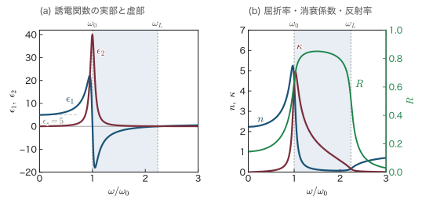
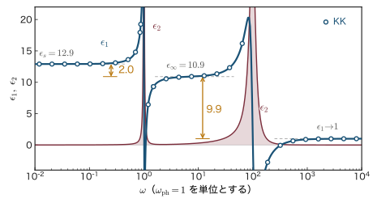
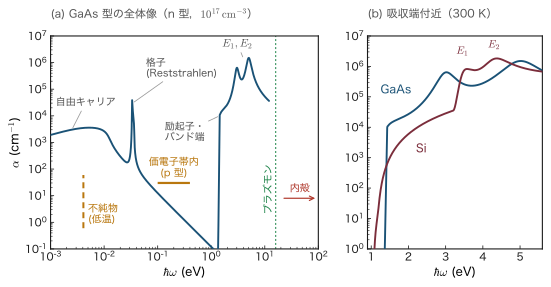
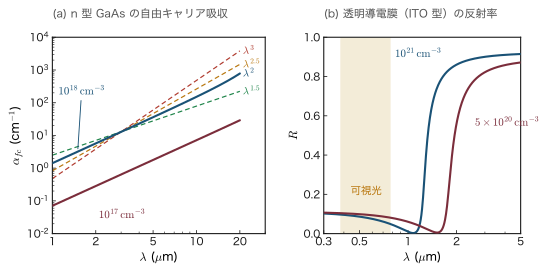
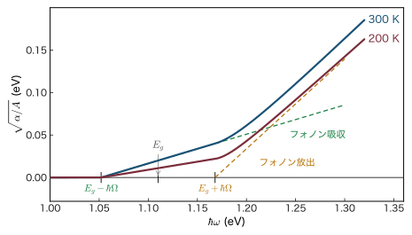
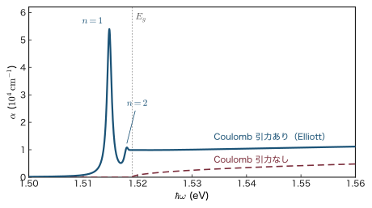
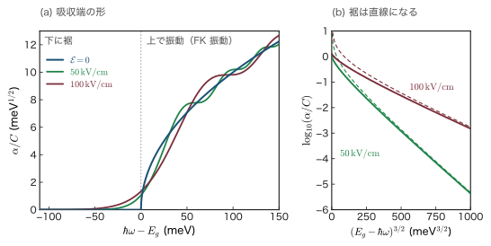
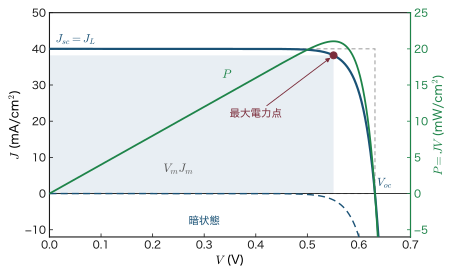

第25章半導体の光吸収 — Kramers–Kronig の関係式から励起子まで
太陽電池も，デジタルカメラの撮像素子も，光ファイバ通信の受光器も，すべて「半導体が光を吸収する」ことを使っている．第17章17.1節では，光子がほとんど運動量を運ばないことから直接遷移と間接遷移を区別し，吸収端の形 $\alpha\propto(\hbar\omega-E_g)^{1/2}$ と $(\hbar\omega\pm\hbar\Omega-E_g)^2$ を結合状態密度から導いた．しかしそこでは「比例する」と言っただけで，吸収係数 $\alpha$ が何 $\mathrm{cm^{-1}}$ なのかは計算しなかった．吸収端より下の鋭い線（励起子）も，補足で束縛エネルギーの式を示しただけだった．本章はその続きであり，光吸収を「数値が出せる」ところまで仕上げる．
話は2つの数から始まる．光が物質に入ると，速さが変わり（屈折率 $n$），弱まっていく（消衰係数 $\kappa$）．高校物理の屈折率に虚部 $\kappa$ を付け加えた複素屈折率 $\tilde n=n+i\kappa$ だけで，反射率・吸収係数・誘電関数がすべて表せる（25.1節）．本章の山場は25.2節である．$n$ と $\kappa$ は独立ではない．「結果は原因より後にしか起こらない」という因果律だけから，吸収スペクトルを全周波数で知れば屈折率が計算できてしまうという Kramers–Kronig（クラマース・クローニッヒ）の関係式が導かれる．同じ論法から，吸収の総量が電子の数だけで決まるという $f$ 和則も出てくる．
次に，吸収の「仕組み」を一つずつ見ていく．遠赤外から紫外までの吸収スペクトルを機構ごとに分類し（25.3節），ドープした半導体の自由キャリアが赤外を吸収する理由とプラズマ端（透明導電膜の原理）を Drude（ドルーデ）の式から導く（25.4節）．続いて量子力学に入る．電子と電磁場の結合 $\Ham'=(e/m)\bm{A}\cdot\hat{\pp}$ と Fermi（フェルミ）の黄金律から，GaAs の吸収係数が $10^4\,\mathrm{cm^{-1}}$ の桁になることを実際に計算し（25.5節），フォノンが仲立ちする間接遷移を2次の摂動として扱って，Si の吸収端の解析法（$\sqrt\alpha$ プロット）を学ぶ（25.6節）．25.7節では電子と正孔の Coulomb（クーロン）引力が作る水素原子のような状態——励起子——を扱い，吸収端の形そのものが Coulomb 引力で変わることを Elliott（エリオット）の式で見る．
最後に，外から磁場や電場をかけると吸収がどう変わるか——Landau（ランダウ）準位間の吸収，Franz–Keldysh（フランツ・ケルディッシュ）効果，量子閉じ込め Stark（シュタルク）効果——を調べ，光通信の電気吸収変調器につなげる（25.8節）．そして吸収された光をどう電気信号に変えるか——光伝導と光起電力——を扱い，太陽電池の電流–電圧特性と，変換効率の理論的な上限である Shockley–Queisser（ショックレー・クワイサー）限界の考え方までを導く（25.9節）．第24章の p-n 接合が，ここで光と出会う．次の第26章では，本章の逆過程である発光とレーザーを扱う．
- 媒質中の Maxwell（マクスウェル）方程式から複素屈折率 $\tilde n=n+i\kappa$ を導き，$\epsilon_1=n^2-\kappa^2$，$\epsilon_2=2n\kappa$，吸収係数 $\alpha=2\omega\kappa/c$，反射率 $R=\dfrac{(n-1)^2+\kappa^2}{(n+1)^2+\kappa^2}$ を自分で導けるようになる
- Lorentz（ローレンツ）振動子模型の誘電関数と，それが屈折率の分散・反射・吸収をまとめて説明すること
- 因果律から Kramers–Kronig の関係式を一歩ずつ導き，吸収から屈折率を，反射率から誘電関数を求める方法と，$f$ 和則 $\int_0^\infty\omega\epsilon_2\,\dd\omega=\frac{\pi}{2}\omega_p^2$ を理解する
- 遠赤外から紫外までの吸収機構（自由キャリア・格子・不純物・価電子帯内・励起子・バンド端・臨界点・プラズモン・内殻）を見分ける
- 自由キャリア吸収 $\alpha_{fc}\propto\lambda^2$ とプラズマ端を導き，透明導電膜と赤外窓材の設計に使う
- 最小結合と黄金律からバンド間直接遷移の吸収係数を絶対値まで計算し，選択則を群論で判定する
- 間接遷移を2次の摂動として扱い，$\sqrt\alpha$ プロットから $E_g$ とフォノンのエネルギーを読み取る
- Wannier–Mott（ワニエ・モット）励起子と Frenkel（フレンケル）励起子，Elliott の式，量子井戸の2次元励起子（束縛エネルギー $4R^*$）を理解する
- 磁場中の吸収（$\Delta n=0$ の選択則）と Franz–Keldysh 効果（電気光学エネルギー $\hbar\theta$ と Airy（エアリー）関数）を導く
- 光伝導利得，太陽電池の光電流 $J_L=eG(L_n+L_p+W)$，開放電圧・曲線因子・変換効率，Shockley–Queisser 限界，受光器の応答度を計算できるようになる
25.1 電子と光の相互作用（現象論）
25.1.1 光が半導体に入ると何が起こるか
Si のウェハを手に取ると，鏡のように光る灰色の板に見える．光を通さないので不透明だが，金属ほどには光らない．ところが赤外線カメラで見ると，同じウェハがガラスのように透き通る．実際，Si は波長 $1.2\,\mu\mathrm{m}$ より長い赤外線のレンズや窓に使われている．GaAs も同じで，波長 $0.87\,\mu\mathrm{m}$ より短い光は通さず，長い光は通す．この境目の波長が，第17章の表17.2 の吸収端の波長 $\lambda_g=hc/E_g$ にほかならない．
光が半導体の板に当たったときに起こることは，図25.1 の3つにまとめられる．(i) 一部は表面で反射される．(ii) 中に入った光は進むにつれて弱まる（吸収される）．吸収された光子のエネルギーは，電子を価電子帯から伝導帯へ持ち上げ，電子–正孔対を作るのに使われる．(iii) 吸収しきれなかった光が裏面から透過する．本節では，この3つを2つの数——屈折率 $n$ と消衰係数 $\kappa$——で記述する方法を，Maxwell 方程式から導く．
記号の約束：時間依存性・複素振幅・複素屈折率（本章で統一）
- 時間依存性は $\ee^{-i\omega t}$（物理学の慣用）．振動する量はすべて複素振幅を使って $\mathcal{E}(t)=\mathrm{Re}\bigl[\mathcal{E}_\omega\ee^{-i\omega t}\bigr]=\frac12\bigl(\mathcal{E}_\omega\ee^{-i\omega t}+\mathcal{E}_\omega^*\ee^{i\omega t}\bigr)$ と書く．したがって $\abs{\mathcal{E}_\omega}$ は振動の振幅（最大値）である．$\partial/\partial t$ は $-i\omega$ に置き換わる．
- 電場はベクトルを $\EE$，大きさ・成分を $\mathcal{E}$（スクリプトの E）と書き，エネルギー $E$ と区別する．
- 誘電関数（比誘電率）$\epsilon(\omega)=\epsilon_1+i\epsilon_2$，複素屈折率 $\tilde n=n+i\kappa$（$\kappa$ はカッパ．消衰係数）．この約束では，光を吸収する媒質で $\epsilon_2\gt0$，$\kappa\gt0$ になる．吸収係数は $\alpha$．
- 応答関数の Fourier（フーリエ）変換は $\chi(\omega)=\int\chi(t)\ee^{i\omega t}\dd t$（25.2節）．この約束のもとで $\chi(\omega)$ は複素 $\omega$ 平面の上半面で解析的になる．
- 25.1〜25.3節では屈折率を $n$ と書く．屈折率とキャリア密度がともに現れる25.4節以降では，屈折率を $n_r$，キャリア（電子または正孔）の密度を $N$ と書いて区別する（25.9節では電子と正孔の密度を $n$，$p$ と書く）．
- 本部ではエネルギーを $E$（$E_c$，$E_v$，$E_g$ など），換算質量を $m_r$ と書く（第17章の $\epsilon$，$\mu$ に当たる．本章の $\epsilon$ は誘電関数，$\mu$ は移動度なので，その意味には使わない）．
- 電気工学の本は $\ee^{j\omega t}$ と $\tilde n=n-jk$ を使う．虚部の符号がすべて逆になるので，式を引用するときは注意すること．
記号の約束：同じ文字の使い分け（本章全体）
本章は扱う範囲が広いので，同じ文字を別の意味に使うことがある．文脈で区別できるが，紛らわしいものを挙げておく．
- $\kappa$：消衰係数．25.8.2項のトンネルの減衰定数は $\kappa_{\mathrm t}$ と書いて区別する．
- $\alpha$：吸収係数．電子分極率は $\alpha_e$（25.1.6項），Urbach（ウルバッハ）則の定数は $\alpha_{\mathrm U}$（25.3.4項）と添字を付ける．
- $\sigma$：伝導度（$\sigma_0$ は直流伝導度）．25.9.7項の表面と内部の伝導度は $\sigma_s$，$\sigma_b$，25.8.1項の円偏光は $\sigma^\pm$ と書く．
- $\tau$：25.2節では応答関数の時間差，25.4節では運動量緩和時間 $\tau_m$，25.9節ではキャリアの寿命 $\tau$（$\tau_n$，$\tau_p$）．
- $\eta$：受光器の量子効率（25.9.8項）．太陽電池の変換効率は $\eta_c$ と書く．25.2.3項の小さな半円の半径 $\eta$ と，25.8.2項の $\eta=(E_g-\hbar\omega)/\hbar\theta$ は，その項だけで使う記号である．
- $\theta$：25.2.7項の $\theta$ は反射の位相，25.8節の $\hbar\theta$ は電気光学エネルギーで，別の量である．
- $R$：反射率．図25.3 の積分路の半径 $R$ はその項だけの記号で，$R^*$ は励起子の束縛エネルギー（25.7節．第26章では同じ量を $E_{ex}$ と書く）である．
- $J$：25.3節・25.5節では結合状態密度 $J(\hbar\omega)$，25.9節では電流密度．
- $A$，$C$：比例定数として何度か使う（例題25.5 と定理25.3 の $A$，定理25.4 と定理25.5 の $C$ はそれぞれ別の定数）．25.5節の太字の $\bm{A}$ はベクトルポテンシャル，25.9.2項の $A$ は断面積．
- $K$：25.1節では媒質中の（複素）波数，25.7節では励起子の重心の波数 $\bm K$．
- $\lambda$：波長．25.7.6項の変分の長さ $\lambda$ はその項だけの記号．
- $\Omega$：フォノンの角振動数．単位胞の体積は $v_c$ と書く．
- $\mu$：移動度．$\mu_0$ は真空の透磁率，$\mu_B$ は Bohr（ボーア）磁子（25.8.1項）．
25.1.2 媒質中の Maxwell 方程式から波動方程式へ
出発点は媒質中の Maxwell 方程式（SI．姉妹編 大学基礎物理学 第42章42.2，物質中の場は 第41章41.1）である．
$$ \nabla\cdot\bm{D}=\rho_{\mathrm{ext}},\qquad \nabla\cdot\BB=0,\qquad \nabla\times\EE=-\frac{\partial\BB}{\partial t},\qquad \nabla\times\bm{H}=\jj+\frac{\partial\bm{D}}{\partial t} $$ここで $\bm{D}=\epsilon_0\EE+\bm{P}$ は電束密度，$\bm{P}$ は分極（単位体積あたりの電気双極子モーメント），$\bm{H}$ は磁場の強さである．半導体は磁性体ではないので $\BB=\mu_0\bm{H}$（$\mu_0$ は真空の透磁率）としてよい．
半導体の中の電荷は2種類に分けられる．原子に縛られた電子（価電子帯の電子）や，イオンの変位が作る分極 $\bm{P}$ と，自由に動ける伝導電子・正孔が運ぶ電流 $\jj$ である．どちらも電場に比例して応答するとし（線形応答），それぞれ
$$ \bm{P}=\epsilon_0\chi_b(\omega)\EE,\qquad \jj=\sigma(\omega)\EE $$と書く．$\chi_b$ は束縛電荷の感受率，$\sigma$ は伝導度である．
導出1：分極と電流は1つの複素誘電関数にまとめられる
すべての量が $\ee^{-i\omega t}$ で振動するとする．$\partial/\partial t\to-i\omega$ と置き換えると，Ampère–Maxwell（アンペール・マクスウェル）の式の右辺は
$$ \jj+\frac{\partial\bm{D}}{\partial t} =\sigma\EE-i\omega\bigl(\epsilon_0\EE+\epsilon_0\chi_b\EE\bigr) =\sigma\EE-i\omega\epsilon_0(1+\chi_b)\EE $$$\epsilon_b\equiv1+\chi_b$（束縛電荷による比誘電率）と書き，第1項を $-i\omega\epsilon_0$ でくくり出す．$\sigma=-i\omega\epsilon_0\times\dfrac{\sigma}{-i\omega\epsilon_0}=-i\omega\epsilon_0\times\dfrac{i\sigma}{\epsilon_0\omega}$（$1/(-i)=i$ を使った）だから
$$ \jj+\frac{\partial\bm{D}}{\partial t}=-i\omega\epsilon_0\left[\epsilon_b+\frac{i\sigma}{\epsilon_0\omega}\right]\EE \equiv-i\omega\epsilon_0\,\epsilon(\omega)\EE $$すなわち
∎ 振動する電場に対しては，「束縛電荷が分極する」ことと「自由電荷が電流を流す」ことを区別する必要がない．どちらも1つの複素誘電関数 $\epsilon(\omega)$ に入る．束縛電荷の寄与がほぼ一定の値 $\epsilon_\infty$（高周波誘電率，第19章）とみなせる振動数の範囲——格子振動より高く，吸収端より低い赤外の透明な領域——では $\epsilon=\epsilon_\infty+i\sigma(\omega)/(\epsilon_0\omega)$ と書ける（可視域では Si や GaAs の束縛電荷の寄与は振動数とともに大きく変わり，吸収もあるので，一定とはみなせない．例題25.1）．25.4節の自由キャリア吸収はこの式から出発する．
導出2：電磁波の波動方程式と複素屈折率
外部電荷のない一様な媒質を考える．Faraday（ファラデー）の式 $\nabla\times\EE=i\omega\BB$ の回転をとり，$\BB=\mu_0\bm{H}$ と導出1の結果を使う．
$$ \nabla\times(\nabla\times\EE)=i\omega\mu_0\nabla\times\bm{H}=i\omega\mu_0\bigl(-i\omega\epsilon_0\epsilon\EE\bigr)=\omega^2\mu_0\epsilon_0\,\epsilon\EE=\frac{\omega^2}{c^2}\epsilon\EE $$（$\mu_0\epsilon_0=1/c^2$．）左辺はベクトル解析の公式で $\nabla(\nabla\cdot\EE)-\nabla^2\EE$ である．外部電荷がなければ $\nabla\cdot(\epsilon\EE)=0$，一様な媒質では $\epsilon$ が定数なので $\nabla\cdot\EE=0$（横波）．したがって
$z$ 方向に進む平面波 $\EE=\mathcal{E}_\omega\hat{\bm{e}}\,\ee^{i(Kz-\omega t)}$（$\hat{\bm{e}}$ は $z$ に垂直な単位ベクトル，$K$ は媒質の中での波数．$\epsilon$ が複素数なら $K$ も複素数になる）を代入すると $\nabla^2\to-K^2$ なので
$$ -K^2+\frac{\omega^2}{c^2}\epsilon=0 \qquad\Longrightarrow\qquad K=\frac{\omega}{c}\sqrt{\epsilon}\equiv\frac{\omega}{c}\tilde n $$∎ 真空中の波数 $\omega/c$ に掛かる因子 $\tilde n=\sqrt{\epsilon}$ が複素屈折率（complex refractive index）である．$\epsilon$ が複素数なので $\tilde n$ も複素数になる．複素数 $\epsilon$ の平方根には符号だけが違う2つの値（$\pm\tilde n$）があるが，そのうち虚部（$\mathrm{Im}$）が $0$ 以上の方，すなわち $+z$ に進むにつれて減衰する $\mathrm{Im}\,\tilde n\ge0$ の方を選ぶ．
25.1.3 複素屈折率と吸収係数
定義：屈折率 $n$，消衰係数 $\kappa$，吸収係数 $\alpha$
複素屈折率の実部と虚部を $\tilde n=n+i\kappa$ と書き，$n$ を屈折率（refractive index），$\kappa$ を消衰係数（extinction coefficient）という．光の強さ（単位面積を単位時間に通るエネルギー）が単位長さあたりに減る割合を吸収係数（absorption coefficient）$\alpha$ という：
$$ \frac{\dd I}{\dd z}=-\alpha I $$導出：$\alpha=2\omega\kappa/c$，Beer–Lambert の法則，$\epsilon_1=n^2-\kappa^2$，$\epsilon_2=2n\kappa$
ステップ1：波の形．$K=(\omega/c)(n+i\kappa)$ を平面波に代入すると，$\ee^{iKz}=\ee^{i\omega nz/c}\,\ee^{-\omega\kappa z/c}$ だから
$$ \EE(z,t)=\mathcal{E}_\omega\hat{\bm{e}}\,\ee^{-\omega\kappa z/c}\,\ee^{i\omega(nz/c-t)} $$第2の因子は「速さ $c/n$ で進む波」を表し（$n$ が高校物理の屈折率），第1の因子は「進むにつれて振幅が減る」ことを表す．
ステップ2：強さ．光の強さは電場の振幅の2乗に比例する（25.1.4項で示すように $I=\frac12n c\epsilon_0\abs{\mathcal{E}}^2$）．振幅が $\ee^{-\omega\kappa z/c}$ なら強さは $\ee^{-2\omega\kappa z/c}$ である：
$$ I(z)=I(0)\,\ee^{-2\omega\kappa z/c} $$ステップ3：$\alpha$ を読む．これを $z$ で微分すると $\dd I/\dd z=-(2\omega\kappa/c)I$．定義と比べて，真空中の波長 $\lambda=2\pi c/\omega$ を使えば
後半が Beer–Lambert（ベール・ランベルト）の法則である．強さが $1/\ee$ になる深さ $1/\alpha$ を侵入深さ（penetration depth）という．
ステップ4：$\epsilon$ との関係．$\epsilon=\tilde n^2=(n+i\kappa)^2=n^2+2in\kappa+i^2\kappa^2$ の実部と虚部を比べて
ステップ5：逆に解く．第2式から $\kappa=\epsilon_2/(2n)$．第1式に代入して $n^2-\epsilon_2^2/(4n^2)=\epsilon_1$，両辺に $4n^2$ を掛けて $4n^4-4\epsilon_1n^2-\epsilon_2^2=0$．これは $x\equiv n^2$ についての2次方程式 $4x^2-4\epsilon_1x-\epsilon_2^2=0$ で，解の公式より $x=\dfrac{\epsilon_1\pm\sqrt{\epsilon_1^2+\epsilon_2^2}}{2}$．$\sqrt{\epsilon_1^2+\epsilon_2^2}\ge\abs{\epsilon_1}$ なので − の根は $0$ 以下になり，$n^2\gt0$ を満たすのは + の根だけである．$\kappa$ は第1式を $\kappa^2=n^2-\epsilon_1=\dfrac{\sqrt{\epsilon_1^2+\epsilon_2^2}-\epsilon_1}{2}$ と書き直して求める．どちらも正の平方根をとると
$$ n=\sqrt{\frac{\sqrt{\epsilon_1^2+\epsilon_2^2}+\epsilon_1}{2}},\qquad \kappa=\sqrt{\frac{\sqrt{\epsilon_1^2+\epsilon_2^2}-\epsilon_1}{2}} $$∎ 吸収が弱い（$\kappa\ll n$）ときは $n\simeq\sqrt{\epsilon_1}$，$\kappa\simeq\epsilon_2/(2\sqrt{\epsilon_1})$，したがって
$$ \alpha\simeq\frac{\omega\,\epsilon_2}{n\,c} $$となる．吸収係数は誘電関数の虚部 $\epsilon_2$ に比例する．量子論（25.5節）が計算するのはこの $\epsilon_2$ である．
なぜ：$\kappa$ はたった $0.02$ でも光は数 $\mu$m で消える
式 \eqref{eq:25-alpha} の分母は波長 $\lambda$ である．可視光では $\lambda\approx0.5\,\mu\mathrm{m}$ なので，$\kappa=0.02$ という一見小さな値でも $\alpha=4\pi\times0.02/(0.5\,\mu\mathrm{m})\approx0.5\,\mu\mathrm{m}^{-1}$，侵入深さは $2\,\mu\mathrm{m}$ 程度にすぎない．$\kappa$ は「真空中の波長 $\lambda$ と同じ距離を進むあいだに，振幅が $\ee^{-2\pi\kappa}$ 倍，強さが $\ee^{-4\pi\kappa}$ 倍になる」という意味の量である．$\kappa=0.02$ なら1波長で強さは $\ee^{-0.25}=0.78$ 倍になり，わずか4波長ほど（$1/(4\pi\kappa)\simeq4$）進めば $1/\ee$ になる．$\kappa$ が $10^{-4}$ 程度とさらに小さくても，波長の千倍ほど（$1/(4\pi\times10^{-4})\simeq800$）進めば強さは $1/\ee$ になり，吸収が効いてくる．逆に，光ファイバのように $\mathrm{km}$ 単位で光を送るには，$\kappa\sim10^{-11}$ という驚くほど小さい値が必要になる（第26章）．
25.1.4 垂直入射の反射率 — 境界条件から Fresnel の式を導く
板の表面で光の何割が反射されるかは，表面での電場と磁場のつながり方（境界条件）で決まる．そのために，まず磁場と光の強さを電場で表しておく．
導出1：媒質中の平面波の磁場と光の強さ $I=\frac12nc\epsilon_0\abs{\mathcal{E}}^2$
$\EE=\mathcal{E}_\omega\hat{\bm{e}}\,\ee^{i(Kz-\omega t)}$ を Faraday の式 $\nabla\times\EE=i\omega\mu_0\bm{H}$ に入れる．$\nabla\times$ は $iK\hat{\bm{z}}\times$ になるので
$$ iK\,\hat{\bm{z}}\times\EE=i\omega\mu_0\bm{H} \qquad\Longrightarrow\qquad \bm{H}=\frac{K}{\omega\mu_0}\hat{\bm{z}}\times\EE=\frac{\tilde n}{c\mu_0}\hat{\bm{z}}\times\EE $$（$K=\tilde n\omega/c$．）$-z$ 向きに進む波では $K\to-K$ なので符号が逆になる．光の強さは Poynting（ポインティング）ベクトル $\EE\times\bm{H}$ の時間平均である．複素振幅で書いた2つの量 $a=\mathrm{Re}[a_\omega\ee^{-i\omega t}]$，$b=\mathrm{Re}[b_\omega\ee^{-i\omega t}]$ の積の時間平均は $\frac12\mathrm{Re}(a_\omega b_\omega^*)$ なので（$\ee^{\mp2i\omega t}$ の項は平均すると消える），
$$ I=\frac12\mathrm{Re}\left(\frac{\tilde n^*}{c\mu_0}\right)\abs{\mathcal{E}}^2=\frac12\,n\,c\,\epsilon_0\abs{\mathcal{E}}^2 $$∎ 最後に $1/(c\mu_0)=c\epsilon_0$（$\epsilon_0\mu_0=1/c^2$ より）を使った．$\abs{\mathcal{E}}$ は振幅であり，吸収のある媒質では減衰因子を含む．この式は25.5節で吸収係数を計算するときにもう一度使う．
導出2：垂直入射の反射率 $R=\dfrac{(n-1)^2+\kappa^2}{(n+1)^2+\kappa^2}$
$z\lt0$ が真空（$\tilde n=1$），$z\gt0$ が半導体（$\tilde n$）で，光が $z$ 軸に沿って垂直に入射する．$k=\omega/c$ として，3つの波の電場を
$$ \text{入射}:\ \mathcal{E}_i\,\ee^{i(kz-\omega t)},\qquad \text{反射}:\ \mathcal{E}_r\,\ee^{i(-kz-\omega t)},\qquad \text{透過}:\ \mathcal{E}_t\,\ee^{i(\tilde nkz-\omega t)} $$と置く（偏光の向き $\hat{\bm{e}}$ はすべて同じ）．導出1により，磁場はそれぞれ $\dfrac{1}{c\mu_0}\mathcal{E}_i$，$-\dfrac{1}{c\mu_0}\mathcal{E}_r$，$\dfrac{\tilde n}{c\mu_0}\mathcal{E}_t$ に比例する（反射波は $-z$ に進むので負号）．
境界条件．面電流のない境界では，電場と磁場の接線成分が連続である（大学基礎物理学 第41章41.3）．垂直入射では場はすべて面に平行（接線成分）なので，$z=0$ で
$$ \mathcal{E}_i+\mathcal{E}_r=\mathcal{E}_t,\qquad \mathcal{E}_i-\mathcal{E}_r=\tilde n\,\mathcal{E}_t $$（第2式は磁場の連続から共通因子 $1/(c\mu_0)$ を約したもの．）
解く．2式を足すと $2\mathcal{E}_i=(1+\tilde n)\mathcal{E}_t$，引くと $2\mathcal{E}_r=(1-\tilde n)\mathcal{E}_t$．比をとって
これが垂直入射の Fresnel（フレネル）の式である（$r$，$t$ は振幅反射率と振幅透過率．この $t$ は時間とは別の記号）．反射率は反射波と入射波の強さの比で，どちらも真空中の波だから $R=\abs{r}^2$．$\tilde n=n+i\kappa$ を入れて
$$ R=\frac{\abs{(1-n)-i\kappa}^2}{\abs{(1+n)+i\kappa}^2} $$複素数の絶対値の2乗は（実部）$^2$＋（虚部）$^2$ だから
∎ 透明な媒質（$\kappa=0$）では $R=\left(\dfrac{n-1}{n+1}\right)^2$ となる．ガラス（$n=1.5$）なら $0.04$，すなわち4%．反射率が大きくなるのは，$n$ が1から大きくずれるときか，$\kappa$ が大きいとき（金属）である．
補足：板の透過率から $\alpha$ を測る
厚さ $d$ の板では，裏面でも同じ割合 $R$ で反射が起こり，光は板の中を何度も往復する．干渉を無視すると（光の可干渉距離より板が厚いとき），1回目に透過する光は $(1-R)\ee^{-\alpha d}(1-R)I_0$，その後の1往復ごとに $R^2\ee^{-2\alpha d}$ 倍の光が加わるので，等比級数の和をとって
$$ T=\frac{(1-R)^2\ee^{-\alpha d}}{1-R^2\ee^{-2\alpha d}} $$$\alpha d\gg1$ なら $T\simeq(1-R)^2\ee^{-\alpha d}$．厚さ $d_1$，$d_2$ の2枚の透過率 $T_1$，$T_2$ を測れば，比をとって $R$ が消え，$\alpha=\ln(T_1/T_2)/(d_2-d_1)$ が得られる．吸収の強い領域（$\alpha\gtrsim10^4\,\mathrm{cm^{-1}}$）では $\mu$m 以下の薄膜が必要になるので，反射率のスペクトルから Kramers–Kronig の関係式（25.2節）で $\alpha$ を求めることが多い．
例題25.1 Si に可視光を当てる — 吸収係数・侵入深さ・反射率
Si の光学定数は，光子エネルギー $2.0\,\mathrm{eV}$（赤）で $n\simeq3.9$，$\kappa\simeq0.018$，$2.5\,\mathrm{eV}$（緑）で $n\simeq4.3$，$\kappa\simeq0.045$ 程度である．それぞれについて (1) 真空中の波長，(2) 吸収係数 $\alpha$ と侵入深さ $1/\alpha$，(3) 垂直入射の反射率 $R$，(4) $\epsilon_1$ と $\epsilon_2$ を求めよ．
解答．(1) $\lambda=hc/E=1239.8\,\mathrm{eV\,nm}/E$ より，$2.0\,\mathrm{eV}$ で $620\,\mathrm{nm}$，$2.5\,\mathrm{eV}$ で $496\,\mathrm{nm}$．
(2) 式 \eqref{eq:25-alpha} $\alpha=4\pi\kappa/\lambda$ に $1\,\mathrm{nm}=10^{-7}\,\mathrm{cm}$ を使って
$$ 2.0\,\mathrm{eV}:\ \alpha=\frac{4\pi\times0.018}{620\times10^{-7}\,\mathrm{cm}}=3.6\times10^{3}\,\mathrm{cm^{-1}},\qquad \frac1\alpha=2.7\,\mu\mathrm{m} $$ $$ 2.5\,\mathrm{eV}:\ \alpha=\frac{4\pi\times0.045}{496\times10^{-7}\,\mathrm{cm}}=1.1\times10^{4}\,\mathrm{cm^{-1}},\qquad \frac1\alpha=0.88\,\mu\mathrm{m} $$(3) 式 \eqref{eq:25-R} より
$$ \begin{aligned} &2.0\,\mathrm{eV}:\ R=\frac{(2.9)^2+(0.018)^2}{(4.9)^2+(0.018)^2}=\frac{8.41}{24.01}=0.35,\\ &2.5\,\mathrm{eV}:\ R=\frac{(3.3)^2+(0.045)^2}{(5.3)^2+(0.045)^2}=\frac{10.89}{28.09}=0.39 \end{aligned} $$(4) 式 \eqref{eq:25-eps12} より，$2.0\,\mathrm{eV}$ で $\epsilon_1=3.9^2-0.018^2=15.2$，$\epsilon_2=2\times3.9\times0.018=0.14$．$2.5\,\mathrm{eV}$ で $\epsilon_1=4.3^2-0.045^2=18.5$，$\epsilon_2=2\times4.3\times0.045=0.39$．
∎ 3つのことが読み取れる．第一に，Si は可視光の35〜40% を反射する．Si ウェハが金属のように光って見えるのはこのためで，太陽電池では表面に屈折率 $2$ 程度の窒化ケイ素の反射防止膜（厚さ約 $75\,\mathrm{nm}$）を付けて反射を抑える．太陽電池が濃い青色に見えるのはこの膜の干渉色である．第二に，緑の光は $1\,\mu\mathrm{m}$ 以内で吸収されるが，赤の光は数 $\mu$m 入り込む．青や緑の光で作られた電子–正孔対は表面近くにできるので，太陽電池の表面側の層（エミッタ．光の入る側にあり，基板と逆の型に高濃度ドープした層）は薄く作らなければならない．第三に，$\epsilon_2$ は $\epsilon_1$ の1〜2% にすぎないのに吸収は強い．25.1.3項の「なぜ」で見た，波長の短さの効果である．
25.1.5 表皮深さ — 伝導度が大きい極限
式 \eqref{eq:25-eps-sigma} で伝導度の項が束縛電荷の項より圧倒的に大きい場合（金属や高濃度ドープ半導体のマイクロ波領域）を考える．
導出：表皮深さ $\delta=\sqrt{2/(\mu_0\sigma\omega)}$
$\sigma/(\epsilon_0\omega)\gg\epsilon_b$ かつ $\sigma$ が実数（$\omega\tau\ll1$．$\tau$ は電子が散乱されるまでの平均の時間で，25.4節で運動量緩和時間 $\tau_m$ として扱う．このとき $\sigma$ は直流伝導度 $\sigma_0$ に等しい）とすると，$\epsilon\simeq i\sigma/(\epsilon_0\omega)$．$i=\ee^{i\pi/2}$ の平方根は $\ee^{i\pi/4}=(1+i)/\sqrt2$ だから
$$ \tilde n=\sqrt{\frac{i\sigma}{\epsilon_0\omega}}=\frac{1+i}{\sqrt2}\sqrt{\frac{\sigma}{\epsilon_0\omega}} \qquad\Longrightarrow\qquad n=\kappa=\sqrt{\frac{\sigma}{2\epsilon_0\omega}} $$電場の振幅は $\ee^{-\omega\kappa z/c}\equiv\ee^{-z/\delta}$ で減るので
$$ \delta=\frac{c}{\omega\kappa}=\frac{c}{\omega}\sqrt{\frac{2\epsilon_0\omega}{\sigma}}=\sqrt{\frac{2\epsilon_0c^2}{\sigma\omega}} $$$\epsilon_0c^2=1/\mu_0$ を使えば
∎ $\delta$ を表皮深さ（skin depth）という．電場（と電流）が $1/\ee$ になる深さであり，強さ（$\propto$ 振幅の2乗）の侵入深さ $1/\alpha$ はその半分 $\delta/2$ である．
例題25.2 Cu と高濃度ドープ Si の表皮深さ
(1) Cu（$\sigma=5.96\times10^{7}\,\mathrm{S/m}$）の $50\,\mathrm{Hz}$ と $1\,\mathrm{GHz}$ での表皮深さを求めよ．(2) 抵抗率 $1\times10^{-3}\,\Omega\,\mathrm{cm}$ の $\mathrm{n^+}$ 型 Si（束縛電荷の比誘電率 $\epsilon_b=11.7$）の $10\,\mathrm{GHz}$ での表皮深さを求め，近似 $\sigma/(\epsilon_0\omega)\gg\epsilon_b$ が成り立つことを確かめよ．
解答．(1) $\mu_0=1.257\times10^{-6}\,\mathrm{H/m}$．$50\,\mathrm{Hz}$ では $\omega=2\pi\times50=314\,\mathrm{s^{-1}}$ なので
$$ \delta=\sqrt{\frac{2}{(1.257\times10^{-6})(5.96\times10^{7})(314)}}=\sqrt{\frac{2}{2.35\times10^{4}}}=9.2\times10^{-3}\,\mathrm{m}=9.2\,\mathrm{mm} $$$1\,\mathrm{GHz}$ では $\omega=6.28\times10^{9}\,\mathrm{s^{-1}}$，$\mu_0\sigma\omega=4.71\times10^{11}$ なので $\delta=\sqrt{2/(4.71\times10^{11})}=2.1\times10^{-6}\,\mathrm{m}=2.1\,\mu\mathrm{m}$．
(2) $\sigma=1/\rho=1/(1\times10^{-5}\,\Omega\,\mathrm{m})=1\times10^{5}\,\mathrm{S/m}$（$1\,\Omega\,\mathrm{cm}=10^{-2}\,\Omega\,\mathrm{m}$）．$\omega=6.28\times10^{10}\,\mathrm{s^{-1}}$ で $\mu_0\sigma\omega=7.90\times10^{9}$，$\delta=\sqrt{2/(7.90\times10^{9})}=1.6\times10^{-5}\,\mathrm{m}=16\,\mu\mathrm{m}$．近似の条件は
$$ \sigma/(\epsilon_0\omega)=10^{5}/(8.85\times10^{-12}\times6.28\times10^{10})=1.8\times10^{5}\gg\epsilon_b=11.7 $$で，十分に成り立つ．
∎ 商用電源の送電線が太すぎても意味がないのは，電流が表面の約 $1\,\mathrm{cm}$ にしか流れないからである．$\mathrm{GHz}$ 帯の高周波回路では電流は表面の数 $\mu$m に集中するので，配線の表面の粗さや薄い金属めっきの質が損失を決める．
25.1.6 Lorentz 振動子模型 — 減衰振動子の誘電関数
$\epsilon(\omega)$ がどんな形をしているかを知るために，最も簡単な模型を考える．原子に縛られた電子を「ばねにつながれた荷電粒子」とみなす Lorentz 振動子模型である．固有角振動数 $\omega_0$ は電子を励起するのに必要なエネルギー $\hbar\omega_0$ に対応する（半導体では吸収端そのものではなく，その上にある強いバンド間吸収の山のエネルギー，数 eV に当たる．例題25.3，例題25.7）．減衰率 $\gamma$ は励起が他の自由度へ逃げる速さを表す．第19章19.3節の電子分極率 $\alpha_e=e^2/(m\omega_0^2)$（吸収係数 $\alpha$ とは別の量）は，この模型の静的な極限であった．ここでは振動数依存性まで含めて解く（強制振動の共鳴は姉妹編 線形応答理論入門 第3章3.7 と，シミュレーター 減衰振動と強制振動 でも確かめられる）．
導出：$\epsilon(\omega)=1+\dfrac{\omega_p^2}{\omega_0^2-\omega^2-i\gamma\omega}$
ステップ1：運動方程式．電荷 $-e$，質量 $m$ の電子が，復元力 $-m\omega_0^2x$，摩擦力 $-m\gamma\dot x$，光の電場による力 $-e\mathcal{E}(t)$ を受ける：
$$ m\ddot x+m\gamma\dot x+m\omega_0^2x=-e\mathcal{E}_\omega\ee^{-i\omega t} $$ステップ2：定常解．電子は光と同じ振動数で振れるので $x=x_\omega\ee^{-i\omega t}$ と置く．$\dot x=-i\omega x$，$\ddot x=-\omega^2x$ を代入して $\ee^{-i\omega t}$ を約すと
$$ m\left(\omega_0^2-\omega^2-i\gamma\omega\right)x_\omega=-e\mathcal{E}_\omega \qquad\Longrightarrow\qquad x_\omega=-\frac{e}{m}\,\frac{\mathcal{E}_\omega}{\omega_0^2-\omega^2-i\gamma\omega} $$ステップ3：分極．電子1個の双極子モーメントは $(-e)x$．単位体積に $N$ 個あれば
$$ P_\omega=N(-e)x_\omega=\frac{Ne^2}{m}\,\frac{\mathcal{E}_\omega}{\omega_0^2-\omega^2-i\gamma\omega} $$ステップ4：誘電関数．$\epsilon=1+P_\omega/(\epsilon_0\mathcal{E}_\omega)$ だから
$\omega_p$ は第15章15.6節のプラズマ振動数と同じ形の量である．
ステップ5：実部と虚部．分母の複素共役 $\omega_0^2-\omega^2+i\gamma\omega$ を分子・分母に掛けて
$$ \epsilon_1=1+\frac{\omega_p^2(\omega_0^2-\omega^2)}{(\omega_0^2-\omega^2)^2+\gamma^2\omega^2},\qquad \epsilon_2=\frac{\omega_p^2\,\gamma\omega}{(\omega_0^2-\omega^2)^2+\gamma^2\omega^2} $$∎ $\omega\gt0$ で $\epsilon_2\gt0$ である．記号の約束（$\ee^{-i\omega t}$）のもとで，摩擦によるエネルギーの散逸が正の $\epsilon_2$ として現れている．束縛の強い他の電子（固有角振動数 $\omega_0'$ が $\omega_0$ よりずっと大きい内殻の電子など）の寄与は，$\omega\ll\omega_0'$ の範囲で一定値とみなして1の代わりに背景の $\epsilon_\infty$ と書けばよい．

物理的意味：図25.2 の4つの領域
- $\omega\ll\omega_0$（透明領域）：$\epsilon_2\simeq0$，$\epsilon_1\simeq1+\omega_p^2/\omega_0^2\equiv\epsilon_s$（静的誘電率）．光は吸収されずに進み，屈折率は $\sqrt{\epsilon_s}$ に近い．$\omega$ を上げると $n$ がゆっくり増える（正常分散，normal dispersion）．プリズムで青い光が赤い光より強く曲がるのはこのためである．
- $\omega\simeq\omega_0$（吸収線）：$\epsilon_2$ が $\omega_p^2/(\gamma\omega_0)$ の高さ，幅（半値全幅）$\gamma$ の山になる．山の中では $n$ が $\omega$ とともに減る（異常分散，anomalous dispersion）．
- $\omega_0\lt\omega\lt\omega_L$（反射帯）：電子の応答が電場と逆位相になり $\epsilon_1\lt0$．このとき $\tilde n$ はほぼ純虚数になり，光は表面から $1/(\omega\kappa/c)$ 程度しか入れず，ほとんど反射される．
- $\omega\gt\omega_L$（再び透明）：$0\lt\epsilon_1\lt1$．$\omega\to\infty$ では $\epsilon\to1-\omega_p^2/\omega^2$ となり，束縛は効かず電子は自由電子のように振る舞う．この性質が25.2節の $f$ 和則を生む．
補足：第19章の分極率・局所場とのつながり，振動子強度
$\omega\to0$ で式 \eqref{eq:25-lorentz} は $\epsilon_s-1=Ne^2/(\epsilon_0m\omega_0^2)=N\alpha_e/\epsilon_0$ となる．ここで $\alpha_e=e^2/(m\omega_0^2)$ は SI 単位での電子分極率（第19章の Gauss（ガウス）単位の $\alpha_e$ に $4\pi\epsilon_0$ を掛けたもの．$4\pi\to1/\epsilon_0$ の読み替え）である．第19章ではイオン結晶について局所場（Lorentz 場）の補正を入れて Clausius–Mossotti（クラウジウス・モソッティ）関係を導いたが，電子が結晶全体に広がっている共有結合性の半導体では局所場の補正は小さく，ここでは無視した．
実際の物質には固有振動数の異なる多くの振動子がある．$j$ 番目の振動子が電子1個あたり振動子強度（oscillator strength）$f_j$ を持つとすると
$$ \epsilon(\omega)=1+\frac{Ne^2}{\epsilon_0m}\sum_j\frac{f_j}{\omega_j^2-\omega^2-i\gamma_j\omega},\qquad\sum_jf_j=1 $$と書ける．量子力学では $f_j=(2m\omega_j/\hbar)\abs{\bra{j}x\ket{0}}^2$ であり，和が1になることは Thomas–Reiche–Kuhn（トーマス・ライヒェ・クーン）の和則として証明される（姉妹編 量子力学 第54章54.3）．
例題25.3 1個の Lorentz 振動子で Si の屈折率の分散を再現する
Si の誘電関数の虚部 $\epsilon_2$ は $\hbar\omega_0\simeq4.3\,\mathrm{eV}$ に大きな山を持つ（25.3節の $E_2$ 臨界点）．Si を減衰の無視できる1個の Lorentz 振動子（$\epsilon_\infty$ の代わりに1）で表す．(1) 静的誘電率 $\epsilon_s=11.7$ を再現するように $\hbar\omega_p$ を決めよ．(2) この模型で $\hbar\omega=1.0\,\mathrm{eV}$ と $2.0\,\mathrm{eV}$ の屈折率を求め，実測値（それぞれ約 $3.5$，約 $3.9$）と比べよ．(3) Si の価電子（1原子あたり4個）がすべて自由に振動するとしたときのプラズマエネルギーと比べよ．Si の原子密度は $5.0\times10^{22}\,\mathrm{cm^{-3}}$ である．
解答．(1) $\gamma\to0$ では式 \eqref{eq:25-lorentz} は $\epsilon_1=1+\omega_p^2/(\omega_0^2-\omega^2)$．$\omega=0$ で $\epsilon_s-1=\omega_p^2/\omega_0^2$ だから
$$ \hbar\omega_p=\hbar\omega_0\sqrt{\epsilon_s-1}=4.3\,\mathrm{eV}\times\sqrt{10.7}=14.1\,\mathrm{eV} $$(2) $\epsilon_1=1+(\epsilon_s-1)/[1-(\hbar\omega/\hbar\omega_0)^2]$ と書き直して
$$ 1.0\,\mathrm{eV}:\ \epsilon_1=1+\frac{10.7}{1-(1.0/4.3)^2}=1+\frac{10.7}{0.946}=12.3,\qquad n=\sqrt{12.3}=3.51 $$ $$ 2.0\,\mathrm{eV}:\ \epsilon_1=1+\frac{10.7}{1-(2.0/4.3)^2}=1+\frac{10.7}{0.784}=14.7,\qquad n=\sqrt{14.7}=3.83 $$実測（約 $3.5$，約 $3.9$）とよく合う．
(3) 価電子の密度は $4\times5.0\times10^{22}=2.0\times10^{23}\,\mathrm{cm^{-3}}=2.0\times10^{29}\,\mathrm{m^{-3}}$．
$$ \omega_p^{\mathrm{val}}=\sqrt{\frac{Ne^2}{\epsilon_0m}} =\sqrt{\frac{(2.0\times10^{29})(1.602\times10^{-19})^2}{(8.854\times10^{-12})(9.109\times10^{-31})}}\ \mathrm{s^{-1}} =2.52\times10^{16}\,\mathrm{s^{-1}} $$ $$ \hbar\omega_p^{\mathrm{val}}=(1.055\times10^{-34}\,\mathrm{J\,s})(2.52\times10^{16}\,\mathrm{s^{-1}})=2.66\times10^{-18}\,\mathrm{J} =\frac{2.66\times10^{-18}}{1.602\times10^{-19}}\,\mathrm{eV}=16.6\,\mathrm{eV} $$∎ (1) で決めた $14.1\,\mathrm{eV}$ は $16.6\,\mathrm{eV}$ より小さく，$(14.1/16.6)^2=0.72$ である．価電子の振動子強度の約7割が $4.3\,\mathrm{eV}$ 付近に集まっていると考えればよい．たった1つの振動子で，直接遷移の強い吸収が始まる $3.4\,\mathrm{eV}$ より下の Si の屈折率の分散が，数% の精度で再現できる．光学設計で使う Sellmeier（セルマイヤー）の分散式や，Wemple–DiDomenico（ウェンプル・ディドメニコ）の単一振動子模型は，この考え方を実用化したものである．
25.1.7 $f$ 和則の予告 — 吸収の総量は電子の数で決まる
Lorentz 模型の $\epsilon_2$ に $\omega$ を掛けて全振動数で積分してみると，結果は $\omega_0$ にも $\gamma$ にもよらず
$$ \int_0^\infty\omega\,\epsilon_2(\omega)\,\dd\omega=\frac{\pi}{2}\,\omega_p^2=\frac{\pi}{2}\,\frac{Ne^2}{\epsilon_0m} $$になる（例題25.6 で確かめる）．つまり，吸収線の位置や幅をどう変えても，吸収の総量は電子の密度 $N$ だけで決まる．これは模型によらない一般的な法則（$f$ 和則）であり，25.2節で因果律と高振動数での自由電子的な振る舞いから導く．
25.2 Kramers–Kronig の関係式
25.1節で，光学的な性質はすべて複素誘電関数 $\epsilon=\epsilon_1+i\epsilon_2$（または $\tilde n=n+i\kappa$）で表せることを見た．実部 $\epsilon_1$ は屈折（光の速さ）を，虚部 $\epsilon_2$ は吸収を表す．一見，この2つは別々の量に見える．ところが図25.2 をよく見ると，$\epsilon_2$ に山があるところで $\epsilon_1$ が必ず大きく波打っている．偶然ではない．本節では，「結果は原因の後にしか起こらない」という因果律だけから，$\epsilon_1$ と $\epsilon_2$ が互いに他方から計算できることを示す．模型（Lorentz 振動子かどうか）にも，量子論か古典論かにもよらない，きわめて一般的な結果である．導出には複素関数論の Cauchy（コーシー）の積分定理を使う（付録A の A.8節，姉妹編 大学数学 第25章25.3，線形応答理論入門 第5章5.4）．
25.2.1 出発点：因果律と応答関数
定義：応答関数と因果律
電場 $\mathcal{E}(t)$ に対する分極 $P(t)$ の線形応答を，最も一般的に
$$ P(t)=\epsilon_0\int_{-\infty}^{\infty}\chi(t-t')\,\mathcal{E}(t')\,\dd t' $$と書く．$\chi(\tau)$ は「時刻 $t'$ に加えた電場が，時間 $\tau=t-t'$ 後の分極にどれだけ効くか」を表す応答関数（response function）である（この節の $\tau$ は時間差を表す．25.4節の運動量緩和時間 $\tau_m$ や25.9節のキャリアの寿命 $\tau$ とは別の記号の使い方である）．物質の性質が時間とともに変わらなければ，$\chi$ は時間差 $\tau$ だけの関数になる．因果律（causality）とは，未来の電場が現在の分極に影響しないこと，すなわち
$$ \chi(\tau)=0\qquad(\tau\lt0) $$である．また $P$ も $\mathcal{E}$ も実数の物理量なので，$\chi(\tau)$ は実数である．
導出：振動数で見ると $P_\omega=\epsilon_0\chi(\omega)\mathcal{E}_\omega$，$\chi(\omega)=\int_0^\infty\chi(\tau)\ee^{i\omega\tau}\dd\tau$
電場が単一の振動数で $\mathcal{E}(t')=\mathcal{E}_\omega\ee^{-i\omega t'}$ のとき，応答の式に代入して $t'=t-\tau$ と変数を変える（$\dd t'=-\dd\tau$，積分の向きも逆になるので符号は相殺する）：
$$ P(t)=\epsilon_0\int_{-\infty}^{\infty}\chi(\tau)\,\mathcal{E}_\omega\ee^{-i\omega(t-\tau)}\,\dd\tau =\epsilon_0\left[\int_{-\infty}^{\infty}\chi(\tau)\ee^{i\omega\tau}\dd\tau\right]\mathcal{E}_\omega\ee^{-i\omega t} $$分極も同じ振動数 $\ee^{-i\omega t}$ で振動し，その振幅は $P_\omega=\epsilon_0\chi(\omega)\mathcal{E}_\omega$ である．ここで
$$ \chi(\omega)\equiv\int_{-\infty}^{\infty}\chi(\tau)\ee^{i\omega\tau}\dd\tau=\int_{0}^{\infty}\chi(\tau)\ee^{i\omega\tau}\dd\tau $$（2つ目の等号で因果律を使った．）∎ 比誘電率は $\epsilon(\omega)=1+\chi(\omega)$ である．
例題25.4 Lorentz 振動子の応答関数は「叩かれたばね」
Lorentz 振動子に時刻 $0$ に一瞬だけ電場のパルスを与えると，電子は減衰振動する．応答関数は $\chi(\tau)=\dfrac{\omega_p^2}{\bar\omega}\ee^{-\gamma\tau/2}\sin\bar\omega\tau$（$\tau\gt0$），$\chi(\tau)=0$（$\tau\lt0$）である．ただし $\bar\omega=\sqrt{\omega_0^2-\gamma^2/4}$．これを Fourier 変換して，式 \eqref{eq:25-lorentz} の $\chi(\omega)=\omega_p^2/(\omega_0^2-\omega^2-i\gamma\omega)$ が得られることを示せ．
解答．$\sin\bar\omega\tau=(\ee^{i\bar\omega\tau}-\ee^{-i\bar\omega\tau})/(2i)$ を使うと
$$ \int_0^\infty\ee^{-\gamma\tau/2}\sin\bar\omega\tau\,\ee^{i\omega\tau}\dd\tau =\frac{1}{2i}\int_0^\infty\left[\ee^{(i\omega+i\bar\omega-\gamma/2)\tau}-\ee^{(i\omega-i\bar\omega-\gamma/2)\tau}\right]\dd\tau $$各項は実部が $-\gamma/2\lt0$ の指数関数なので，$\int_0^\infty\ee^{a\tau}\dd\tau=-1/a$（$\mathrm{Re}\,a\lt0$）が使える：
$$ =\frac{1}{2i}\left[\frac{-1}{i\omega+i\bar\omega-\gamma/2}+\frac{1}{i\omega-i\bar\omega-\gamma/2}\right] =\frac{1}{2i}\cdot\frac{2i\bar\omega}{(i\omega-\gamma/2)^2+\bar\omega^2} =\frac{\bar\omega}{(i\omega-\gamma/2)^2+\bar\omega^2} $$（通分すると分子は $-(i\omega-i\bar\omega-\gamma/2)+(i\omega+i\bar\omega-\gamma/2)=2i\bar\omega$，分母は $(i\omega-\gamma/2)^2-(i\bar\omega)^2$．）分母を展開すると
$$ (i\omega-\gamma/2)^2+\bar\omega^2=-\omega^2-i\gamma\omega+\gamma^2/4+\omega_0^2-\gamma^2/4=\omega_0^2-\omega^2-i\gamma\omega $$したがって
$$ \chi(\omega)=\frac{\omega_p^2}{\bar\omega}\cdot\frac{\bar\omega}{\omega_0^2-\omega^2-i\gamma\omega}=\frac{\omega_p^2}{\omega_0^2-\omega^2-i\gamma\omega} $$∎ 振動数領域の Lorentz 型の式と，時間領域の「叩かれて鳴りながら減衰するばね」とは，同じものの2つの顔である．$\tau\lt0$ で $\chi=0$（叩く前には鳴らない）という当たり前の事実が，次項の解析性を保証する．
なぜ：因果律が実部と虚部を結びつけるのか
時刻 $0$ に始まる短いパルスの光を考える．パルスは多くの振動数の正弦波の重ね合わせであり（Fourier 変換．付録A の A.1節），$t\lt0$ で電場がちょうどゼロになっているのは，各成分の振幅と位相がうまくそろって打ち消し合っているからである．いま物質が，このうち1つの振動数の成分だけを吸収して取り除いたとしよう．残りの成分だけでは打ち消し合いが崩れ，パルスが届く前の $t\lt0$ にも信号が現れてしまう．これは因果律に反する．そうならないためには，物質は吸収と同時に，ほかの振動数の成分の位相も少しずつずらして（つまり屈折率を変えて），$t\lt0$ での打ち消し合いを保たなければならない．「吸収（虚部）があれば必ず分散（実部）がある」——これが以下で導く Kramers–Kronig の関係式（以下，KK の関係式と略す）の中身である（この見方は Toll（トール）による．参考文献5）．
25.2.2 因果律から出てくること：$\chi(\omega)$ は上半面で解析的
導出：$\chi(\omega)$ は複素 $\omega$ 平面の上半面で正則であり，$\abs{\omega}\to\infty$ で $0$ に近づく
ステップ1：$\omega$ を複素数にする．$\omega=\omega_R+i\omega_I$ と置くと
$$ \chi(\omega)=\int_0^\infty\chi(\tau)\,\ee^{i\omega_R\tau}\,\ee^{-\omega_I\tau}\,\dd\tau $$$\omega_I\gt0$（上半面）なら，$\tau\gt0$ で $\ee^{-\omega_I\tau}$ は指数関数的に小さくなるので，積分は必ず収束し，$\omega$ について何回でも微分できる．すなわち $\chi(\omega)$ は上半面で正則（解析的）である．
ステップ2：因果律が効いていることの確認．もし $\tau\lt0$ にも $\chi(\tau)\ne0$ の部分があれば，そこでは $\ee^{-\omega_I\tau}$ が $\tau\to-\infty$ で爆発し，積分が収束しない．積分範囲が $\tau\ge0$ に限られていること（因果律）が上半面での解析性を生む．例題25.4 の Lorentz 振動子では，$\chi(\omega)$ の分母 $\omega_0^2-\omega^2-i\gamma\omega=0$ の根（極，pole．分母がゼロになって関数が無限大になる点．付録A の A.8.2項）は $\omega=-i\gamma/2\pm\bar\omega$ で，確かに下半面にある．
ステップ3：高振動数での振る舞い．どんな物質でも，振動数が十分高ければ電子は復元力も摩擦も感じる暇がなく，慣性だけで応答する：$m\ddot x\simeq-e\mathcal{E}$．すると $x_\omega=e\mathcal{E}_\omega/(m\omega^2)$，$P_\omega=-Nex_\omega$ より
$$ \chi(\omega)\simeq-\frac{Ne^2}{\epsilon_0m\omega^2}=-\frac{\omega_p^2}{\omega^2}\qquad(\abs{\omega}\to\infty) $$∎ $\chi$ は $1/\omega^2$ で $0$ に近づく（$N$ は全電子の密度）．
25.2.3 Cauchy の積分定理から主値積分へ
導出：$\chi(\omega)=\dfrac{1}{i\pi}\,\mathcal{P}\!\displaystyle\int_{-\infty}^{\infty}\frac{\chi(\omega')}{\omega'-\omega}\,\dd\omega'$
実数の $\omega$ を1つ固定し，複素変数 $\omega'$ の関数 $f(\omega')=\chi(\omega')/(\omega'-\omega)$ を図25.3 の閉じた積分路に沿って積分する．
ステップ1：Cauchy の積分定理．積分路の内側で $f$ は正則（$\chi$ は上半面で正則で，$1/(\omega'-\omega)$ の極は小さな半円で外に出してある）なので，一周の積分はゼロである：
$$ \int_{-R}^{\omega-\eta}f\,\dd\omega'+\int_{C_\eta}f\,\dd\omega'+\int_{\omega+\eta}^{R}f\,\dd\omega'+\int_{C_R}f\,\dd\omega'=0 $$ステップ2：大きな半円は消える．$C_R$ 上では $\abs{\chi}\le M/R^2$（$M$ はある正の定数．25.2.2項のステップ3で見たように，$\chi$ は $1/\omega^2$ のように小さくなるから），$\abs{\omega'-\omega}\ge R-\abs{\omega}$ である．半円の長さは $\pi R$ だから
$$ \left|\int_{C_R}f\,\dd\omega'\right|\le\pi R\cdot\frac{M}{R^2}\cdot\frac{1}{R-\abs{\omega}}\ \xrightarrow{R\to\infty}\ 0 $$ステップ3：小さな半円は $-i\pi\chi(\omega)$．$C_\eta$ 上で $\omega'=\omega+\eta\ee^{i\varphi}$ と置く．上を回って左から右へ進むので $\varphi$ は $\pi$ から $0$ へ動く．$\dd\omega'=i\eta\ee^{i\varphi}\dd\varphi$，$\omega'-\omega=\eta\ee^{i\varphi}$ だから
$$ \int_{C_\eta}f\,\dd\omega'=\int_{\pi}^{0}\chi(\omega+\eta\ee^{i\varphi})\frac{i\eta\ee^{i\varphi}}{\eta\ee^{i\varphi}}\dd\varphi \ \xrightarrow{\eta\to0}\ \chi(\omega)\int_\pi^0 i\,\dd\varphi=-i\pi\chi(\omega) $$ステップ4：実軸部分は主値積分．$\eta\to0$，$R\to\infty$ の極限で，ステップ1の第1項と第3項の和は Cauchy の主値積分（極の左右を対称に切り取ってから極限をとったもの．付録A の A.8.3項）
$$ \mathcal{P}\!\int_{-\infty}^{\infty}\frac{\chi(\omega')}{\omega'-\omega}\dd\omega'\equiv\lim_{\eta\to0^+}\left[\int_{-\infty}^{\omega-\eta}+\int_{\omega+\eta}^{\infty}\right]\frac{\chi(\omega')}{\omega'-\omega}\dd\omega' $$になる．以上をまとめると $\mathcal{P}\!\int\dfrac{\chi(\omega')}{\omega'-\omega}\dd\omega'-i\pi\chi(\omega)=0$，すなわち
ステップ5：実部と虚部に分ける．$\chi=\chi_1+i\chi_2$ を両辺に入れ，$1/i=-i$ を使って右辺を $\dfrac{1}{\pi}\mathcal{P}\!\int\dfrac{\chi_2}{\omega'-\omega}\dd\omega'-\dfrac{i}{\pi}\mathcal{P}\!\int\dfrac{\chi_1}{\omega'-\omega}\dd\omega'$ と書き，実部どうし・虚部どうしを比べる：
$$ \chi_1(\omega)=\frac1\pi\,\mathcal{P}\!\int_{-\infty}^{\infty}\frac{\chi_2(\omega')}{\omega'-\omega}\dd\omega',\qquad \chi_2(\omega)=-\frac1\pi\,\mathcal{P}\!\int_{-\infty}^{\infty}\frac{\chi_1(\omega')}{\omega'-\omega}\dd\omega' $$∎ 実部は虚部の「重み付き平均」で，虚部は実部の「重み付き平均」で決まる．この変換を数学では Hilbert（ヒルベルト）変換という．
25.2.4 正の振動数だけの形へ — Kramers–Kronig の関係式
実験で測れるのは正の振動数 $\omega\gt0$ だけである．負の振動数の部分を，$\chi(\tau)$ が実数であることを使って正の側へ折り返す．
導出：$\chi_1$ は偶関数，$\chi_2$ は奇関数，そして正の振動数だけの KK 関係式
ステップ1：対称性．$\chi(\tau)$ が実数なので，定義の複素共役をとると
$$ \chi(\omega)^*=\int_0^\infty\chi(\tau)\ee^{-i\omega\tau}\dd\tau=\chi(-\omega) $$実部と虚部に分けて $\chi_1(-\omega)=\chi_1(\omega)$（偶関数），$\chi_2(-\omega)=-\chi_2(\omega)$（奇関数）．物理的には，$\epsilon_2(\omega)\gt0$ が「$\omega\gt0$ の光が吸収される」ことを表し，負の振動数の $\epsilon_2\lt0$ はその鏡像にすぎない．
ステップ2：$\chi_1$ の式を折り返す．$\chi_1=\dfrac1\pi\mathcal{P}\!\int_{-\infty}^{\infty}\dfrac{\chi_2(\omega')}{\omega'-\omega}\dd\omega'$ の負の側 $\int_{-\infty}^0$ で $\omega'=-u$ と置くと，$\chi_2(-u)=-\chi_2(u)$ より
$$ \int_{-\infty}^{0}\frac{\chi_2(\omega')}{\omega'-\omega}\dd\omega'=\int_0^\infty\frac{-\chi_2(u)}{-u-\omega}\dd u=\int_0^\infty\frac{\chi_2(u)}{u+\omega}\dd u $$正の側と合わせると，$\dfrac{1}{u-\omega}+\dfrac{1}{u+\omega}=\dfrac{2u}{u^2-\omega^2}$ だから
$$ \chi_1(\omega)=\frac2\pi\,\mathcal{P}\!\int_0^\infty\frac{u\,\chi_2(u)}{u^2-\omega^2}\dd u $$ステップ3：$\chi_2$ の式を折り返す．同様に負の側で $\omega'=-u$，$\chi_1(-u)=\chi_1(u)$ を使うと $\int_{-\infty}^0\dfrac{\chi_1}{\omega'-\omega}\dd\omega'=-\int_0^\infty\dfrac{\chi_1(u)}{u+\omega}\dd u$．正の側と合わせて $\dfrac{1}{u-\omega}-\dfrac{1}{u+\omega}=\dfrac{2\omega}{u^2-\omega^2}$ より
$$ \chi_2(\omega)=-\frac{2\omega}{\pi}\,\mathcal{P}\!\int_0^\infty\frac{\chi_1(u)}{u^2-\omega^2}\dd u $$∎ $\epsilon=1+\chi$ なので $\chi_1=\epsilon_1-1$，$\chi_2=\epsilon_2$ と書き換えれば次の定理になる．
定理25.1 Kramers–Kronig の関係式
因果的で線形な応答から得られる誘電関数 $\epsilon(\omega)=\epsilon_1+i\epsilon_2$（時間依存 $\ee^{-i\omega t}$）は，次の関係を満たす．
金属やドープした半導体のように直流伝導度 $\sigma_0$ を持つ物質では，$\epsilon$ が $\omega=0$ に極 $i\sigma_0/(\epsilon_0\omega)$ を持つ（式 \eqref{eq:25-eps-sigma}）．このときは原点も小さな半円で避ける必要があり，式 \eqref{eq:25-kk2} の右辺に $\sigma_0/(\epsilon_0\omega)$ が加わる（式 \eqref{eq:25-kk1} は変わらない）．
物理的意味：吸収のあるところには必ず分散がある
式 \eqref{eq:25-kk1} の被積分関数は，$\omega'\gt\omega$（観測する振動数より高い振動数の吸収）では正，$\omega'\lt\omega$（低い振動数の吸収）では負に寄与する．つまり，ある振動数に吸収帯があると，それより低い振動数では $\epsilon_1$ が持ち上がり（屈折率が増え），高い振動数では下がる．図25.2 の $\epsilon_1$ の形はまさにこれである．
とくに $\omega=0$ と置くと
$$ \epsilon_1(0)-1=\frac2\pi\int_0^\infty\frac{\epsilon_2(\omega')}{\omega'}\dd\omega' $$静的誘電率は，すべての吸収を $1/\omega'$ の重みで足したものである．低い振動数の吸収ほど大きく効く．イオン結晶で静的誘電率 $\epsilon_s$ が光学的な $\epsilon_\infty$ より大きいのは，赤外の格子振動の吸収が加わるからで，差 $\epsilon_s-\epsilon_\infty$ はその吸収帯の $\frac2\pi\int\epsilon_2/\omega'\,\dd\omega'$ に等しい（図25.4）．ただし，ここから直接出てくるのはこの「段差の和則」であって，LST 関係 $\epsilon_s/\epsilon_\infty=\omega_{LO}^2/\omega_{TO}^2$ そのものではない．第19章19.6節で述べた「LST 関係は因果律と KK 関係だけから証明できる」という一文は，同じ論法を $\epsilon$ ではなく $\ln\epsilon$ に使うことを指す（次の補足）．逆に，吸収がまったくない物質は真空と同じ $\epsilon=1$ にしかなれない．屈折率が1と異なるためには，どこかの振動数で必ず吸収がなければならない．
補足：$\ln\epsilon$ の KK 関係から LST 関係へ
格子振動だけを考え，それより高い振動数での $\epsilon$ の値を $\epsilon_\infty$ とする．エネルギーを生み出さない（受動的な）物質の $\epsilon(\omega)$ は上半面でゼロにならないことが知られているので，$\ln\epsilon(\omega)-\ln\epsilon_\infty$ も上半面で正則で，$\abs{\omega}\to\infty$ で $0$ に近づく．そこで25.2.3〜25.2.4項の導出を $\chi$ の代わりにこの関数に使うと，$\epsilon_1(0)-1$ の式と同じ形の
$$ \ln\frac{\epsilon_s}{\epsilon_\infty}=\frac2\pi\int_0^\infty\frac{\arg\epsilon(\omega')}{\omega'}\,\dd\omega' $$が得られる（$\ln\epsilon=\ln\abs{\epsilon}+i\arg\epsilon$ の虚部は偏角 $\arg\epsilon$）．減衰の小さい格子振動では，$\epsilon$ は $\omega_{TO}\lt\omega\lt\omega_{LO}$ の Reststrahlen 帯で負（偏角 $\pi$），それ以外で正（偏角 $0$）である（$\omega_{TO}$，$\omega_{LO}$ は横・縦の光学フォノンの角振動数．第19章19.6節，25.3.2項）．したがって右辺は $\dfrac2\pi\cdot\pi\displaystyle\int_{\omega_{TO}}^{\omega_{LO}}\frac{\dd\omega'}{\omega'}=2\ln\frac{\omega_{LO}}{\omega_{TO}}$ となり，LST 関係 $\epsilon_s/\epsilon_\infty=\omega_{LO}^2/\omega_{TO}^2$ が出る．振動子の模型も局所場の仮定も使っていない．GaAs の値（例題25.8）で数値積分すると，減衰があっても上の式の両辺は一致する．
25.2.5 Lorentz 模型で確かめる
例題25.5 鋭い吸収線 $\epsilon_2=A\,\delta(\omega-\omega_0)$ から $\epsilon_1$ を求める
(1) $\epsilon_2(\omega)=A\,\delta(\omega-\omega_0)$（$A\gt0$，$\omega_0\gt0$）のとき，式 \eqref{eq:25-kk1} から $\epsilon_1(\omega)$ を求めよ．(2) Lorentz 模型で $\gamma\to0$ とすると $\epsilon_2\to\dfrac{\pi\omega_p^2}{2\omega_0}\delta(\omega-\omega_0)$ となることを示し，(1) の結果が減衰のない Lorentz 模型の $\epsilon_1$ と一致することを確かめよ．
解答．(1) $\omega\ne\omega_0$ なら被積分関数は $\omega'=\omega$ の近くで $\epsilon_2=0$ なので主値を気にしなくてよい．デルタ関数の性質 $\int g(\omega')\delta(\omega'-\omega_0)\dd\omega'=g(\omega_0)$ より
$$ \epsilon_1(\omega)-1=\frac2\pi\cdot\frac{\omega_0A}{\omega_0^2-\omega^2} $$(2) $\gamma\ll\omega_0$ のとき，$\epsilon_2$ が大きいのは $\omega\simeq\omega_0$ の近くだけである．そこでは $\omega_0^2-\omega^2=(\omega_0-\omega)(\omega_0+\omega)\simeq2\omega_0(\omega_0-\omega)$，$\gamma\omega\simeq\gamma\omega_0$ と近似できるので
$$ \epsilon_2=\frac{\omega_p^2\gamma\omega}{(\omega_0^2-\omega^2)^2+\gamma^2\omega^2}\simeq\frac{\omega_p^2\gamma\omega_0}{4\omega_0^2(\omega_0-\omega)^2+\gamma^2\omega_0^2} =\frac{\omega_p^2}{2\omega_0}\cdot\frac{\gamma/2}{(\omega-\omega_0)^2+(\gamma/2)^2} $$最後の因子は半値半幅 $\gamma/2$（半値全幅 $\gamma$）の Lorentz 関数で，$\gamma\to0$ の極限で $\pi\delta(\omega-\omega_0)$ になる（付録A の A.8.3項，A.9節）．したがって $\epsilon_2\to\dfrac{\pi\omega_p^2}{2\omega_0}\delta(\omega-\omega_0)$，すなわち $A=\dfrac{\pi\omega_p^2}{2\omega_0}$．(1) の結果に代入すると
$$ \epsilon_1(\omega)-1=\frac2\pi\cdot\frac{\omega_0}{\omega_0^2-\omega^2}\cdot\frac{\pi\omega_p^2}{2\omega_0}=\frac{\omega_p^2}{\omega_0^2-\omega^2} $$∎ これは式 \eqref{eq:25-lorentz} で $\gamma=0$ と置いた $\epsilon_1$ そのものである．吸収線の位置と強さ（$\epsilon_2$ の情報）だけから，屈折率の分散（$\epsilon_1$）が完全に再現された．

25.2.6 $f$ 和則 — 吸収の総量は電子の数で決まる
導出：$\displaystyle\int_0^\infty\omega\,\epsilon_2(\omega)\,\dd\omega=\frac{\pi}{2}\omega_p^2$
ステップ1：高振動数での KK．$\omega$ を，物質のすべての吸収よりも十分高く選ぶ．$\epsilon_2(\omega')$ が無視できないのは $\omega'\ll\omega$ の範囲だけなので，式 \eqref{eq:25-kk1} の分母で $\omega'^2-\omega^2\simeq-\omega^2$ としてよい（主値も不要になる）：
$$ \epsilon_1(\omega)-1\simeq\frac{2}{\pi}\int_0^\infty\frac{\omega'\epsilon_2(\omega')}{-\omega^2}\dd\omega'=-\frac{2}{\pi\omega^2}\int_0^\infty\omega'\epsilon_2(\omega')\dd\omega' $$ステップ2：高振動数での物理．25.2.2項のステップ3で見たとおり，十分高い振動数ではすべての電子が自由電子として応答し，$\epsilon_1-1\simeq-\omega_p^2/\omega^2$ となる．ここで $\omega_p^2=Ne^2/(\epsilon_0m)$，$N$ は内殻も含めた全電子の密度である．
ステップ3：比べる．2つの式の $1/\omega^2$ の係数が等しくなければならないので
∎ これが $f$ 和則（振動子強度の和則，$f$-sum rule）である．
物理的意味：吸収スペクトルで電子を数える
$f$ 和則を途中の振動数 $\omega$ までで打ち切ったもの
$$ N_{\mathrm{eff}}(\omega)=\frac{2\epsilon_0m}{\pi e^2}\int_0^\omega\omega'\epsilon_2(\omega')\dd\omega' $$は，「振動数 $\omega$ までの吸収に参加した電子の実効的な密度」と解釈できる．$N_{\mathrm{eff}}$ を原子の密度で割ってスペクトルとして描くと，価電子帯からの吸収で価電子の数（Si なら4個）に近づき，内殻の吸収端（Si の $2p$ は約 $100\,\mathrm{eV}$）を越えるたびに階段状に増える．吸収スペクトルの面積で電子を数えられるのである．逆に，測定したスペクトルを外挿するときや，計算したスペクトルを検算するとき，$f$ 和則は強い拘束条件になる．
例題25.6 Lorentz 模型が $f$ 和則を満たすことを確かめる
Lorentz 模型の $\epsilon_2$ が式 \eqref{eq:25-fsum} を満たすことを，(1) $\gamma\to0$ の極限で，(2) $\gamma$ が有限のときは高振動数の振る舞いから示せ．
解答．(1) 例題25.5 の (2) より $\gamma\to0$ で $\epsilon_2\to\dfrac{\pi\omega_p^2}{2\omega_0}\delta(\omega-\omega_0)$．したがって
$$ \int_0^\infty\omega\epsilon_2\,\dd\omega=\omega_0\cdot\frac{\pi\omega_p^2}{2\omega_0}=\frac\pi2\omega_p^2 $$(2) 式 \eqref{eq:25-lorentz} で $\omega\to\infty$ とすると，分母の $-\omega^2$ が他の項より大きくなり $\epsilon-1\to-\omega_p^2/\omega^2$．これは $\gamma$ にも $\omega_0$ にもよらない．25.2.6項の導出のステップ2がそのまま成り立つので，KK を満たす（因果的な）$\epsilon$ である Lorentz 模型は，任意の $\gamma$ で和則を満たす．数値積分でも，たとえば $\omega_0=1$，$\gamma=0.3$，$\omega_p=1.7$ で $\int_0^\infty\omega\epsilon_2\,\dd\omega=4.5396=\frac\pi2\times1.7^2$ が確かめられる．
∎ 吸収線の幅を広げても（$\gamma$ を大きくしても），山が低くなるだけで面積（$\omega$ の重み付き）は変わらない．
例題25.7 Si の静的誘電率は吸収端ではなく「平均のギャップ」で決まる
Si の価電子（密度 $2.0\times10^{23}\,\mathrm{cm^{-3}}$，$\hbar\omega_p=16.6\,\mathrm{eV}$．例題25.3）の吸収がすべて1つのエネルギー $\hbar\omega_g$ に集中していると仮定する．本項の $f$ 和則 $\int_0^\infty\omega\epsilon_2\,\dd\omega=\frac\pi2\omega_p^2$ と，25.2.4項の $\epsilon_1(0)-1=\frac2\pi\int_0^\infty\epsilon_2/\omega\,\dd\omega$ を使って，$\epsilon_s=11.7$ を再現する $\hbar\omega_g$ を求めよ．
解答．$\epsilon_2=A\delta(\omega-\omega_g)$ と置く．$f$ 和則より $A\omega_g=\frac\pi2\omega_p^2$，すなわち $A=\pi\omega_p^2/(2\omega_g)$．静的誘電率の式に入れると
$$ \epsilon_s-1=\frac2\pi\cdot\frac{A}{\omega_g}=\frac2\pi\cdot\frac{\pi\omega_p^2}{2\omega_g^2}=\frac{\omega_p^2}{\omega_g^2} \qquad\Longrightarrow\qquad \hbar\omega_g=\frac{\hbar\omega_p}{\sqrt{\epsilon_s-1}}=\frac{16.6\,\mathrm{eV}}{\sqrt{10.7}}=5.1\,\mathrm{eV} $$∎ 静的誘電率を決める「平均のギャップ」は Penn（ペン）ギャップと呼ばれ，約 $5\,\mathrm{eV}$ で，吸収端 $E_g=1.1\,\mathrm{eV}$ の4倍以上大きく，$\epsilon_2$ の最大の山 $E_2\simeq4.3\,\mathrm{eV}$（25.3節）に近い．Si の誘電率 $11.7$ という大きな値は，吸収端の弱い間接遷移ではなく，紫外の強いバンド間遷移が生み出している．「ギャップの小さい物質ほど誘電率（屈折率）が大きい」という経験則（たとえば Ge は $E_g=0.67\,\mathrm{eV}$ で $\epsilon_s=16$，Si は $1.11\,\mathrm{eV}$ で $11.7$，ダイヤモンドは $5.5\,\mathrm{eV}$ で $5.7$）も，$E_g$ そのものではなくこの平均ギャップを通じて理解すべきものである．平均ギャップと $E_g$ は多くの物質でおおむね同じ向きに変わるので，この経験則がおおよそ成り立つ．
25.2.7 応用：吸収から屈折率を，反射率から誘電関数を求める
(1) 吸収係数から屈折率を求める．$\tilde n(\omega)-1$ も上半面で正則で，$\abs{\omega}\to\infty$ で $-\omega_p^2/(2\omega^2)$ のように $0$ に近づく（$\tilde n=\sqrt\epsilon$ は上半面で $0$ にならないので，平方根をとっても正則性は保たれる）．したがって $\epsilon$ の場合とまったく同じ導出が $\tilde n$ にも使え，$n-1$ と $\kappa$ のあいだに同じ形の関係が成り立つ．$\kappa=c\alpha/(2\omega)$（式 \eqref{eq:25-alpha}）を代入すると
吸収スペクトル $\alpha(\omega)$ を全域で測れば，屈折率が計算できる．透明な領域の屈折率の分散（レンズや光ファイバの設計に必要）は，その外側にある吸収帯の位置と強さで決まっている．
(2) 反射率から誘電関数を求める．吸収が強い領域では透過率が測れないので，垂直入射の反射率 $R(\omega)$ を測る．$R$ は振幅反射率の絶対値の2乗にすぎず，位相が失われている．そこで $-r=(\tilde n-1)/(\tilde n+1)\equiv\sqrt{R}\,\ee^{i\theta}$ と書き（$-r$ を使うと透明な領域で位相 $\theta$ が $0$ に近づく），その対数 $\ln(-r)=\ln\sqrt R+i\theta$ に同じ論法を使う．$\ln\sqrt R$ が偶関数，$\theta$ が奇関数の役を演じ，式 \eqref{eq:25-kk2} と同じ形の
が得られる．ここで2つのことを仮定している．第一に，$\ln(-r)$ が上半面で正則であるためには，$r$ が上半面にゼロ点を持ってはならない．第二に，$\theta(0)=0$ となる枝を選ぶ（このとき $\theta(\infty)=\pi$）．また $\ln(-r)$ は $\abs{\omega}\to\infty$ で $0$ にならないので，大きな半円の積分そのものは消えないが，その寄与は $\ln\sqrt R$ の側の式にだけ入り，$\theta$ の式には効かない．$R$ と $\theta$ がわかれば $\tilde n=(1+\sqrt R\ee^{i\theta})/(1-\sqrt R\ee^{i\theta})$，そして $\epsilon=\tilde n^2$ が求まる．部分積分すると式 \eqref{eq:25-kk-phase} は $\theta(\omega)=-\frac{1}{2\pi}\int_0^\infty\frac{\dd\ln R}{\dd\omega'}\ln\left|\frac{\omega'+\omega}{\omega'-\omega}\right|\dd\omega'$ とも書け，重み $\ln\abs{(\omega'+\omega)/(\omega'-\omega)}$ が $\omega'=\omega$ で鋭く大きくなることから，位相はおもに $\omega$ の近くでの $\ln R$ の傾きで決まることがわかる．
注意：KK 解析は「全振動数」のデータを要求する
実際の測定範囲は有限なので，その外側を外挿で補う必要がある．低振動数側では金属なら Hagen–Rubens（ハーゲン・ルーベンス）の式（演習25.1），絶縁体なら $R=$ 一定，高振動数側では $R\propto\omega^{-4}$（自由電子の極限）を使うのが普通である．外挿の仕方で結果が変わるので，$f$ 和則による検算が欠かせない．$n$ と $\kappa$ を同時に直接測る分光エリプソメトリー（反射光の偏光状態の変化を測る方法）が普及した現在でも，広い範囲のスペクトルの整合性を確かめる道具として KK 解析は使われている．実際の手順は姉妹編 線形応答理論入門 第4章4.8 に詳しい．KK 関係の導出の別の視点（応答関数の一般論）は同書の4.4節と，量子力学 第54章54.4 を参照．
25.3 光吸収のメカニズムの分類
KK の関係式は「吸収があれば屈折がある」ことを教えたが，吸収そのものを起こす仕組みは何も言わない．半導体の吸収スペクトルを遠赤外（$\hbar\omega\sim\mathrm{meV}$）から紫外（$\sim10\,\mathrm{eV}$）まで眺めると，性質のまったく違う吸収がエネルギーの順に並んでいる（図25.5）．本節ではまず全体像をつかみ，次節以降で一つずつ定量的に扱う．
25.3.1 吸収スペクトルの全体像

| 機構 | エネルギー域 | 吸収係数の目安 | 特徴・依存性 | 本章 |
|---|---|---|---|---|
| 自由キャリア | $\lesssim0.5\,\mathrm{eV}$（$\lambda\gtrsim2\,\mu$m） | キャリア密度に比例 | $\alpha\propto N\lambda^p$（$p=1.5$〜$3.5$），プラズマ端 | 25.4 |
| 格子（1フォノン） | $20$〜$100\,\mathrm{meV}$ | 極性結晶で $10^4\,\mathrm{cm^{-1}}$ 以上 | $\omega_{TO}$ の鋭い山，Reststrahlen 帯．Si・Ge では禁制 | 25.3.2 |
| 不純物 | 浅い準位で数〜数十 meV | 不純物濃度に比例 | $1s\to2p$ などの線（低温）と光イオン化の連続帯 | 25.3.2 |
| 価電子帯内 | $0.05$〜$0.4\,\mathrm{eV}$ | 正孔密度に比例 | 重い正孔・軽い正孔・スプリットオフ帯のあいだ（p 型） | 25.3.3 |
| 励起子 | $E_g$ の数〜数十 meV 下 | 線の頂上で $10^4$〜$10^5\,\mathrm{cm^{-1}}$（線幅による） | 低温で鋭い線，水素原子型の系列 | 25.7 |
| バンド端 | $E_g$ 付近 | 直接 $10^4$，間接 $10$〜$10^3\,\mathrm{cm^{-1}}$ | $(\hbar\omega-E_g)^{1/2}$，$(\hbar\omega-E_g\pm\hbar\Omega)^2$，Urbach 裾 | 25.5, 25.6 |
| 高エネルギーの臨界点 | $2.5$〜$6\,\mathrm{eV}$ | $10^5$〜$10^6\,\mathrm{cm^{-1}}$ | van Hove（ファン・ホーヴェ）特異点（$M_0$〜$M_3$）の形，反射率の山 | 25.3.5 |
| プラズモン | $10$〜$20\,\mathrm{eV}$ | （$\epsilon_1=0$ の点） | 価電子全体の集団振動．電子線のエネルギー損失で見える | 25.3.6 |
| 内殻 | 数十 eV〜keV | 吸収端で跳ぶ | 元素に固有．X 線吸収分光 | 25.3.6 |
表25.1 に，それぞれの機構が現れるエネルギー域と吸収の強さ，特徴をまとめた．どの機構かは，エネルギーの位置，試料による違い（ドープ量・不純物・温度），形（鋭い線か，連続か，べき乗か）の3つで見分ける．たとえば赤外の吸収がドープ量に比例して増え，波長の2乗程度で強くなれば自由キャリア，ドープ量によらず決まった振動数に鋭い山があれば格子振動である．
25.3.2 低エネルギー側：格子振動と不純物
格子振動（Reststrahlen）．Reststrahlen はドイツ語で「残留線」の意味で，結晶の表面で何度も反射させると，この帯の光だけが残ることからの名である．GaAs のような極性結晶では，横光学（TO）フォノンが双極子モーメントを持つので，赤外光と直接結合する．誘電関数は第19章19.6節の
$$ \epsilon(\omega)=\epsilon_\infty+\frac{(\epsilon_s-\epsilon_\infty)\,\omega_{TO}^2}{\omega_{TO}^2-\omega^2-i\gamma\omega} $$（第19章の式は Gauss 単位だが，比誘電率の式なのでそのまま使える）で，これは25.1.6項の Lorentz 振動子そのものである．$\omega_{TO}$ に鋭い吸収の山があり，$\omega_{TO}\lt\omega\lt\omega_{LO}$ では $\epsilon_1\lt0$ になって光がほぼ全反射される（図25.2 の反射帯）．一方，Si や Ge のダイヤモンド構造では，2つの原子が同じ種類なので $\Gamma$ 点の光学フォノン（$\Gamma_{25'}$）は双極子を持たず，赤外不活性である（第11章の例題11.6）．残るのは2個以上のフォノンが関わる弱い多フォノン吸収だけである．
例題25.8 GaAs の Reststrahlen 帯
GaAs の TO フォノンは $\omega_{TO}=268\,\mathrm{cm^{-1}}$（波数単位）である．$\epsilon_s=12.9$，$\epsilon_\infty=10.9$ として，(1) LST 関係から $\omega_{LO}$ を求めよ．(2) Reststrahlen 帯の波長範囲と光子エネルギーの範囲を求めよ．(3) $\omega_{TO}\lt\omega\lt\omega_{LO}$ で減衰がなければ $R=1$ になることを示せ．
解答．(1) LST 関係 $\omega_{LO}^2/\omega_{TO}^2=\epsilon_s/\epsilon_\infty$（第19章の定理19.1）より
$$ \omega_{LO}=268\,\mathrm{cm^{-1}}\times\sqrt{\frac{12.9}{10.9}}=268\times1.088=292\,\mathrm{cm^{-1}} $$実測値 $292\,\mathrm{cm^{-1}}$ とよく合う．
(2) 波数 $\tilde\nu$（$\mathrm{cm^{-1}}$）と波長は $\lambda=1/\tilde\nu$，エネルギーは $E=hc\tilde\nu$ で，$1\,\mathrm{cm^{-1}}=0.1240\,\mathrm{meV}$ である．
$$ \begin{aligned} &\lambda:\ \frac{10^4\,\mu\mathrm{m}}{292}=34.2\,\mu\mathrm{m}\ \text{〜}\ \frac{10^4\,\mu\mathrm{m}}{268}=37.3\,\mu\mathrm{m},\\ &E:\ 268\times0.1240=33.2\,\mathrm{meV}\ \text{〜}\ 292\times0.1240=36.2\,\mathrm{meV} \end{aligned} $$(3) $\gamma=0$ では $\epsilon$ は実数で，この範囲では分母 $\omega_{TO}^2-\omega^2\lt0$ かつ $\abs{\epsilon_s-\epsilon_\infty}\omega_{TO}^2/(\omega^2-\omega_{TO}^2)\gt\epsilon_\infty$ となって $\epsilon\lt0$．すると $\tilde n=i\sqrt{\abs\epsilon}$（$n=0$，$\kappa=\sqrt{\abs\epsilon}$）で，式 \eqref{eq:25-R} より $R=(1+\kappa^2)/(1+\kappa^2)=1$．
∎ 実際には減衰 $\gamma$（GaAs で数 $\mathrm{cm^{-1}}$）があるので，$R$ は帯の中で $0.9$ 程度になる．GaAs の結晶は波長 $35\,\mu$m 付近の遠赤外を鏡のように反射する．帯の上端 $\hbar\omega_{LO}=36\,\mathrm{meV}$ は LO（縦光学）フォノンのエネルギーそのものであり（第22章の極性光学フォノン散乱でも同じ値を使う），赤外の反射スペクトルから LO・TO フォノンのエネルギーと $\epsilon_s$，$\epsilon_\infty$ が決まる．
不純物による吸収．浅いドナーは水素原子の焼き直しであった（第17章17.6節）．束縛エネルギー $E_d=13.6\,\mathrm{eV}\times(m^*/m)/\epsilon_s^2$ の基底状態 $1s$ から，励起状態 $2p$，$3p$，… への遷移（水素原子の Lyman（ライマン）系列に当たる）が遠赤外に鋭い線として現れ，$E_d$ より高い光子では電子が伝導帯へ放り出される光イオン化（photoionization）の連続吸収になる．$1s\to2s$ は始状態と終状態の偶奇（パリティ）が同じなので電気双極子遷移としては禁制で，見えるのは $p$ 状態への遷移である（25.5節の選択則）．これらの線が見えるのは，電子がドナーに束縛されている低温（凍結領域，第17章17.7節）だけである．GaAs の深い準位 EL2（伝導帯の下約 $0.75\,\mathrm{eV}$）のように，ギャップの深いところにある準位は近赤外に幅広い吸収を作る．
例題25.9 浅いドナーの吸収線と光イオン化のしきい値
(1) GaAs（$m^*=0.067m$，$\epsilon_s=12.9$）の浅いドナーについて，水素様模型で $1s\to2p$ 遷移のエネルギー，波数，波長を求めよ．(2) Si 中の P ドナーのイオン化エネルギーは実測で $45.6\,\mathrm{meV}$ である．光イオン化が起こる最長の波長を求め，これを使った赤外線検出器の感度の長波長端を見積もれ．
解答．(1) 水素様の準位は $E_n=-E_d/n^2$ で，
$$ E_d=13.6\,\mathrm{eV}\times0.067/12.9^2=13.6\times0.067/166.4\,\mathrm{eV}=5.48\,\mathrm{meV} $$$1s\to2p$ のエネルギーは
$$ E_d\left(1-\frac14\right)=\frac34\times5.48\,\mathrm{meV}=4.11\,\mathrm{meV} $$波数は $4.11/0.1240=33.1\,\mathrm{cm^{-1}}$，波長は $1/33.1\,\mathrm{cm}=302\,\mu\mathrm{m}$（周波数にして約 $1\,\mathrm{THz}$）．
(2)
$$ \lambda=hc/E=1239.8\,\mathrm{eV\,nm}/0.0456\,\mathrm{eV}=2.72\times10^4\,\mathrm{nm}=27\,\mu\mathrm{m} $$これより短い波長の光は P ドナーの電子を伝導帯へ放り出し，伝導度を増やす．
∎ GaAs のドナーの線は $1\,\mathrm{THz}$ 付近の遠赤外にあり，高純度 GaAs の不純物を同定する分光法に使われる（実測の $1s\to2p$ は約 $35\,\mathrm{cm^{-1}}$ で，水素様模型とよく合う）．(2) の Si:P のように不純物の光イオン化を使う検出器を，不純物光伝導素子という（25.9節）．Si:P の感度は $27\,\mu$m 付近まで伸びる．天文観測用の中赤外検出器には，同じ原理で Si に As や Sb をドープした Si:As，Si:Sb が代表的に使われている（たとえばジェイムズ・ウェッブ宇宙望遠鏡の中赤外装置の検出器は Si:As である）．ドナーが熱でイオン化しないよう，検出器は液体ヘリウム温度程度まで冷やして使う．
25.3.3 価電子帯内遷移
第17章17.4.3項で見たように，Si・Ge・GaAs の価電子帯の頂上は重い正孔（HH）帯と軽い正孔（LH）帯の2つが縮退しており，そのすぐ下にスピン軌道相互作用で分かれたスプリットオフ（SO）帯がある（分裂幅 $\Delta_0$ は Si で $0.044\,\mathrm{eV}$，GaAs で $0.34\,\mathrm{eV}$，Ge で $0.29\,\mathrm{eV}$ 程度）．p 型の半導体では HH 帯の頂上付近に正孔（空席）があるので，LH 帯や SO 帯の電子が光を吸収してその空席へ移ることができる．これが価電子帯内遷移（inter-valence-band absorption）で，$0.05$〜$0.4\,\mathrm{eV}$ 程度の赤外に幅広い吸収帯を作る．エネルギーが $\Delta_0$ 程度に現れることから，スピン軌道分裂の大きさを決めるのにも使われた．半導体レーザーでは，活性層の正孔がレーザー光を吸収する損失の原因になる（第26章）．
25.3.4 吸収端：励起子・直接・間接・Urbach 裾
バンドギャップ付近の吸収は本章の主役であり，直接遷移（25.5節），間接遷移（25.6節），励起子（25.7節）で詳しく扱う．ここでは実験で必ず出会うもう1つの現象を述べておく．吸収端は理想的には $E_g$ で突然始まるはずだが，実際の吸収はギャップより下へ指数関数的な裾を引く：
$$ \alpha(\hbar\omega)=\alpha_{\mathrm U}\exp\left[\frac{\hbar\omega-E_{\mathrm U0}}{E_U}\right]\qquad(\hbar\omega\lt E_{\mathrm U0}) $$これを Urbach 則（Urbach rule，1953），$E_U$ を Urbach エネルギーという（$\alpha_{\mathrm U}$ と $E_{\mathrm U0}$ は物質ごとに決まる定数で，温度を変えて測った裾の直線群が1点に集まる点の吸収係数とエネルギーである．$E_{\mathrm U0}$ は $E_g$ に近い．次項の臨界点の $E_0$ とは別の量）．格子振動による熱的な揺らぎや，結晶の不完全さ（静的な乱れ）が，バンド端のエネルギーを場所ごとにわずかにずらすことが原因である．$E_U$ は良質の GaAs 結晶で室温 $7\,\mathrm{meV}$ 程度と小さいが，水素化アモルファス Si（a-Si:H）では $50\,\mathrm{meV}$ 程度にもなる．乱れの大きさを測る物差しとして第28章28.1節で再び使う．ギャップの値を吸収から決めるときは，裾を外して直線部分を外挿する Tauc（タウツ）プロット（第17章17.1.3項，無機材料学入門 第12章12.3）を使う．
25.3.5 高エネルギーの臨界点と van Hove 特異点
吸収端より上でも，吸収スペクトルは単調ではなく，いくつかの山や肩を持つ（図25.5(b)）．これは結合状態密度の形を反映している．第17章では吸収端付近の放物線帯だけを考えたが，Brillouin（ブリルアン）域全体では，結合状態密度は
$$ J(\hbar\omega)=\frac{2}{(2\pi)^3}\int\delta\bigl(E_c(\kk)-E_v(\kk)-\hbar\omega\bigr)\dd^3k =\frac{2}{(2\pi)^3}\oint_{E_c-E_v=\hbar\omega}\frac{\dd S}{\abs{\nabla_\kk(E_c-E_v)}} $$と書ける（第14章14.2.6項の状態密度の一般公式と同じ形）．$\nabla_\kk(E_c-E_v)=0$ となる点，すなわち伝導帯と価電子帯が平行になる点で分母がゼロになり，$J$ に特異な構造が現れる．これを臨界点（critical point）または van Hove 特異点という（フォノンの状態密度での議論は第14章14.5節）．
導出：臨界点の近くの結合状態密度の形
臨界点 $\kk_0$ の近くで，主軸をとって $E_c-E_v$ を2次まで展開する：
$$ E_c(\kk)-E_v(\kk)=E_0+\frac{\hbar^2k_1^2}{2m_1}+\frac{\hbar^2k_2^2}{2m_2}+\frac{\hbar^2k_3^2}{2m_3} $$（$\kk$ は $\kk_0$ から測った．$m_i$ はその方向の換算質量（$1/m_i=1/m_{e,i}^*+1/m_{h,i}^*$）で，正にも負にもなる．）負の $m_i$ の数で $M_0$（0個，極小），$M_1$（1個），$M_2$（2個），$M_3$（3個，極大）に分類する．
$M_0$ の場合．$m_i\gt0$ のとき，$k_i'=k_i\sqrt{\bar m/m_i}$（$\bar m=(m_1m_2m_3)^{1/3}$）と伸び縮みさせれば等方的な $E_0+\hbar^2k'^2/(2\bar m)$ になり，第17章の計算がそのまま使えて $J\propto(\hbar\omega-E_0)^{1/2}$（$\hbar\omega\gt E_0$），$J=0$（$\hbar\omega\lt E_0$）．
$M_3$ の場合．すべての符号を反転すれば $M_0$ と同じ計算で，$J\propto(E_0-\hbar\omega)^{1/2}$（$\hbar\omega\lt E_0$），$J=0$（$\hbar\omega\gt E_0$）．
$M_1$，$M_2$ の場合．鞍点（馬の鞍のように，ある向きには極小，別の向きには極大になる点）では等エネルギー面が双曲面になり，臨界点から離れた部分の寄与は $\hbar\omega$ について滑らかな定数 $C$ になる．特異な部分だけを取り出すと，$M_1$ では $\hbar\omega\lt E_0$ 側に $-(E_0-\hbar\omega)^{1/2}$，$M_2$ では $\hbar\omega\gt E_0$ 側に $-(\hbar\omega-E_0)^{1/2}$ の項が現れる．
∎ 結果を表25.2 にまとめる．$\epsilon_2$ の特異性は KK 関係（定理25.1）を通じて $\epsilon_1$ にも，したがって反射率 $R$ にも構造を作る．
| 型 | 負の質量の数 | $\hbar\omega\lt E_0$ | $\hbar\omega\gt E_0$ | 半導体での例 |
|---|---|---|---|---|
| $M_0$（極小） | 0 | $0$ | $c(\hbar\omega-E_0)^{1/2}$ | 直接ギャップの吸収端 $E_0$（$\Gamma$ 点） |
| $M_1$（鞍点） | 1 | $C-c(E_0-\hbar\omega)^{1/2}$ | $C$ | $E_1$（$\Lambda$ 線でバンドがほぼ平行） |
| $M_2$（鞍点） | 2 | $C$ | $C-c(\hbar\omega-E_0)^{1/2}$ | $E_2$付近の構造の一部 |
| $M_3$（極大） | 3 | $c(E_0-\hbar\omega)^{1/2}$ | $0$ | バンドの上端の遷移 |
実在の半導体の主な臨界点は慣習的に $E_0$，$E_1$，$E_2$ と呼ばれる．GaAs では $E_0=1.43\,\mathrm{eV}$（$\Gamma$ 点の直接ギャップ），そのスピン軌道分裂の相手 $E_0+\Delta_0\simeq1.77\,\mathrm{eV}$，$E_1\simeq2.9\,\mathrm{eV}$ と $E_1+\Delta_1\simeq3.1\,\mathrm{eV}$（$\Lambda$ 線，$\Gamma$–$L$），$E_2\simeq5.0\,\mathrm{eV}$（$X$ 点付近の広い領域）である．Si では $\Gamma$ 点の直接ギャップ $E_0'$ と $E_1$ がほぼ重なって $3.4\,\mathrm{eV}$ 付近にあり，$E_2\simeq4.3\,\mathrm{eV}$ が $\epsilon_2$ の最大の山である．Si の吸収が $3.4\,\mathrm{eV}$（波長 $365\,\mathrm{nm}$）から $10^6\,\mathrm{cm^{-1}}$ 級に跳ね上がるのはこのためで，紫外光は表面からわずか $10\,\mathrm{nm}$ 程度で吸収されてしまう．臨界点のエネルギーはバンド計算の結果を検証する最も確かな実験データであり，その精密な決定には変調分光（25.8節）が使われる．
25.3.6 プラズモンと内殻
光子エネルギーが価電子帯からのバンド間遷移の範囲（Si では $\sim10\,\mathrm{eV}$ まで）を越えると，$\epsilon_2$ は小さくなり，$\epsilon_1$ は $f$ 和則の導出で見た自由電子的な $1-\omega_p^2/\omega^2$ に近づく．$\epsilon_1$ が $0$ を横切る振動数で，価電子全体が一斉に振動する集団運動——プラズモン（plasmon）——が起こる．プラズマ振動数は価電子の密度で決まり，Si では例題25.3 で計算した $\hbar\omega_p=16.6\,\mathrm{eV}$ に近い約 $17\,\mathrm{eV}$ である．プラズモンは横波の光とは直接には結合しにくく，薄膜を通過した電子線のエネルギー損失（$-\mathrm{Im}\,\epsilon^{-1}$ に比例する損失関数の山）としてはっきり見える（姉妹編 線形応答理論入門 第9章9.6）．自由キャリアのプラズマ振動（25.4節）は，これと同じ現象がずっと少ない電子で低い振動数に起こったものである．
さらに高いエネルギーでは，原子の内殻の電子（Si の $2p$ なら約 $100\,\mathrm{eV}$，$1s$ なら約 $1.84\,\mathrm{keV}$）が励起され，吸収が階段状に跳ぶ．吸収端のエネルギーは元素ごとに決まっているので，X 線吸収分光は元素を選んで化学状態や局所構造を調べる手段になる．
25.4 自由キャリア吸収
25.4.1 現象：ドープした半導体は赤外で暗くなる
純粋な Si や GaAs は，吸収端より長い波長の赤外光をほとんど吸収しない．ところが不純物を多くドープした試料では，波長が長くなるほど吸収が強くなり，その強さはキャリア密度にほぼ比例する（図25.6(a)）．伝導帯の電子（または価電子帯の正孔）が，バンドの中で光を吸収して少し高いエネルギーへ移る過程であり，自由キャリア吸収（free-carrier absorption）という．さらに密度を上げると，ある波長より長い赤外を金属のように反射するようになる（プラズマ端）．スマートフォンの画面の透明電極（ITO）は，この性質を巧みに使っている．
25.4.2 Drude の誘電関数から吸収係数を導く
第15章15.6.3項で導いた交流伝導度 $\sigma(\omega)=\sigma_0/(1-i\omega\tau)$ を再掲する．半導体では質量を有効質量 $m^*$（第17章の伝導度有効質量 $m_{ce}$．GaAs の伝導帯のように等方的なら $m_e^*$ そのもの）に，緩和時間を運動量緩和時間 $\tau_m$ に置き換え（本部では運動量緩和時間を $\tau_m$ と書く），$\sigma_0=Ne^2\tau_m/m^*=Ne\mu$（$N$ はキャリア密度，$\mu$ は移動度）とする．
導出：$\alpha_{fc}=\dfrac{Ne^2}{\epsilon_0cn_rm^*}\,\dfrac{1}{\omega^2\tau_m}=\dfrac{Ne^3\lambda^2}{4\pi^2\epsilon_0c^3n_rm^{*2}\mu}$（$\omega\tau_m\gg1$）
ステップ1：誘電関数．式 \eqref{eq:25-eps-sigma} に $\sigma(\omega)$ を入れ，分母を有理化する：
$$ \epsilon(\omega)=\epsilon_\infty+\frac{i\sigma_0}{\epsilon_0\omega(1-i\omega\tau_m)} =\epsilon_\infty+\frac{i\sigma_0(1+i\omega\tau_m)}{\epsilon_0\omega(1+\omega^2\tau_m^2)} =\epsilon_\infty-\frac{\sigma_0\tau_m}{\epsilon_0(1+\omega^2\tau_m^2)}+i\,\frac{\sigma_0}{\epsilon_0\omega(1+\omega^2\tau_m^2)} $$プラズマ振動数 $\omega_p^2\equiv Ne^2/(\epsilon_0m^*)$ を使うと $\sigma_0/\epsilon_0=\omega_p^2\tau_m$ なので
$$ \epsilon_1=\epsilon_\infty-\frac{\omega_p^2\tau_m^2}{1+\omega^2\tau_m^2},\qquad \epsilon_2=\frac{\omega_p^2\tau_m}{\omega(1+\omega^2\tau_m^2)} $$ステップ2：吸収係数．自由キャリアの寄与が小さく $\epsilon_1\simeq\epsilon_\infty=n_r^2$ のとき，25.1.3項の弱吸収の式 $\alpha\simeq\omega\epsilon_2/(n_rc)$ が使える（屈折率を $n_r$ と書いてキャリア密度 $N$ と区別する）：
$$ \alpha_{fc}=\frac{\omega}{n_rc}\cdot\frac{\omega_p^2\tau_m}{\omega(1+\omega^2\tau_m^2)}=\frac{\omega_p^2}{n_rc}\cdot\frac{\tau_m}{1+\omega^2\tau_m^2} $$ステップ3：赤外での極限．赤外では普通 $\omega\tau_m\gg1$（例題25.11）なので分母の1を落とし，$\omega_p^2=Ne^2/(\epsilon_0m^*)$ を戻して
$$ \alpha_{fc}=\frac{Ne^2}{\epsilon_0cn_rm^*}\cdot\frac{1}{\omega^2\tau_m} $$ステップ4：波長と移動度で書く．$\omega=2\pi c/\lambda$ より $1/\omega^2=\lambda^2/(4\pi^2c^2)$，$\tau_m=m^*\mu/e$ を入れると
∎ 自由キャリア吸収はキャリア密度 $N$ に比例し，波長の2乗に比例して長波長ほど強くなる．移動度が大きい（散乱の少ない）試料ほど吸収は弱い．逆の極限 $\omega\tau_m\ll1$ では $\alpha_{fc}=\sigma_0/(\epsilon_0n_rc)$ で，波長によらない．
なぜ：散乱がなければ吸収できない
式 \eqref{eq:25-afc} の分母に移動度 $\mu$ があり，散乱がない極限（$\mu\to\infty$）では吸収がゼロになる．これは偶然ではない．自由な電子は単独では光子を吸収できないのである．光子を吸収してエネルギーが $\hbar\omega$ 増えるなら，運動量も光子の分 $\hbar q=\hbar\omega/c$ だけ増えなければならない．電子の速さを $v$ とすると，運動量が $\hbar q$ 変わったときのエネルギーの変化は高々 $v\hbar q=(v/c)\hbar\omega$ で，$v\ll c$ だから $\hbar\omega$ にはまったく届かない．エネルギーと運動量を同時に保存できないのである．そこで第3の相手——フォノンか不純物——が運動量を引き受ける必要がある．古典論ではこれが「摩擦」$1/\tau_m$ として現れている．
25.4.3 量子論：散乱の相手で波長依存性が変わる
量子論では，自由キャリア吸収は「光子の吸収」と「散乱」が組み合わさった2次の過程である（25.6節の間接遷移と同じ構造で，バンドの中で起こるもの）．詳しい計算は散乱の行列要素に立ち入る必要があるが，結果は次の考え方で理解できる．光子を吸収した電子は，エネルギー $E\simeq\hbar\omega$（赤外では $\hbar\omega\gg k_BT$ のことが多い）の状態へ移る．このとき，古典論の散乱率 $1/\tau_m$ を「エネルギー $E\simeq\hbar\omega$ での散乱率」$1/\tau_m(\hbar\omega)$ に置き換えればよい：
$$ \alpha_{fc}\propto\frac{1}{\omega^2\,\tau_m(\hbar\omega)} $$散乱率のエネルギー依存性は散乱の種類で異なる（第22章）．音響フォノンによる変形ポテンシャル散乱では終状態の状態密度に比例して $1/\tau_m\propto E^{1/2}$，イオン化不純物による Coulomb 散乱では速い電子ほど曲げられにくく $1/\tau_m\propto E^{-3/2}$，高いエネルギーでの極性光学フォノン散乱では $1/\tau_m\propto E^{-1/2}$ である．$E\propto\omega\propto\lambda^{-1}$ を入れると，表25.3 の指数が得られる．
| 散乱の相手 | $1/\tau_m(E)$ | $\alpha_{fc}\propto\omega^{-2}/\tau_m(\hbar\omega)$ | 指数 $p$ |
|---|---|---|---|
| 音響フォノン | $\propto E^{1/2}$ | $\omega^{-2}\omega^{1/2}$ | $1.5$ |
| 極性光学フォノン | $\propto E^{-1/2}$ | $\omega^{-2}\omega^{-1/2}$ | $2.5$ |
| イオン化不純物 | $\propto E^{-3/2}$ | $\omega^{-2}\omega^{-3/2}$ | $3$〜$3.5$ |
実際の試料では複数の散乱が同時に効くので，$\alpha_{fc}=A\lambda^{1.5}+B\lambda^{2.5}+C\lambda^{3.5}$ のような和になる．実測の指数（$1.5$〜$3.5$ の範囲）から，どの散乱が支配的かがわかる．高純度の試料ではフォノン散乱，高濃度ドープの試料ではイオン化不純物散乱が効いて指数が大きくなる．古典論の $\lambda^2$ は，散乱率がエネルギーによらないという特別な場合に当たる．

25.4.4 プラズマ端
キャリア密度が大きくなると，「$\epsilon_1\simeq\epsilon_\infty$」という仮定が崩れる．$\omega\tau_m\gg1$ では25.4.2項のステップ1より
$$ \epsilon_1(\omega)=\epsilon_\infty-\frac{\omega_p^2}{\omega^2}=\epsilon_\infty\left(1-\frac{\omega_p^{*2}}{\omega^2}\right),\qquad \omega_p^*\equiv\frac{\omega_p}{\sqrt{\epsilon_\infty}}=\sqrt{\frac{Ne^2}{\epsilon_0\epsilon_\infty m^*}} $$$\omega_p^*$ は束縛電子による遮蔽を含めたプラズマ振動数である（第21章21.3節で集団運動として導く．第21章ではこの遮蔽を含めた量を $\omega_p$ と書いたが，本章では遮蔽のない $\omega_p^2=Ne^2/(\epsilon_0m^*)$ と区別して $\omega_p^*$ と書く）．$\omega\lt\omega_p^*$ では $\epsilon_1\lt0$ となり，図25.2 の反射帯と同じ理屈で光は強く反射される．$\omega\gt\omega_p^*$ では $\epsilon_1\gt0$ で光は中に入れる．反射率が最小になるのは $\tilde n\simeq1$（$\epsilon_1\simeq1$）のところ，すなわち $\omega_{\min}=\omega_p/\sqrt{\epsilon_\infty-1}$ で，そこから $\omega_p^*$ に向かって $R$ が急に1に近づく．この急な変化をプラズマ端（plasma edge）といい，その波長 $\lambda_p=2\pi c/\omega_p^*$ をプラズマ波長という．キャリア密度 $N$ を Hall（ホール）効果で別に測れば，プラズマ端の位置から有効質量 $m^*=Ne^2/(\epsilon_0\epsilon_\infty\omega_p^{*2})$ が決まる．極性半導体では，$\omega_p^*$ が LO フォノンの振動数に近づくとプラズマ振動と LO フォノンが混成する（第21章21.3節）．
例題25.10 ITO のプラズマ波長と「熱線を反射する透明電極」
ITO（スズをドープした酸化インジウム）を，キャリア密度 $N=1.0\times10^{21}\,\mathrm{cm^{-3}}$，有効質量 $m^*=0.35m$，$\epsilon_\infty=4$ の縮退半導体とみなす（第21章21.3節の例題と同じ値）．(1) 遮蔽されたプラズマ振動数 $\hbar\omega_p^*$ とプラズマ波長 $\lambda_p$ を求めよ．(2) 可視光（$0.38$〜$0.78\,\mu$m）が透過し，赤外が反射される理由を説明せよ．(3) 移動度を $\mu=40\,\mathrm{cm^2/(V\,s)}$ として，波長 $550\,\mathrm{nm}$ の光の自由キャリア吸収係数を25.4.2項のステップ2の式で見積もり，厚さ $100\,\mathrm{nm}$ の膜で吸収される割合を求めよ．$550\,\mathrm{nm}$ での屈折率は，Drude の $\epsilon_1$ から計算した $n_r\simeq1.8$ を使ってよい．
解答．(1) $N=1.0\times10^{27}\,\mathrm{m^{-3}}$，$m^*=0.35\times9.109\times10^{-31}=3.19\times10^{-31}\,\mathrm{kg}$．
$$ \omega_p^{*2}=\frac{Ne^2}{\epsilon_0\epsilon_\infty m^*}=\frac{(1.0\times10^{27})(1.602\times10^{-19})^2}{(8.854\times10^{-12})(4)(3.19\times10^{-31})}=\frac{2.57\times10^{-11}}{1.13\times10^{-41}}=2.27\times10^{30}\,\mathrm{s^{-2}} $$$\omega_p^*=1.51\times10^{15}\,\mathrm{s^{-1}}$，
$$ \hbar\omega_p^*=(1.055\times10^{-34})(1.51\times10^{15})/(1.602\times10^{-19})\,\mathrm{eV}=0.99\,\mathrm{eV} $$ $$ \lambda_p=\frac{2\pi c}{\omega_p^*}=\frac{hc}{\hbar\omega_p^*}=\frac{1239.8\,\mathrm{eV\,nm}}{0.99\,\mathrm{eV}}=1.25\times10^3\,\mathrm{nm}=1.25\,\mu\mathrm{m} $$(2) 可視光は $\lambda\lt\lambda_p$（$\omega\gt\omega_p^*$）なので $\epsilon_1\gt0$ となり，光は膜の中を進める．Drude の式で計算すると，$\lambda=550\,\mathrm{nm}$ での反射率は約 $0.08$ にすぎない（図25.6(b)）．さらに ITO の光学的なギャップは $3.5\,\mathrm{eV}$ 以上（波長 $350\,\mathrm{nm}$ 以下）なので，可視光でバンド間吸収も起こらない．一方，$\lambda\gt\lambda_p$ の赤外では $\epsilon_1\lt0$ となって反射率は $0.9$ 近くまで上がる．
(3)
$$ \tau_m=m^*\mu/e=(3.19\times10^{-31})(4.0\times10^{-3})/(1.602\times10^{-19})\,\mathrm{s}=7.96\times10^{-15}\,\mathrm{s} $$（$40\,\mathrm{cm^2/(V\,s)}=4.0\times10^{-3}\,\mathrm{m^2/(V\,s)}$）．$550\,\mathrm{nm}$ では $\omega=2\pi c/\lambda=3.43\times10^{15}\,\mathrm{s^{-1}}$，$\omega\tau_m=27$ なので $1+\omega^2\tau_m^2=7.5\times10^2$．遮蔽のない $\omega_p^2=\epsilon_\infty\omega_p^{*2}=4\times2.27\times10^{30}=9.09\times10^{30}\,\mathrm{s^{-2}}$ を使って
$$ \begin{aligned} \alpha_{fc}&=\frac{\omega_p^2}{n_rc}\cdot\frac{\tau_m}{1+\omega^2\tau_m^2} =\frac{9.09\times10^{30}}{(1.8)(3.00\times10^{8})}\cdot\frac{7.96\times10^{-15}}{7.5\times10^{2}}\,\mathrm{m^{-1}}\\ &=1.8\times10^{5}\,\mathrm{m^{-1}}=1.8\times10^{3}\,\mathrm{cm^{-1}} \end{aligned} $$厚さ $d=100\,\mathrm{nm}=1.0\times10^{-5}\,\mathrm{cm}$ では $\alpha_{fc}d=0.018$ なので，吸収される割合は $1-\ee^{-0.018}\simeq1.8\%$ である．
∎ ITO は「可視光では透明，電気はよく通し，赤外（熱線）は反射する」という一見矛盾した性質を，プラズマ端を可視と赤外のあいだに置くことで実現している．窓ガラスの熱線反射膜（Low-E ガラス）も同じ原理である．キャリア密度をさらに上げれば電気抵抗は下がるが，$\lambda_p\propto N^{-1/2}$ が可視域に近づいて赤い光から反射され始めるので，密度には上限がある．(3) のように可視域の自由キャリア吸収は数% に収まるが，この割合は $1/\mu$ に比例するので，移動度が低いと透明さが損なわれる（25.4.5項）．第21章21.3節（図21.6）でも同じ値でプラズマ波長を求めた．ITO のギャップが大きく見えるのには，縮退したキャリアが伝導帯の底を埋めて吸収端を高エネルギー側へ押し上げる Burstein–Moss（バースタイン・モス）シフト（第28章28.6節）も寄与している．
例題25.11 n 型 GaAs の自由キャリア吸収（波長 $10\,\mu$m）
$N=1.0\times10^{18}\,\mathrm{cm^{-3}}$，$\mu=2500\,\mathrm{cm^2/(V\,s)}$ の n 型 GaAs（$m^*=0.067m$，$n_r=3.3$）について，(1) $\omega\tau_m$ を求めて $\omega\tau_m\gg1$ を確かめよ．(2) 波長 $10\,\mu$m での $\alpha_{fc}$ と，光が $1/\ee$ になる厚さを求めよ．
解答．(1)
$$ \tau_m=m^*\mu/e=(0.067\times9.109\times10^{-31})(0.25)/(1.602\times10^{-19})=9.5\times10^{-14}\,\mathrm{s} $$（$2500\,\mathrm{cm^2/(V\,s)}=0.25\,\mathrm{m^2/(V\,s)}$）．
$$ \omega=2\pi c/\lambda=2\pi(3.00\times10^8)/(1.0\times10^{-5})=1.88\times10^{14}\,\mathrm{s^{-1}} $$よって $\omega\tau_m=18\gg1$．なお $\hbar\omega=124\,\mathrm{meV}$ は $\hbar\omega_p^*=43\,\mathrm{meV}$（この密度でのプラズマ端，波長約 $29\,\mu$m．第21章21.3節の例題と同じ値）より十分大きいので，$\epsilon_1\simeq\epsilon_\infty$ の仮定も成り立つ．
(2) 式 \eqref{eq:25-afc} の分子と分母を別々に計算する：
$$ Ne^3\lambda^2=(1.0\times10^{24})(1.602\times10^{-19})^3(1.0\times10^{-5})^2=4.11\times10^{-43} $$ $$ \begin{aligned} 4\pi^2\epsilon_0c^3n_rm^{*2}\mu&=(39.48)(8.854\times10^{-12})(2.694\times10^{25})(3.3)(6.10\times10^{-32})^2(0.25)\\ &=2.89\times10^{-47} \end{aligned} $$ $$ \alpha_{fc}=\frac{4.11\times10^{-43}}{2.89\times10^{-47}}\,\mathrm{m^{-1}}=1.4\times10^{4}\,\mathrm{m^{-1}}=1.4\times10^{2}\,\mathrm{cm^{-1}},\qquad \frac{1}{\alpha_{fc}}=70\,\mu\mathrm{m} $$∎ 厚さ $350\,\mu$m の基板なら $\ee^{-5}$，すなわち $99\%$ 以上が吸収される．高濃度ドープの GaAs 基板は $10\,\mu$m の赤外を通さない．Drude の式は散乱率のエネルギー依存性を無視しているので，この値は桁の見積もりと考えるべきである（25.4.3項）．逆に，自由キャリア吸収の強さからウェハを壊さずにキャリア密度を見積もることができる．
25.4.5 応用：透明導電膜と赤外窓材のドーピング限界
透明導電膜．例題25.10 で見たように，ITO，Al をドープした ZnO，F をドープした SnO$_2$ などの透明導電膜は，(i) バンドギャップが $3\,\mathrm{eV}$ 以上で可視光をバンド間吸収しない，(ii) プラズマ波長が可視光より長い（$\gtrsim1\,\mu$m），(iii) 可視域の自由キャリア吸収が小さい（厚さ $100\,\mathrm{nm}$ 程度なら数% 以下），という3条件を満たすように設計される．(iii) を満たすには式 \eqref{eq:25-afc} の $1/\mu$ の因子を小さくする，つまり密度ではなく移動度を上げて伝導度を稼ぐのが得策である．液晶・有機 EL ディスプレイ，タッチパネル，薄膜太陽電池の表面電極に使われる．
赤外窓材．逆に，赤外レンズや窓では自由キャリア吸収を抑えたい．波長 $8$〜$14\,\mu$m の熱画像カメラや $\mathrm{CO_2}$ レーザー（$10.6\,\mu$m）の光学部品には Ge が使われる．n 型 Ge（$m^*\simeq0.12m$，$\mu\simeq3900\,\mathrm{cm^2/(V\,s)}$，$n_r=4.0$）に式 \eqref{eq:25-afc} を当てはめると，$10.6\,\mu$m で $\alpha_{fc}\simeq2.6\times10^{-17}N\,\mathrm{cm^{-1}}$（$N$ は $\mathrm{cm^{-3}}$ 単位）となる．厚さ $1\,\mathrm{cm}$ のレンズで吸収を1% 以下（$\alpha\lt0.01\,\mathrm{cm^{-1}}$）にするには $N\lesssim4\times10^{14}\,\mathrm{cm^{-3}}$ が必要で，光学用の Ge が抵抗率数 $\Omega\,\mathrm{cm}$ 以上の高抵抗の n 型で作られるのはこのためである．しかも Ge はギャップが $0.67\,\mathrm{eV}$ と小さいので，温度が上がると真性キャリアが急に増える（真性キャリア密度は $300\,\mathrm{K}$ で約 $2\times10^{13}\,\mathrm{cm^{-3}}$，$100\,{}^\circ\mathrm{C}$ では約 $6\times10^{14}\,\mathrm{cm^{-3}}$）．吸収が増えるとレンズが温まり，さらにキャリアが増える——という悪循環（熱暴走）が起こるので，Ge の光学部品はおよそ $100\,{}^\circ\mathrm{C}$ 以下で使わなければならない．
25.5 バンド間光学直接遷移の量子論
GaAs の板に，吸収端より $0.1\,\mathrm{eV}$ だけ高いエネルギーの光子（$\hbar\omega=1.53\,\mathrm{eV}$，波長約 $810\,\mathrm{nm}$）を当てると，光の強さは約 $0.7\,\mu$m 進むごとに $1/\ee$ になる．吸収係数にして約 $1.4\times10^4\,\mathrm{cm^{-1}}$ である（実測）．この「$1.4\times10^4$」という数を，物理定数と物質のパラメータだけから計算できないだろうか．
考え方の絵は図25.7(a) である．光子は運動量をほとんど運ばないので，価電子帯の電子は同じ波数のまま伝導帯へ真上に（垂直に）飛び上がる．光子のエネルギー $\hbar\omega$ を決めると，飛び上がれる波数の大きさ $k$ が1つに決まり，その波数を持つ状態の数（図25.7(b) の球殻）が多いほど，また1回の遷移の起こりやすさ（行列要素）が大きいほど，吸収は強い．第17章17.1.3項では，Fermi の黄金律を「遷移の数は結合状態密度に比例する」という形で使い，吸収端の形 $\alpha\propto(\hbar\omega-E_g)^{1/2}$ だけを導いた．本節では行列要素まで含めて黄金律を最後まで計算し，吸収係数の絶対値を出す（例題25.12 で GaAs の値を計算する）．光は古典的な電磁波として扱い，電子だけを量子力学で扱う（半古典論）．エネルギーを $E$，換算質量を $m_r$ と書く約束（25.1節の記号の約束）をここでも使う．
25.5.1 電子と光の相互作用：最小結合 $\Ham'=(e/m)\bm{A}\cdot\hat{\pp}$
導出：電磁場中の電子のハミルトニアンと相互作用項
ステップ1：最小結合．電磁場は，ベクトルポテンシャル $\bm{A}$ とスカラーポテンシャル $\phi$ を使って $\BB=\nabla\times\bm{A}$，$\EE=-\nabla\phi-\partial\bm{A}/\partial t$ と表せる．同じ $\EE$，$\BB$ を与える $(\bm{A},\phi)$ の選び方には自由度があり（ゲージの自由度），計算に都合のよいものを選んでよい．電荷 $q$ の粒子のハミルトニアンは，運動量 $\hat{\pp}$ を $\hat{\pp}-q\bm{A}$ に置き換え，$q\phi$ を加えて得られる．これを最小結合（minimal coupling）という．この置き換えが正しいことは，できたハミルトニアンから古典的な運動方程式を作ると Lorentz 力 $q(\EE+\vv\times\BB)$ が出てくることで確かめられる（姉妹編 量子力学 第52章52.1 の52.1.1項）．電子は $q=-e$ なので，光の場を次のステップの $\phi=0$ のゲージで書くと，結晶のポテンシャル $V(\rr)$ の中で
$$ \Ham=\frac{(\hat{\pp}+e\bm{A})^2}{2m}+V(\rr) =\frac{\hat{\pp}^2}{2m}+V(\rr)+\frac{e}{2m}\left(\hat{\pp}\cdot\bm{A}+\bm{A}\cdot\hat{\pp}\right)+\frac{e^2\bm{A}^2}{2m} $$ステップ2：Coulomb ゲージ．光の場は $\nabla\cdot\bm{A}=0$，スカラーポテンシャル $0$ のゲージで書ける．任意の波動関数 $\psi$ に対して $\hat{\pp}\cdot(\bm{A}\psi)=-i\hbar(\nabla\cdot\bm{A})\psi+\bm{A}\cdot(-i\hbar\nabla\psi)=\bm{A}\cdot\hat{\pp}\psi$ なので，$\hat{\pp}\cdot\bm{A}=\bm{A}\cdot\hat{\pp}$ となり，
が光と電子の相互作用である．$\bm{A}^2$ の項は場について2次で，通常の光の強さでは無視できる（2光子過程を生む）．
ステップ3：平面波．光を $\bm{A}(\rr,t)=\mathrm{Re}\bigl[A_\omega\hat{\bm{e}}\,\ee^{i(\qq\cdot\rr-\omega t)}\bigr]$ と書く．電場は $\EE=-\partial\bm{A}/\partial t=\mathrm{Re}\bigl[i\omega A_\omega\hat{\bm{e}}\,\ee^{i(\qq\cdot\rr-\omega t)}\bigr]$ なので，$\abs{\mathcal{E}_\omega}=\omega\abs{A_\omega}$．$\mathrm{Re}[z]=\frac12(z+z^*)$ と分けると，$\ee^{-i\omega t}$ に比例する部分
$$ \Ham'_{\mathrm{abs}}\,\ee^{-i\omega t},\qquad \Ham'_{\mathrm{abs}}=\frac{eA_\omega}{2m}\,\ee^{i\qq\cdot\rr}\,\hat{\bm{e}}\cdot\hat{\pp} $$が吸収を，$\ee^{+i\omega t}$ の部分が誘導放出を引き起こす．∎
25.5.2 黄金律と $\kk$ 選択則
振動数 $\omega$ で振動する摂動 $\Ham'_{\mathrm{abs}}\ee^{-i\omega t}$ による，状態 $\ket{i}$ から $\ket{f}$ への単位時間あたりの遷移確率は，Fermi の黄金律（付録A の A.9節，導出は 量子力学 第51章51.2）
$$ W_{i\to f}=\frac{2\pi}{\hbar}\abs{\bra{f}\Ham'_{\mathrm{abs}}\ket{i}}^2\,\delta(E_f-E_i-\hbar\omega) $$で与えられる．始状態は価電子帯の Bloch（ブロッホ）状態 $\ket{v\kk}=V^{-1/2}\ee^{i\kk\cdot\rr}u_{v\kk}(\rr)$，終状態は伝導帯の $\ket{c\kk'}$ である（$V$ は結晶の体積，$u$ は格子の周期を持つ関数で，単位胞の体積 $v_c$ について $v_c^{-1}\int_{\mathrm{cell}}\abs{u}^2\dd^3r=1$ と規格化する．フォノンの角振動数 $\Omega$ と区別するため単位胞の体積は $v_c$ と書く）．
導出：行列要素 $\bra{c\kk'}\ee^{i\qq\cdot\rr}\hat{\bm{e}}\cdot\hat{\pp}\ket{v\kk}=\delta_{\kk',\kk+\qq}\,\hat{\bm{e}}\cdot\pp_{cv}(\kk)$
$\hat{\pp}=-i\hbar\nabla$ を $\ee^{i\kk\cdot\rr}u_{v\kk}$ に作用させると $\ee^{i\kk\cdot\rr}(\hbar\kk+\hat{\pp})u_{v\kk}$．したがって
$$ \bra{c\kk'}\ee^{i\qq\cdot\rr}\hat{\bm{e}}\cdot\hat{\pp}\ket{v\kk}=\frac1V\int_V\ee^{i(\kk+\qq-\kk')\cdot\rr}\,\Bigl[u_{c\kk'}^*\,\hat{\bm{e}}\cdot(\hbar\kk+\hat{\pp})\,u_{v\kk}\Bigr]\dd^3r $$角括弧の中は格子の周期を持つ．結晶を $N_{\mathrm{cell}}$ 個の単位胞に分け，格子ベクトル $\RR$ の胞の積分を $\rr=\RR+\rr'$ と書くと，各胞から同じ積分に位相 $\ee^{i(\kk+\qq-\kk')\cdot\RR}$ が掛かったものが出る．$\sum_\RR\ee^{i(\kk+\qq-\kk')\cdot\RR}$ は $\kk'=\kk+\qq$（逆格子ベクトルの差を除く）のとき $N_{\mathrm{cell}}$，それ以外は $0$ である．よって $\kk'=\kk+\qq$ のときだけ値が残り，$N_{\mathrm{cell}}/V=1/v_c$ より
$$ =\frac{1}{v_c}\int_{\mathrm{cell}}u_{c\kk}^*\,\hat{\bm{e}}\cdot(\hbar\kk+\hat{\pp})\,u_{v\kk}\,\dd^3r=\hat{\bm{e}}\cdot\pp_{cv}(\kk),\qquad \pp_{cv}(\kk)\equiv\frac{1}{v_c}\int_{\mathrm{cell}}u_{c\kk}^*\,\hat{\pp}\,u_{v\kk}\,\dd^3r $$（光子の波数 $\qq$ は Brillouin 域の大きさの約 $10^{-3}$ にすぎない（第17章17.1.2項）ので $u_{c,\kk+\qq}\simeq u_{c\kk}$ とした．）$\hbar\kk$ の項は，同じ $\kk$ の異なるバンドの $u_{c\kk}$ と $u_{v\kk}$ が直交するので消える．∎
結論：光吸収では $\kk$ が保存する（垂直遷移）．強さを決めるのは単位胞の中の運動量行列要素 $\pp_{cv}$ である．
25.5.3 吸収係数と誘電関数の公式
導出：吸収係数 $\alpha(\omega)$ を遷移率の和で表す
ステップ1：単位体積あたりの遷移率．低温の真性半導体では価電子帯は満ち，伝導帯は空である．各 $\kk$ について黄金律の遷移率を足し，スピンの2を掛けて体積で割る：
$$ \mathcal{W}=\frac{2}{V}\sum_\kk\frac{2\pi}{\hbar}\left(\frac{eA_\omega}{2m}\right)^2\abs{\hat{\bm{e}}\cdot\pp_{cv}}^2\,\delta\bigl(E_c(\kk)-E_v(\kk)-\hbar\omega\bigr) $$ステップ2：吸収係数．単位体積が単位時間に吸収するエネルギーは $\hbar\omega\mathcal{W}$．光の強さは25.1.4項の $I=\frac12n_rc\epsilon_0\abs{\mathcal{E}_\omega}^2=\frac12n_rc\epsilon_0\omega^2\abs{A_\omega}^2$．吸収係数は「単位長さあたりに失われる強さの割合」なので
$$ \alpha=\frac{\hbar\omega\mathcal{W}}{I} =\frac{\hbar\omega\cdot\frac{2\pi}{\hbar}\cdot\frac{e^2\abs{A_\omega}^2}{4m^2}}{\frac12n_rc\epsilon_0\omega^2\abs{A_\omega}^2}\cdot\frac2V\sum_\kk(\cdots) =\frac{\pi e^2}{n_rc\epsilon_0m^2\omega}\cdot\frac2V\sum_\kk\abs{\hat{\bm{e}}\cdot\pp_{cv}}^2\delta(\cdots) $$$\abs{A_\omega}^2$ は約分されて消える（吸収係数は光の強さによらない）．ステップ3：$\epsilon_2$．$\alpha=\omega\epsilon_2/(n_rc)$ より $\epsilon_2=n_rc\alpha/\omega$．∎
定理25.2 バンド間直接遷移の誘電関数と吸収係数
和 $\frac2V\sum_\kk$ はスピンを含む単位体積あたりの状態の和で，$2\int\dd^3k/(2\pi)^3$ に置き換えられる．
25.5.4 結合状態密度と吸収端の形：許容遷移と禁制遷移
導出：許容遷移 $\alpha\propto(\hbar\omega-E_g)^{1/2}/\hbar\omega$，禁制遷移 $\alpha\propto(\hbar\omega-E_g)^{3/2}/\hbar\omega$
許容遷移（allowed transition）．吸収端の近くで $\abs{\hat{\bm{e}}\cdot\pp_{cv}(\kk)}^2$ が $\kk$ によらずほぼ一定なら，和の中から出せて，残りは第17章17.1.3項で導いた結合状態密度（図25.7(b) の球殻の状態の数．換算質量を $m_r$ と書き直したもの）
$$ J(\hbar\omega)=\frac2V\sum_\kk\delta\bigl(E_c-E_v-\hbar\omega\bigr)=\frac{(2m_r)^{3/2}}{2\pi^2\hbar^3}\,(\hbar\omega-E_g)^{1/2},\qquad\frac{1}{m_r}=\frac{1}{m_e^*}+\frac{1}{m_h^*} $$になる．定理25.2 に入れて係数をまとめると $\dfrac{\pi e^2}{n_rc\epsilon_0m^2\omega}\cdot\dfrac{(2m_r)^{3/2}}{2\pi^2\hbar^3}=\dfrac{e^2(2m_r)^{3/2}}{2\pi n_rc\epsilon_0m^2\hbar^3\omega}$ なので
（$\omega=\hbar\omega/\hbar$ と書き換えて $\hbar$ を1つ分母から外した．）
禁制遷移（forbidden transition）．2つのバンド端の状態の対称性によって $\pp_{cv}(\mathbf{0})=0$ となる場合がある（25.5.6項）．そのときは $\kk$ について1次まで展開して $\pp_{cv}(\kk)\simeq\kk\cdot\nabla_\kk\pp_{cv}$ となり，$\abs{\hat{\bm{e}}\cdot\pp_{cv}}^2\propto k^2$．結合状態密度の計算で $4\pi k^2\dd k$ の代わりに $k^2\cdot4\pi k^2\dd k$ を数えることになり，$k\propto(\hbar\omega-E_g)^{1/2}$，$\dd k/\dd(\hbar\omega)\propto1/k$ だから
$$ \sum_\kk k^2\delta(\cdots)\propto k^4\frac{\dd k}{\dd(\hbar\omega)}\propto k^3\propto(\hbar\omega-E_g)^{3/2} $$∎ 禁制遷移の吸収端は $3/2$ 乗で，許容遷移よりずっと緩やかに立ち上がる．
25.5.5 Kane エネルギーと吸収係数の絶対値
吸収の強さを決める $\abs{\pp_{cv}}^2$ を，エネルギーの次元を持つ量
$$ E_P\equiv\frac{2\abs{p_{cv}}^2}{m} $$で表し，Kane（ケイン）エネルギーと呼ぶ（$p_{cv}$ は $\pp_{cv}$ の1つの成分の大きさ．Kane 1957の $\kk\cdot\pp$ 模型にちなむ）．第17章の「なぜ」（ギャップが小さいほど有効質量が小さい）で結果だけを示した $2P^2/m$ がこれである．ここで導いておく．
導出：2バンドの $\kk\cdot\pp$ 摂動論 $m/m_e^*=1+E_P/E_g$
Bloch 関数 $\ee^{i\kk\cdot\rr}u_{n\kk}$ を Schrödinger（シュレーディンガー）方程式に代入すると，$u_{n\kk}$ は
$$ \left[\frac{\hat{\pp}^2}{2m}+V+\frac{\hbar}{m}\kk\cdot\hat{\pp}+\frac{\hbar^2k^2}{2m}\right]u_{n\kk}=E_n(\kk)\,u_{n\kk} $$を満たす．$\kk=\mathbf{0}$ の解 $u_{c0}$，$u_{v0}$（エネルギー差 $E_g$）を出発点に，$(\hbar/m)\kk\cdot\hat{\pp}$ を摂動とみなす．伝導帯の底では1次の項は（底が極小なので）消え，2次の摂動で価電子帯との混じりが効く（付録A の A.6節の $2\times2$ 行列の固有値で $E_g\gg$ 結合の極限をとるのと同じ）：
$$ E_c(\kk)=E_g+\frac{\hbar^2k^2}{2m}+\frac{(\hbar/m)^2\abs{\kk\cdot\pp_{cv}}^2}{E_g} $$$\kk$ を $\pp_{cv}$ の向きにとれば $\abs{\kk\cdot\pp_{cv}}^2=k^2p_{cv}^2$．右辺を $\hbar^2k^2/(2m_e^*)$ と書いて係数を比べると
$$ \frac{1}{m_e^*}=\frac1m+\frac{2p_{cv}^2}{m^2E_g} \qquad\Longrightarrow\qquad \frac{m}{m_e^*}=1+\frac{E_P}{E_g} $$∎ 吸収の強さ（$E_P$）と有効質量（$m_e^*$）は同じ行列要素で決まっている．GaAs（$E_g=1.52\,\mathrm{eV}$ は低温の値，$m_e^*=0.067m$）に当てはめると $E_P=E_g(m/m_e^*-1)=1.52\times13.9=21\,\mathrm{eV}$．スピン軌道相互作用や遠いバンドの寄与まで含めた解析では $25$〜$29\,\mathrm{eV}$ 程度とされ，多くの III–V 族半導体で $20$〜$30\,\mathrm{eV}$ 程度のほぼ共通の値になる．
GaAs の価電子帯の頂上は $p$ 型の軌道（$X$，$Y$，$Z$）から，伝導帯の底は $s$ 型の軌道（$S$）からできている（点群 $T_d$ の既約表現 $\Gamma_{15}$ と $\Gamma_1$．例題25.13）．運動量の行列要素は $\bra{S}\hat p_x\ket{X}=\bra{S}\hat p_y\ket{Y}=\bra{S}\hat p_z\ket{Z}\equiv P$ のように同じ向きの組だけが残り，その大きさの2乗が $\abs{P}^2=\abs{p_{cv}}^2=mE_P/2$ である．ただし実際の価電子帯の状態は，スピン軌道相互作用のために $X$，$Y$，$Z$ とスピンを組み合わせた重い正孔（HH）・軽い正孔（LH）・スプリットオフ（SO）の3つの帯に分かれている（25.3.3項，第17章17.4.3項）．スピン1つあたりの強さ $\abs{P}^2$ は，光の偏光 $\hat{\bm{e}}$（または $\kk$ の向き）について平均すると，この3つの帯に $1/3$ ずつ配分される（次の補足）．したがって，スピンの2を和の外に出す約束のもとで，HH と LH のそれぞれについて
$$ \abs{\hat{\bm{e}}\cdot\pp_{cv}}^2=\frac{\abs{P}^2}{3}=\frac{mE_P}{6} $$となる（Kane 模型の結果）．残りの $1/3$ は SO 帯の分で，こちらは $E_g+\Delta_0$（GaAs で約 $1.77\,\mathrm{eV}$）から吸収に加わる．
補足：強さが3つの帯に $1/3$ ずつ分かれることの確かめ
$m_J=+\frac32,+\frac12,+\frac12$ の代表の状態は，全体の符号の約束を除いて HH $=(X+iY)\!\uparrow/\sqrt2$，LH $=\bigl[(X+iY)\!\downarrow-2Z\!\uparrow\bigr]/\sqrt6$，SO $=\bigl[(X+iY)\!\downarrow+Z\!\uparrow\bigr]/\sqrt3$ である（どれも規格化されていて，互いに直交する）．伝導帯の $S\!\uparrow$，$S\!\downarrow$ への遷移の強さ $\sum_{\text{スピン}}\abs{\bra{S}\hat{\bm{e}}\cdot\hat{\pp}\ket{v}}^2$ を $\abs{P}^2$ を単位にして求めると，偏光 $\hat{\bm{e}}=\hat x$，$\hat y$，$\hat z$ に対して
- HH：$\frac12$，$\frac12$，$0$（平均 $\frac13$）
- LH：$\frac16$，$\frac16$，$\frac46$（平均 $\frac13$）
- SO：$\frac13$，$\frac13$，$\frac13$（平均 $\frac13$）
となる．たとえば LH で $\hat{\bm{e}}=\hat z$ なら，$\hat p_z$ は $Z$ とだけ結合するので，強さは係数の2乗 $\abs{-2/\sqrt6}^2=4/6$ である．どの帯も偏光について平均すると $\abs{P}^2/3$ になり，3つの帯の和が $\abs{P}^2$ に戻る．偏光ごとに見ると配分は帯によって違い（HH は $z$ 方向の偏光と結合しない），量子井戸の吸収で HH と LH の偏光依存性が違うのはこのためである．
例題25.12 GaAs の吸収係数を $E_P$ から計算する
室温の GaAs（$E_g=1.43\,\mathrm{eV}$，吸収端付近の屈折率 $n_r=3.6$，$m_e^*=0.067m$，$m_{hh}=0.45m$，$m_{lh}=0.082m$）の $\hbar\omega=E_g+0.1\,\mathrm{eV}=1.53\,\mathrm{eV}$ での吸収係数を，$E_P=25\,\mathrm{eV}$，HH と LH のそれぞれについて $\abs{\hat{\bm{e}}\cdot\pp_{cv}}^2=mE_P/6$ として計算し，第17章の例題17.1 の値（$\sim10^4\,\mathrm{cm^{-1}}$）と比べよ．
解答．定理25.2 で HH と LH の2つの寄与を足すと
$$ \alpha=\frac{\pi e^2}{n_rc\epsilon_0m^2\omega}\cdot\frac{mE_P}{6}\cdot\bigl[J_{hh}+J_{lh}\bigr] =\frac{\pi e^2E_P}{6n_rc\epsilon_0m\omega}\cdot\frac{(2m_{r,hh})^{3/2}+(2m_{r,lh})^{3/2}}{2\pi^2\hbar^3}\,(\hbar\omega-E_g)^{1/2} $$換算質量：$m_{r,hh}=0.067\times0.45/0.517\,m=0.0583m$，$m_{r,lh}=0.067\times0.082/0.149\,m=0.0369m$．
（屈折率が例題25.11 の $3.3$（波長 $10\,\mu$m）より大きいのは，吸収端に近づくほど屈折率が大きくなる正常分散のためである．）
第1因子：$\omega=1.53\,\mathrm{eV}/\hbar=2.32\times10^{15}\,\mathrm{s^{-1}}$，$E_P=25\times1.602\times10^{-19}=4.01\times10^{-18}\,\mathrm{J}$ として
$$ \frac{\pi(1.602\times10^{-19})^2(4.01\times10^{-18})}{6(3.6)(3.00\times10^8)(8.854\times10^{-12})(9.109\times10^{-31})(2.32\times10^{15})}=2.66\times10^{-39}\,\mathrm{J\,m^2} $$（単位は $\mathrm{C^2\,J}/\bigl[(\mathrm{m/s})(\mathrm{F/m})\,\mathrm{kg}\,\mathrm{s^{-1}}\bigr]$ で，$\mathrm{F}=\mathrm{C^2/J}$，$\mathrm{J}=\mathrm{kg\,m^2/s^2}$ を使うと $\mathrm{J^2\,s^2/kg}=\mathrm{J\,m^2}$ になる．）
第2因子：$(2m)^{3/2}=(1.822\times10^{-30})^{3/2}=2.46\times10^{-45}$，$0.0583^{3/2}+0.0369^{3/2}=0.0141+0.0071=0.0212$，$2\pi^2\hbar^3=2.32\times10^{-101}$，$(0.1\,\mathrm{eV})^{1/2}=(1.602\times10^{-20}\,\mathrm{J})^{1/2}=1.27\times10^{-10}$ だから
$$ J_{hh}+J_{lh}=\frac{(2.46\times10^{-45})(0.0212)}{2.32\times10^{-101}}(1.27\times10^{-10})=2.85\times10^{44}\,\mathrm{J^{-1}m^{-3}} $$（$=4.6\times10^{19}\,\mathrm{eV^{-1}cm^{-3}}$．）積：
$$ \alpha=(2.66\times10^{-39}\,\mathrm{J\,m^2})(2.85\times10^{44}\,\mathrm{J^{-1}m^{-3}})=7.6\times10^{5}\,\mathrm{m^{-1}}=7.6\times10^{3}\,\mathrm{cm^{-1}} $$∎ 物理定数と有効質量と $E_P$ だけから，吸収係数の絶対値が $10^4\,\mathrm{cm^{-1}}$ の桁で出た．第17章の例題17.1 の値（$\sim10^4\,\mathrm{cm^{-1}}$，侵入深さ $1\,\mu$m）と桁で一致する．実測値（$E_g+0.1\,\mathrm{eV}$ で $1.4\times10^4\,\mathrm{cm^{-1}}$ 程度）より2倍ほど小さいが，その差の大部分は電子と正孔の Coulomb 引力による増強で説明できる（例題25.16）．$E_P$ に2バンドの値 $21\,\mathrm{eV}$ を使えば，$\alpha$ は $E_P$ に比例するので $6.4\times10^3\,\mathrm{cm^{-1}}$ になる．
25.5.6 選択則と群論
$\pp_{cv}(\mathbf{0})$ がゼロになるかどうかは，バンド端の状態の対称性だけで決まる．第10章の定理10.3（10.4節）によれば，行列要素 $\bra{\psi_f}\hat O\ket{\psi_i}$ がゼロでないためには，直積 $\Gamma_f^*\otimes\Gamma_O\otimes\Gamma_i$ が恒等表現 $A_1$ を含まなければならない．運動量演算子 $\hat{\pp}$ はベクトル $(x,y,z)$ と同じ既約表現に属する．
例題25.13 GaAs のバンド端の遷移は許容か
GaAs の $\Gamma$ 点の点群は $T_d$ である．伝導帯の底は $A_1$（$\Gamma_1$，$s$ 型），価電子帯の頂上は $T_2$（$\Gamma_{15}$，$p$ 型），$(x,y,z)$ も $T_2$ に属する（スピンは考えない）．$T_d$ の類 $E$，$8C_3$，$3C_2$，$6S_4$，$6\sigma_d$ に対する指標は $A_1$：$(1,1,1,1,1)$，$T_2$：$(3,0,-1,-1,1)$ である．電気双極子遷移が許容であることを示せ．
解答．$A_1\otimes T_2\otimes T_2$ の指標は，各類で指標の積をとって
$$ (1\cdot3\cdot3,\ 1\cdot0\cdot0,\ 1\cdot(-1)(-1),\ 1\cdot(-1)(-1),\ 1\cdot1\cdot1)=(9,0,1,1,1) $$これに含まれる $A_1$ の数は，第8章8.8節の既約分解の公式 $n_{A_1}=\frac{1}{h}\sum_{\text{類}}(\text{類の元の数})\,\chi(R)\chi^{A_1}(R)^*$（位数 $h=24$）より
$$ n_{A_1}=\frac{1}{24}\bigl(1\cdot9+8\cdot0+3\cdot1+6\cdot1+6\cdot1\bigr)=\frac{24}{24}=1 $$∎ $A_1$ を1回含むので許容である．同じ計算で $T_2\otimes T_2=A_1\oplus E\oplus T_1\oplus T_2$ もわかる．一方，Cu$_2$O（点群 $O_h$）では価電子帯の頂上も伝導帯の底も Cu の $d$・$s$ 軌道由来の偶パリティ（$g$）で，双極子演算子は奇パリティ（$u$）なので，$g\otimes u\otimes g=u$ は $A_{1g}$ を含まず，バンド端の遷移は禁制になる．Cu$_2$O の吸収端が弱く，25.7節で見る特異な励起子系列を示すのはこのためである．
25.5.7 臨界点と反射スペクトル，吸収と放出
定理25.2 は吸収端の近くだけでなく，Brillouin 域全体で成り立つ．$\abs{\pp_{cv}}^2$ がなめらかに変わるなら，$\epsilon_2$ の構造は結合状態密度の van Hove 特異点（25.3.5項）で決まる．Si の $E_1\simeq3.4\,\mathrm{eV}$ や $E_2\simeq4.3\,\mathrm{eV}$ の山は，紫外の強い吸収のために透過では測れないので，反射率 $R(\omega)$ を広い範囲で測り，KK の関係式（25.2.7項）で $\epsilon_2$ に直して得られた．こうして得た $\epsilon_2$ を，第一原理計算のバンド構造から定理25.2 で計算した $\epsilon_2$ と比べることが，バンド計算の精度を確かめる標準的な方法になっている．
伝導帯の底に電子がたまっていると（n 型の縮退半導体），その状態への遷移は Pauli（パウリ）の排他原理で禁止されるので，吸収端が高エネルギー側へずれる．InSb のように伝導帯の有効質量が小さい物質で顕著で，Burstein–Moss シフト（1954）と呼ばれる（第28章28.6節で定量的に扱う）．定理25.2 の $\delta$ 関数に「始状態が占有され終状態が空いている確率」$f_v(1-f_c)$ を掛ければこの効果が入り，さらに誘導放出の $f_c(1-f_v)$ を差し引けば，吸収と放出を一つの式で扱える．吸収と同じ行列要素 $\abs{\pp_{cv}}^2$ が発光の強さも決めるという関係は，第26章26.3節で Einstein（アインシュタイン）の関係式・van Roosbroeck–Shockley（ファン・ルースブルック・ショックレー）の関係として展開する．
25.6 バンド間光学間接遷移の量子論
25.6.1 なぜ2次の摂動が必要か
Si の伝導帯の底は $\Gamma$ 点から離れた $\kk_0\simeq0.85\times(2\pi/a)[100]$ にあり，価電子帯の頂上は $\Gamma$ 点にある（第17章17.1.4項）．25.5.2項の $\kk$ 選択則により，光子の吸収だけでは，電子の波数 $\kk$ を $\kk_0$ だけ変えることはできない．1次の摂動（$\Ham'=(e/m)\bm{A}\cdot\hat{\pp}$ を1回）では遷移が起こらないのである．そこで，光子の吸収とフォノンの吸収または放出を組み合わせた2次の摂動を考える．フォノンは $\qq=\pm\kk_0$ の運動量を運び，そのエネルギー $\hbar\Omega$（数十 meV）を出し入れする．第17章では保存則と状態密度から吸収端の形を出したが，ここでは遷移確率そのものを書き下し，フォノンの数がどう入るかを明らかにする．
25.6.2 2次の摂動の遷移確率
導出：$W=\dfrac{2\pi}{\hbar}\abs{M^{(2)}}^2\delta(E_f-E_i)$，$M^{(2)}=\displaystyle\sum_m\frac{\bra{f}\Ham'\ket{m}\bra{m}\Ham'\ket{i}}{E_i-E_m}$ の中身
ステップ1：系の状態．「電子＋光子＋フォノン」をまとめて1つの系とみなす．始状態 $\ket{i}$ は満ちた価電子帯，光子1個（エネルギー $\hbar\omega$），フォノンが $n_\qq$ 個．終状態 $\ket{f}$ は伝導帯の電子 $\kk_c$，価電子帯の正孔 $\kk_v$，光子なし，フォノン $n_\qq\mp1$ 個である．摂動は電子–光子相互作用 $\Ham_{eR}$（式 \eqref{eq:25-Ap}．添字の R は radiation（放射）の頭文字）と電子–フォノン相互作用 $\Ham_{ep}$（p は phonon）の和で，どちらも1回ずつ働く．
ステップ2：2次の遷移振幅．時間に依存する摂動論を2次まで進めると，1次の行列要素 $\bra{f}\Ham'\ket{i}$ の代わりに $M^{(2)}$ が黄金律に入る（遷移振幅を摂動について2次まで展開する手順は姉妹編 量子力学 第51章の51.1.3項に，2次の摂動で遷移確率を求める具体例（2光子吸収）は同じ章の演習51.2にある）．$m$ は中間状態で，図25.8 の2つの経路がある：
$$ M^{(2)}=\frac{\bra{c\kk_0}\Ham_{ep}\ket{c\mathbf{0}}\bra{c\mathbf{0}}\Ham_{eR}\ket{v\mathbf{0}}}{\hbar\omega-E_{\Gamma}} +\frac{\bra{c\kk_0}\Ham_{eR}\ket{v\kk_0}\bra{v\kk_0}\Ham_{ep}\ket{v\mathbf{0}}}{\hbar\omega-E_{X}} $$（簡単のため始状態の電子を $\Gamma$ の頂上，終状態の電子を $\kk_0$ の底に置いた．$E_\Gamma$，$E_X$ はそれぞれ $\Gamma$ 点と $\kk_0$ での伝導帯と価電子帯の間隔．）
ステップ3：エネルギー分母は大きい．Si では $E_\Gamma\simeq3.4\,\mathrm{eV}$ で，吸収端の $\hbar\omega\simeq1.1\,\mathrm{eV}$ との差は $2$ eV 以上ある．中間状態は「エネルギーを保存しない仮想的な状態」で，不確定性関係の許す短い時間だけ現れる．分母が大きいぶん，間接遷移の確率は直接遷移より2〜3桁小さい．
ステップ4：フォノンの数．$\Ham_{ep}$ にはフォノンの消滅演算子 $b_\qq$（波数 $\qq$ のフォノンを1個減らす演算子）と生成演算子 $b_\qq^\dagger$（1個増やす演算子）が含まれる．これは調和振動子のはしご演算子と同じもので（姉妹編 量子力学 第60章60.1.3項），調和振動子の性質から
$$ \abs{\bra{n_\qq-1}b_\qq\ket{n_\qq}}^2=n_\qq,\qquad \abs{\bra{n_\qq+1}b_\qq^\dagger\ket{n_\qq}}^2=n_\qq+1 $$（姉妹編 量子力学 第60章60.4 の「吸収は $\sqrt n$，放出は $\sqrt{n+1}$」）．熱平衡では $n_\qq$ は Planck（プランク）分布 $\bar n=1/(\ee^{\hbar\Omega/k_BT}-1)$（第14章14.1節）で置き換える．∎ したがって $\abs{M^{(2)}}^2$ は，フォノン吸収なら $\bar n$ に，フォノン放出なら $\bar n+1$ に比例する．
25.6.3 2つの状態密度のたたみ込み
導出：$\alpha\propto\bar n(\hbar\omega-E_g+\hbar\Omega)^2+(\bar n+1)(\hbar\omega-E_g-\hbar\Omega)^2$
ステップ1：終状態の和．フォノンはどんな波数も供給できるので，伝導帯の電子 $\kk_c$ と価電子帯の正孔 $\kk_v$ は独立に選べる．エネルギー保存は，フォノン吸収なら $E_c(\kk_c)-E_v(\kk_v)=\hbar\omega+\hbar\Omega$，放出なら $=\hbar\omega-\hbar\Omega$ である．全遷移率は
$$ \mathcal{W}_\pm\propto\abs{M^{(2)}}^2\sum_{\kk_c}\sum_{\kk_v}\delta\bigl(E_c(\kk_c)-E_v(\kk_v)-\hbar\omega\mp\hbar\Omega\bigr) $$（上の符号がフォノン吸収．$\abs{M^{(2)}}^2$ は端の近くでほぼ一定とした．）
ステップ2：状態密度に直す．電子のエネルギーを伝導帯の底から $E_e$，正孔のエネルギーを価電子帯の頂上から下向きに $E_h$ と測ると $E_c-E_v=E_g+E_e+E_h$．和を状態密度 $D_c(E_e)=C_c\sqrt{E_e}$，$D_v(E_h)=C_v\sqrt{E_h}$ の積分に直し，$E_h$ の積分を $\delta$ 関数で実行すると，余剰エネルギー $\Delta_\pm\equiv\hbar\omega\pm\hbar\Omega-E_g$ について
$$ \begin{aligned} &\int_0^\infty\!\!\int_0^\infty D_c(E_e)D_v(E_h)\,\delta(E_e+E_h-\Delta_\pm)\,\dd E_e\dd E_h\\ &\qquad=C_cC_v\int_0^{\Delta_\pm}\sqrt{E_e}\sqrt{\Delta_\pm-E_e}\,\dd E_e=\frac{\pi}{8}C_cC_v\Delta_\pm^2 \end{aligned} $$最後の積分は第17章17.1.4項（演習17.1）で $E_e=\Delta\sin^2\theta$（第17章の記号では $\epsilon=\Delta\sin^2\theta$）と置換して計算したものである．$\Delta_\pm\lt0$ なら終状態がないのでゼロ．
ステップ3：吸収係数．吸収係数は遷移率を光の強さで割ったもので，そのほかの因子（$1/\omega$ やエネルギー分母）は吸収端の狭い範囲ではほぼ一定である．∎ 結果を定理にまとめる．
定理25.3 許容間接遷移の吸収係数
$\bar n=1/(\ee^{\hbar\Omega/k_BT}-1)$，$\Theta$ は階段関数，$A$ は温度にほとんどよらない定数．第1項がフォノン吸収（しきい値 $E_g-\hbar\Omega$），第2項がフォノン放出（しきい値 $E_g+\hbar\Omega$）の過程である．関わるフォノンが複数あれば，その種類ごとに同じ形の項を足す．
25.6.4 温度依存性と $\sqrt\alpha$ プロット — Macfarlane–Roberts の解析
2つの項の係数の比は $\bar n/(\bar n+1)=\ee^{-\hbar\Omega/k_BT}$ である．低温では $\bar n\to0$ となり，フォノン吸収の項は消えて，吸収端は $E_g+\hbar\Omega$ に移る（第17章17.1.4項の「なぜ」）．この温度変化を利用して，吸収のデータから $E_g$ と $\hbar\Omega$ を両方決める方法（図25.9）を，1955年に Ge と Si について考えたのが Macfarlane（マクファーレン）と Roberts（ロバーツ）である．

補足：$\sqrt\alpha$ プロットの手順
- $\sqrt\alpha$ を $\hbar\omega$ に対してプロットする．$E_g-\hbar\Omega\lt\hbar\omega\lt E_g+\hbar\Omega$ では第1項だけなので $\sqrt\alpha=\sqrt{A\bar n}\,(\hbar\omega-E_g+\hbar\Omega)$ の直線になる．この直線が横軸を切る点が $E_g-\hbar\Omega$．
- この直線を高エネルギー側へ延長した分（第1項）を $\alpha$ から差し引き，残りの平方根 $\sqrt{\alpha-\alpha_1}=\sqrt{A(\bar n+1)}(\hbar\omega-E_g-\hbar\Omega)$ をプロットする．横軸の切片が $E_g+\hbar\Omega$．
- 2つの切片の平均が $E_g$，差の半分が $\hbar\Omega$．さらに2本の直線の傾きの2乗の比 $\bar n/(\bar n+1)=\ee^{-\hbar\Omega/k_BT}$ が測定温度と矛盾しないことを確かめる．
Si の吸収端には TA（横音響）フォノン（$18\,\mathrm{meV}$）と TO（横光学）フォノン（$58\,\mathrm{meV}$）の両方が関わるので，実際のプロットでは折れ曲がりが4つ現れる．得られたフォノンのエネルギーが，中性子散乱で測った伝導帯の底の波数 $\kk_0$ のフォノンのエネルギー（第13章）と一致したことは，間接遷移の描像の正しさを示す決定的な証拠になった．さらに低温では，電子と正孔の Coulomb 引力（25.7節）のために，各しきい値が励起子の束縛エネルギーだけ下へずれる．
例題25.14 $\sqrt\alpha$ プロットから $E_g$ と $\hbar\Omega$ を読む
ある間接ギャップ半導体の $\sqrt\alpha$ プロットから，フォノン吸収の直線の切片が $1.054\,\mathrm{eV}$，フォノン放出の直線の切片が $1.170\,\mathrm{eV}$ と読み取れた．また2本の直線の傾きの比（フォノン吸収の直線の傾き）÷（フォノン放出の直線の傾き）は $0.33$ であった．(1) $E_g$ と $\hbar\Omega$ を求めよ．(2) 傾きの比から測定温度を推定せよ．
解答．(1) $E_g-\hbar\Omega=1.054\,\mathrm{eV}$，$E_g+\hbar\Omega=1.170\,\mathrm{eV}$ を足して2で割ると $E_g=1.112\,\mathrm{eV}$，引いて2で割ると $\hbar\Omega=0.058\,\mathrm{eV}=58\,\mathrm{meV}$．
(2) 傾きは $\sqrt{A\bar n}$ と $\sqrt{A(\bar n+1)}$ に比例するので，比の2乗が $\bar n/(\bar n+1)=\ee^{-\hbar\Omega/k_BT}$ である：
$$ \begin{aligned} &\ee^{-\hbar\Omega/k_BT}=0.33^2=0.109\\ &\Longrightarrow\qquad \frac{\hbar\Omega}{k_BT}=-\ln0.109=2.22,\\ &T=\frac{0.058\,\mathrm{eV}}{2.22\times8.617\times10^{-5}\,\mathrm{eV/K}}=3.0\times10^2\,\mathrm{K} \end{aligned} $$∎ 室温の Si と TO フォノンの組である．傾きの比から温度が独立に確かめられるので，読み取ったフォノンが本当に吸収端の遷移に関わっているかどうかの検証になる．
例題25.15 液体窒素温度ではどちらのフォノンの吸収の項が見えるか
Si の TA フォノン（$\hbar\Omega=18.4\,\mathrm{meV}$）と TO フォノン（$57.6\,\mathrm{meV}$）について，$77\,\mathrm{K}$ でのフォノン吸収の項とフォノン放出の項の係数の比 $\bar n/(\bar n+1)$ を求めよ．
解答．$k_BT=8.617\times10^{-5}\times77=6.64\,\mathrm{meV}$．
$$ \text{TA}:\ \ee^{-18.4/6.64}=\ee^{-2.77}=0.063,\qquad \text{TO}:\ \ee^{-57.6/6.64}=\ee^{-8.67}=1.7\times10^{-4} $$∎ $77\,\mathrm{K}$ では TO フォノンを吸収する過程は事実上消えるが，エネルギーの小さい TA フォノンの吸収はまだ6% 残る．低温の Si の吸収端の最初の立ち上がりは $E_g-18\,\mathrm{meV}$ の弱い TA 吸収の段であり，強い立ち上がりは $E_g+\hbar\Omega$ の放出の段から始まる．$4\,\mathrm{K}$ まで冷やせばフォノン吸収の段はすべて消える．
25.6.5 禁制間接遷移
25.5.4項の禁制直接遷移と同様に，間接遷移でも行列要素が $\kk$ に比例する（端でゼロになる）場合がある．行列要素の2乗が一方のキャリアのエネルギー $E_e$ に比例するとすれば，25.6.3項の導出のステップ2の積分に $E_e$ が1つ余分に入る．$E_e=\Delta t$ と置き，さらに $t=\sin^2\theta$（$\dd t=2\sin\theta\cos\theta\,\dd\theta$，$t^{3/2}=\sin^3\theta$，$(1-t)^{1/2}=\cos\theta$）と置換すると
$$ \int_0^\Delta E_e^{3/2}(\Delta-E_e)^{1/2}\,\dd E_e=\Delta^3\int_0^1t^{3/2}(1-t)^{1/2}\,\dd t=2\Delta^3\int_0^{\pi/2}\sin^4\theta\cos^2\theta\,\dd\theta $$となる．$\sin^2\theta=\dfrac{1-\cos2\theta}{2}$，$(\sin\theta\cos\theta)^2=\dfrac{\sin^22\theta}{4}=\dfrac{1-\cos4\theta}{8}$ より $\sin^4\theta\cos^2\theta=\dfrac1{16}\bigl(1-\cos2\theta-\cos4\theta+\cos2\theta\cos4\theta\bigr)$．$0$ から $\pi/2$ まで積分すると，余弦の項はすべて消える（$\cos2\theta\cos4\theta=\frac12(\cos6\theta+\cos2\theta)$ も同じ）ので，積分は $\dfrac1{16}\cdot\dfrac\pi2=\dfrac{\pi}{32}$ である．したがって
$$ \int_0^\Delta E_e^{3/2}(\Delta-E_e)^{1/2}\,\dd E_e=\frac{\pi}{16}\Delta^3 $$（一般に $\int_0^1t^{a-1}(1-t)^{b-1}\dd t$ を Beta 関数 $B(a,b)$ といい，Gamma 関数を使って $B(a,b)=\Gamma(a)\Gamma(b)/\Gamma(a+b)$ と書ける（証明は省く）．ここでは $B(\tfrac52,\tfrac32)=\Gamma(\tfrac52)\Gamma(\tfrac32)/\Gamma(4)=\frac{3\sqrt\pi}{4}\cdot\frac{\sqrt\pi}{2}\Big/6=\frac{\pi}{16}$ で，上の結果と一致する．Gamma 関数の値は付録A の A.5節）．すなわち禁制間接遷移では $\alpha\propto(\hbar\omega-E_g\pm\hbar\Omega)^3$ となる．吸収端の指数（$1/2$，$3/2$，$2$，$3$）を実験で決めることは，遷移の型を見分ける基本的な手段である．
25.7 励起子吸収
25.7.1 現象：吸収端の下に現れる鋭い線
高純度の GaAs を液体ヘリウム温度に冷やして吸収スペクトルを測ると，吸収端 $E_g=1.519\,\mathrm{eV}$ のわずか $4\,\mathrm{meV}$ 下に鋭い吸収線が現れる（図25.10）．Cu$_2$O では，吸収端の下に水素原子のスペクトルとそっくりな線の系列が並ぶ．25.5節の理論は，電子と正孔を互いに無関係な粒子として扱ったので，$E_g$ より下の吸収は説明できない．見落としていたのは，伝導帯の電子（電荷 $-e$）と価電子帯の正孔（電荷 $+e$）が Coulomb 力で引き合うことである．引き合った電子と正孔は，水素原子のような束縛状態を作り，対のまま結晶の中を動き回る．これを励起子（exciton）という．第17章17.1.4項の補足で束縛エネルギーの式だけを示したものを，ここで本格的に扱う．
25.7.2 Wannier–Mott 励起子：水素原子の焼き直し
導出：励起子のエネルギー $E_n(\bm K)=E_g-\dfrac{R^*}{n^2}+\dfrac{\hbar^2K^2}{2M}$
ステップ1：2体のハミルトニアン．有効質量 $m_e^*$ の電子（位置 $\rr_e$）と $m_h^*$ の正孔（位置 $\rr_h$）が，比誘電率 $\epsilon_s$ の媒質の中で引き合う：
$$ \Ham=E_g+\frac{\hat{\pp}_e^2}{2m_e^*}+\frac{\hat{\pp}_h^2}{2m_h^*}-\frac{e^2}{4\pi\epsilon_0\epsilon_s\abs{\rr_e-\rr_h}} $$（$E_g$ は電子–正孔対を作るのに要するエネルギー．）
ステップ2：重心と相対運動に分ける．重心 $\RR=(m_e^*\rr_e+m_h^*\rr_h)/M$，相対座標 $\rr=\rr_e-\rr_h$，全質量 $M=m_e^*+m_h^*$，換算質量 $1/m_r=1/m_e^*+1/m_h^*$ とする．運動量は $\hat{\bm{P}}=\hat{\pp}_e+\hat{\pp}_h$，$\hat{\pp}=(m_h^*\hat{\pp}_e-m_e^*\hat{\pp}_h)/M$ で，逆に解くと $\hat{\pp}_e=(m_e^*/M)\hat{\bm{P}}+\hat{\pp}$，$\hat{\pp}_h=(m_h^*/M)\hat{\bm{P}}-\hat{\pp}$．これを代入すると
$$ \frac{\hat{\pp}_e^2}{2m_e^*}+\frac{\hat{\pp}_h^2}{2m_h^*} =\frac{m_e^*\hat{\bm{P}}^2}{2M^2}+\frac{\hat{\bm{P}}\cdot\hat{\pp}}{M}+\frac{\hat{\pp}^2}{2m_e^*}+\frac{m_h^*\hat{\bm{P}}^2}{2M^2}-\frac{\hat{\bm{P}}\cdot\hat{\pp}}{M}+\frac{\hat{\pp}^2}{2m_h^*} =\frac{\hat{\bm{P}}^2}{2M}+\frac{\hat{\pp}^2}{2m_r} $$交差項がちょうど打ち消し合い，重心運動と相対運動が分離する．
ステップ3：解く．波動関数を $\Psi=\ee^{i\bm K\cdot\RR}\varphi(\rr)$ と置くと，重心は自由粒子（エネルギー $\hbar^2K^2/2M$），相対運動は水素原子と同じ方程式
$$ \left[\frac{\hat{\pp}^2}{2m_r}-\frac{e^2}{4\pi\epsilon_0\epsilon_s r}\right]\varphi=E_{\mathrm{rel}}\,\varphi $$に従う．水素原子の結果で $m\to m_r$，$e^2\to e^2/\epsilon_s$ と置き換えれば（第17章17.6節のドナーと同じ置き換え）
∎ $R^*$ を励起子 Rydberg（リュードベリ）エネルギー（束縛エネルギー），$a^*$ を励起子 Bohr 半径という．$n=1,2,\ldots$ は主量子数である．
この模型が使えるのは $a^*$ が格子定数より十分大きく，電子と正孔のあいだに多数の原子があって，媒質を連続体（誘電率 $\epsilon_s$）とみなせるときである．これを Wannier–Mott 励起子という．水素原子の軌道の形は，シミュレーター 水素原子 ― 軌道の形とぼやけた電子雲 で見られる（励起子では長さの単位が $a^*$ に伸びる）．同じ「2体の束縛問題」の見方は姉妹編 素粒子物理学入門 第7章7.7，量子力学 第59章59.4 にもある．$R^*$ が LO フォノンのエネルギーに近い物質（ZnO など）では，イオンの分極が電子と正孔の速い相対運動に追いつけないため，有効な誘電率は $\epsilon_s$ と $\epsilon_\infty$ の中間になる．
25.7.3 光で作れる励起子と，その強さ
光子の運動量はほぼゼロなので，光で作られる励起子は重心の波数 $\bm K\simeq0$ のものだけである．したがって吸収スペクトルには，$E_n(\mathbf{0})=E_g-R^*/n^2$ に鋭い線が並ぶ．線の強さは次のように決まる．光子は1点で電子–正孔対を作る（$\pp_{cv}$ は単位胞の中の量）ので，電子と正孔が同じ場所にいる確率振幅 $\varphi(\rr=\mathbf{0})$ が吸収の振幅になる．
導出：線の強さ $\propto\abs{\varphi_n(\mathbf{0})}^2=\dfrac{1}{\pi a^{*3}n^3}$（許容遷移）
励起子の状態を，伝導帯の電子 $\kk$ と価電子帯の正孔（電子が抜けた $\kk$）の対の重ね合わせ $\ket{X}=\sum_\kk\tilde\varphi(\kk)\ket{c\kk;v\kk}$ と書く．$\tilde\varphi(\kk)$ は $\varphi(\rr)$ の Fourier 成分で，$\sum_\kk\tilde\varphi(\kk)=\sqrt{V}\varphi(\mathbf{0})$ を満たす（逆変換の $\rr=\mathbf{0}$ での値）．光吸収の行列要素は各 $\kk$ の寄与 $\hat{\bm{e}}\cdot\pp_{cv}$ の重ね合わせだから
$$ \bra{X}\Ham'_{\mathrm{abs}}\ket{0}\propto\hat{\bm{e}}\cdot\pp_{cv}\sum_\kk\tilde\varphi^*(\kk)=\hat{\bm{e}}\cdot\pp_{cv}\sqrt V\varphi^*(\mathbf{0}) $$強さはその2乗で $\abs{\varphi(\mathbf{0})}^2$ に比例する．原点で値を持つのは $s$ 状態だけで，水素原子の $ns$ 状態では $\abs{\varphi_{ns}(\mathbf{0})}^2=1/(\pi a^{*3}n^3)$ である．∎ 線の強さは $1/n^3$ で弱くなる．禁制遷移（$\pp_{cv}(\mathbf{0})=0$，25.5.4項）では行列要素が $\kk$ に比例するので，強さは $\abs{\nabla\varphi(\mathbf{0})}^2$ に比例し，原点で傾きを持つ $p$ 状態（$n\ge2$）だけが現れる．
25.7.4 Elliott の式 — Coulomb 引力が吸収端の形を変える
束縛状態（$E\lt E_g$）だけでなく，$E\gt E_g$ のイオン化した状態（電子と正孔がばらばらに飛んでいく連続状態）にも Coulomb 引力は効く．引力のために電子と正孔が同じ場所にいる確率が増え，吸収が強くなるのである．水素原子の連続状態の波動関数の原点での値を使ってこれを計算したのが Elliott（1957）である．結果だけを示す．
定理25.4 Elliott の式（許容直接遷移）
Coulomb 引力を無視したときの吸収係数を $\alpha_0(\hbar\omega)=\dfrac{C}{\hbar\omega}(\hbar\omega-E_g)^{1/2}$（式 \eqref{eq:25-alpha-direct}）とすると，Coulomb 引力を含めた吸収係数は
第1項が励起子の離散的な線，第2項が連続帯である．連続帯の部分は $\alpha_0$ に Sommerfeld 因子
$$ S(\hbar\omega)=\frac{2\pi x}{1-\ee^{-2\pi x}},\qquad x=\sqrt{\frac{R^*}{\hbar\omega-E_g}} $$を掛けたものに等しい．
物理的意味：Elliott の式の3つの特徴
- 連続帯の吸収は $E_g$ で有限の値から始まる．$\hbar\omega\to E_g$ では $x\to\infty$ で $S\simeq2\pi x$，$\alpha\to(C/E_g)\,2\pi\sqrt{R^*}$ という一定値になる．Coulomb 引力がなければ $\sqrt{\hbar\omega-E_g}$ でゼロから立ち上がるはずの吸収端が，階段状になる．
- 高エネルギーでは引力の効果は消える．$\hbar\omega-E_g\gg R^*$ では $x\to0$ で $S\to1$．速く飛び去る電子と正孔は引力を感じる暇がない．
- 線と連続帯はなめらかにつながる．$n$ が大きい線は間隔 $\dd E_n/\dd n=2R^*/n^3$ で密集する．線の強さ $4\pi R^{*3/2}/n^3$ を間隔で割った「単位エネルギーあたりの強さ」は $2\pi\sqrt{R^*}$ で，$E_g$ のすぐ上の連続帯の値と一致する．$E_g$ を境に吸収が途切れることはない．

例題25.16 Sommerfeld 因子で GaAs の吸収係数を補正する
例題25.12 では Coulomb 引力を無視して GaAs の $E_g+0.1\,\mathrm{eV}$ での吸収係数を $7.6\times10^3\,\mathrm{cm^{-1}}$ と求めた．$R^*=4.2\,\mathrm{meV}$ として Sommerfeld 因子を計算し，補正した値を実測（約 $1.4\times10^4\,\mathrm{cm^{-1}}$）と比べよ．$E_g+10\,\mathrm{meV}$ での $S$ も求めよ．
解答．$E_g+0.1\,\mathrm{eV}$ では $x=\sqrt{4.2/100}=0.205$，$2\pi x=1.288$，$\ee^{-1.288}=0.276$ だから
$$ S=\frac{1.288}{1-0.276}=1.78,\qquad \alpha=1.78\times7.6\times10^3\,\mathrm{cm^{-1}}=1.35\times10^4\,\mathrm{cm^{-1}} $$$E_g+10\,\mathrm{meV}$ では $x=\sqrt{0.42}=0.648$，$2\pi x=4.07$，$\ee^{-4.07}=0.017$ なので $S=4.07/0.983=4.14$．
∎ 補正後の値は実測とよく合う．吸収端から $0.1\,\mathrm{eV}$ も離れたところでも，励起子の効果は吸収を2倍近くに増やしている．端のすぐ上（$10\,\mathrm{meV}$）では4倍である．直接遷移の半導体の吸収端の形を，電子と正孔を独立に扱う理論だけで解析すると，ギャップを誤って見積もることになる．
25.7.5 実在の励起子：GaAs，Cu$_2$O，ZnO，そして新しい物質
代表的な半導体の励起子の束縛エネルギー（実測）と Bohr 半径の目安を表25.4 にまとめる．束縛エネルギーは，ギャップが大きく誘電率の小さい物質ほど大きい．
| 物質 | $E_g$ (eV，低温) | $R^*$（実測） | $a^*$ の目安 | 特徴 |
|---|---|---|---|---|
| GaAs | 1.52 | $4.2\,\mathrm{meV}$ | $\sim13\,\mathrm{nm}$ | 低温でのみ鋭い線 |
| Si（間接） | 1.17 | $14.7\,\mathrm{meV}$ | $\sim4\,\mathrm{nm}$ | 間接吸収端の段 |
| CdS | 2.58 | $\sim29\,\mathrm{meV}$ | $\sim3\,\mathrm{nm}$ | ウルツ鉱型 |
| GaN | 3.5 | $\sim25\,\mathrm{meV}$ | $\sim3\,\mathrm{nm}$ | 青色・紫外 LED |
| ZnO | 3.44 | $60\,\mathrm{meV}$ | $\sim1.5\,\mathrm{nm}$ | 室温で安定 |
| Cu$_2$O（黄色系列） | 2.17 | $\sim92\,\mathrm{meV}$（$n\ge2$ の系列） | $\sim1\,\mathrm{nm}$ | 双極子禁制，$p$ 励起子 |
例題25.17 GaAs，Cu$_2$O，ZnO の励起子
(1) GaAs（$m_e^*=0.067m$，重い正孔 $m_{hh}=0.45m$，$\epsilon_s=12.9$）の $R^*$ と $a^*$ を水素様模型で求め，実測の $4.2\,\mathrm{meV}$ と比べよ．(2) Cu$_2$O（$m_r\simeq0.41m$，$\epsilon_s\simeq7.5$）について同じ計算をせよ．(3) ZnO の実測値 $R^*=60\,\mathrm{meV}$ を室温の $k_BT$ と比べ，$\epsilon_s=8.5$ として $a^*$ を見積もれ．
解答．(1) $m_r=0.067\times0.45/0.517\,m=0.0583m$．式 \eqref{eq:25-exciton} より
$$ R^*=13.6\,\mathrm{eV}\times\frac{0.0583}{12.9^2}=4.8\,\mathrm{meV},\qquad a^*=0.0529\,\mathrm{nm}\times\frac{12.9}{0.0583}=11.7\,\mathrm{nm} $$実測より1割強（約14%）大きい．GaAs の価電子帯は重い正孔と軽い正孔が縮退しているので，励起子の中の正孔の実効的な質量は重い正孔の値より小さくなるためである．一方，式 \eqref{eq:25-exciton} の2式を掛けると $m_r$ が消えて
$$ R^*a^*=\frac{e^2}{8\pi\epsilon_0\epsilon_s} $$となる．$e^2/(4\pi\epsilon_0)=1.440\,\mathrm{eV\,nm}$ を使い，実測の $R^*=4.2\,\mathrm{meV}$ から逆算すると $a^*=1.440\,\mathrm{eV\,nm}/(2\times12.9\times0.0042\,\mathrm{eV})=13\,\mathrm{nm}$ になる（表25.4 の値）．質量の不確かさのぶん，GaAs の $a^*$ の目安は「$12$〜$13\,\mathrm{nm}$」と考えておけばよい．どちらにしても格子定数 $0.565\,\mathrm{nm}$ の20倍以上あり，連続体近似は十分よい．
(2) $R^*=13.6\times0.41/7.5^2\,\mathrm{eV}=99\,\mathrm{meV}$，$a^*=0.0529\times7.5/0.41\,\mathrm{nm}=0.97\,\mathrm{nm}$．黄色系列の実測（約 $92\,\mathrm{meV}$）に近い．
(3) 室温で $k_BT=25.9\,\mathrm{meV}$ なので $R^*/k_BT=2.3$．束縛エネルギーが熱エネルギーの2倍以上あるので，室温でも励起子の吸収線や発光がはっきり残る（熱平衡でどれだけが励起子として残るかは Boltzmann（ボルツマン）因子 $\ee^{-R^*/k_BT}$ だけでは決まらず，密度にもよる．密度が低いほど，ばらばらの電子と正孔のほうが取りうる状態の数が多いので，かえって解離が進む）．(1) の関係 $R^*a^*=e^2/(8\pi\epsilon_0\epsilon_s)$ から
$$ a^*=\frac{1.440\,\mathrm{eV\,nm}}{2\epsilon_sR^*}=\frac{1.440}{2\times8.5\times0.060}\,\mathrm{nm}=1.4\,\mathrm{nm} $$∎ GaAs の励起子は室温の熱（$26\,\mathrm{meV}$）ですぐに壊れるので，室温の GaAs の吸収スペクトルにはっきりした線は見えない（ただし例題25.16 の Sommerfeld 増強は室温でも効く）．ZnO の励起子は室温で生き残るので，室温で励起子の発光を使う紫外発光素子の材料として研究されている．
Cu$_2$O の Rydberg 励起子．Cu$_2$O は伝導帯の底と価電子帯の頂上がどちらも偶パリティで，バンド端の遷移が双極子禁制である（例題25.13）．そのため25.7.3項で見たように $p$ 励起子（$n\ge2$）の系列 $E_n=E_g-R^*/n^2$ が吸収線として現れる．励起子の半径は $n^2a^*$ に比例して大きくなり，2014年には $n=25$ 程度の，半径が $\mu$m に迫る巨大な励起子（Rydberg 励起子）まで観測された．半導体の中の「人工の水素原子」である．
新しい物質．ハライドペロブスカイト $\mathrm{CH_3NH_3PbI_3}$ の励起子の束縛エネルギーは数〜数十 meV と小さく（値には諸説がある），室温では光で生じた電子と正孔の大部分が自由キャリアになる．これが太陽電池材料として優れている理由の1つである．逆に，MoS$_2$ や WSe$_2$ などの遷移金属ダイカルコゲナイドの単原子層では，2次元に閉じ込められているうえに周囲の誘電率が小さく遮蔽が弱いので，束縛エネルギーが $0.2$〜$0.5\,\mathrm{eV}$ 程度にも達し，室温でも励起子が光学的性質を支配する．
25.7.6 量子井戸の2次元励起子
厚さ数 nm の GaAs を AlGaAs で挟んだ量子井戸（第24章24.7節）では，電子と正孔が井戸の面内（2次元）に閉じ込められる．井戸の幅が $a^*$ より十分小さい極限では，励起子は2次元の水素原子になる．
導出：2次元励起子の束縛エネルギー $4R^*$（変分法）
面内の相対座標を $\bm\rho$（大きさ $\rho$）とし，試行関数 $\varphi=\sqrt{2/(\pi\lambda^2)}\,\ee^{-\rho/\lambda}$（$\int\abs\varphi^2\,2\pi\rho\,\dd\rho=1$ に規格化済み．$\lambda$ は長さの変分パラメータで，波長ではない）でエネルギーの期待値を計算する．$\beta\equiv e^2/(4\pi\epsilon_0\epsilon_s)$ と書く（波数の $k$ と区別する）．
位置エネルギー．$\displaystyle\Bigl\langle\frac1\rho\Bigr\rangle=\frac{2}{\pi\lambda^2}\int_0^\infty\ee^{-2\rho/\lambda}\frac1\rho\,2\pi\rho\,\dd\rho=\frac{4}{\lambda^2}\cdot\frac\lambda2=\frac2\lambda$，よって $\langle V\rangle=-2\beta/\lambda$．
運動エネルギー．$\langle T\rangle=\dfrac{\hbar^2}{2m_r}\displaystyle\int\abs{\nabla\varphi}^2\dd^2\rho$，$\abs{\nabla\varphi}^2=\abs\varphi^2/\lambda^2$ なので $\langle T\rangle=\hbar^2/(2m_r\lambda^2)$．
最小化．$E(\lambda)=\dfrac{\hbar^2}{2m_r\lambda^2}-\dfrac{2\beta}{\lambda}$ を $\lambda$ で微分してゼロと置くと $-\dfrac{\hbar^2}{m_r\lambda^3}+\dfrac{2\beta}{\lambda^2}=0$，すなわち $\lambda=\dfrac{\hbar^2}{2m_r\beta}=\dfrac{a^*}{2}$（$a^*=\hbar^2/(m_r\beta)$）．代入して
$$ E_{\min}=\frac{\hbar^2}{2m_r}\cdot\frac{4}{a^{*2}}-\frac{4\beta}{a^*}=4R^*-8R^*=-4R^* $$（3次元の $R^*=\hbar^2/(2m_ra^{*2})=\beta/(2a^*)$ を使った．）∎ この指数関数は2次元水素原子の厳密な基底状態なので，変分の結果は厳密である．
励起状態．面内の極座標 $(\rho,\phi)$ で $\varphi=\dfrac{u(\rho)}{\sqrt\rho}\,\ee^{im\phi}$（$m=0,\pm1,\pm2,\ldots$ は角運動量の量子数で，質量とは別）と置くと，2次元のラプラシアンは $\nabla^2\varphi=\dfrac{\ee^{im\phi}}{\sqrt\rho}\left[u''-\dfrac{m^2-\frac14}{\rho^2}\,u\right]$ となる（$\nabla^2=\partial_\rho^2+\rho^{-1}\partial_\rho+\rho^{-2}\partial_\phi^2$ に代入して確かめられる）．したがって $u$ の方程式は，3次元の水素原子の動径方程式（$u$ は $r\times$ 動径関数）の遠心項 $l(l+1)/r^2$ を $(m^2-\frac14)/\rho^2=(\abs m-\frac12)(\abs m+\frac12)/\rho^2$ に置き換えたもの，すなわち $l$ を $\abs m-\frac12$ にしたものになる．3次元の準位 $E=-R^*/(n_r+l+1)^2$（$n_r=0,1,2,\ldots$ は動径方向の節の数）に $l=\abs m-\frac12$ を入れ，$n=n_r+\abs m+1$ と書けば
$$ E_n=-\frac{R^*}{\left(n-\frac12\right)^2}=-\frac{4R^*}{(2n-1)^2}\qquad(n=1,2,\ldots) $$を得る．$n=1$ が上の $-4R^*$ である．
例題25.18 GaAs 量子井戸の励起子
理想的な2次元の極限で，GaAs 量子井戸の励起子の束縛エネルギーと半径（$\lambda$）を，3次元の値 $R^*=4.2\,\mathrm{meV}$，$a^*=13\,\mathrm{nm}$（表25.4．実測の $R^*$ から逆算した値）から求めよ．$n=2$ の準位の束縛エネルギーも求めよ．
解答．基底状態の束縛エネルギーは $4R^*=16.8\,\mathrm{meV}$，半径は $\lambda=a^*/2\simeq6.5\,\mathrm{nm}$．$n=2$ では $4R^*/(2\cdot2-1)^2=4R^*/9=1.9\,\mathrm{meV}$．
∎ 2次元に閉じ込めると束縛エネルギーは4倍になり，半径は半分になる．さらに $\abs{\varphi(\mathbf{0})}^2\propto1/\lambda^2$ が大きくなるので吸収線も強くなる．実際の井戸は有限の幅を持つので，幅 $10\,\mathrm{nm}$ 程度の GaAs 井戸の束縛エネルギーは $R^*$ と $4R^*$ のあいだの $10\,\mathrm{meV}$ 前後になる．この強い励起子吸収は室温でもはっきり見え，25.8節の電気吸収変調器に利用される．
25.7.7 Frenkel 励起子・束縛励起子・励起子分子
Frenkel 励起子．$a^*$ が格子定数と同程度以下になると，連続体近似は使えない．アルカリハライド（KCl，KBr など），希ガス固体，アントラセンなどの分子結晶，有機半導体では，励起は1つのイオンや分子の上に局在し，束縛エネルギーは $0.1$〜$1\,\mathrm{eV}$ 程度と大きい．これを Frenkel 励起子といい，励起エネルギーが隣の分子へ次々に受け渡されることで結晶の中を動く．有機太陽電池では，光で生じた Frenkel 励起子が強く束縛されていて熱では電子と正孔に分かれないので，電子を受け取りやすい分子と電子を渡しやすい分子の界面（ドナー–アクセプター界面）まで励起子を拡散させて分離する設計が必要になる．
束縛励起子と励起子分子．励起子は中性のドナーやアクセプターに捕まって，さらに低いエネルギーの鋭い線（束縛励起子，bound exciton）を作る．Si では，束縛励起子の不純物への結合エネルギーが不純物のイオン化エネルギーの約 $1/10$ になるという経験則（Haynes（ヘインズ）則）が知られ，発光から不純物を同定する手段になる（第26章26.2節）．また2つの励起子が水素分子のように結合した励起子分子（biexciton）も，CuCl などで観測されている．
25.7.8 励起子–ポラリトンと Mott 密度
励起子–ポラリトン．励起子の共鳴は，誘電関数に Lorentz 振動子型の項 $f/(\omega_T^2-\omega^2-i\gamma\omega)$ を加える（$\hbar\omega_T$ は $K=0$ の励起子のエネルギー）．光が結晶の中を進む条件 $c^2K^2/\omega^2=\epsilon(\omega)$ にこれを入れると，第19章19.6.5項のフォノン–ポラリトンとまったく同じように，光と励起子が混ざった2つの分枝（励起子–ポラリトン，exciton polariton）ができ，縦と横の励起子の分裂 $\omega_L-\omega_T$ のあいだに光が伝わらない帯ができる．励起子の吸収は「光が励起子を作って消える」過程ではなく，正確には「ポラリトンが結晶の表面や欠陥で散乱されて失われる」過程である．半導体の微小共振器では，閉じ込めた光と励起子が強く結合した共振器ポラリトンが作られ，2006年には CdTe の微小共振器でポラリトンの Bose–Einstein（ボース・アインシュタイン）凝縮が報告された．
Mott 密度．強い光で電子–正孔対をたくさん作ると，自由なキャリアが電子と正孔の Coulomb 引力を遮蔽する．遮蔽の長さが $a^*$ 程度まで短くなると，束縛状態は存在できなくなり，励起子は電子と正孔のプラズマへ溶けてしまう．このときの密度を Mott（モット）密度という．第17章17.6節のドナーの Mott 転移と同じ目安 $n_M^{1/3}a^*\simeq0.25$ を使えば，GaAs（$a^*\simeq12$〜$13\,\mathrm{nm}$）では $n_M\simeq(0.25/a^*)^3\simeq(7$〜$9)\times10^{15}\,\mathrm{cm^{-3}}$，すなわち $10^{16}\,\mathrm{cm^{-3}}$ の程度である（判定条件の取り方で数倍は変わる）．Mott 転移の一般論は第28章28.6節で扱う．半導体レーザーの活性層（キャリア密度 $10^{18}\,\mathrm{cm^{-3}}$ 程度，第26章）では，励起子はもはや存在しない．
25.8 磁場と電場中の光吸収
外から磁場や電場をかけると，バンドの状態が変わり，吸収スペクトルが変わる．磁場はバンドを Landau 準位に分け（第21章21.6節），電場はバンドを傾ける．どちらも吸収スペクトルに「目盛り」を刻むので，換算質量やギャップ，さらには試料の中の電場を精密に測る道具になる．電場による吸収の変化は，光通信の変調器（光のスイッチ）にも直接使われている．
25.8.1 磁気吸収：Landau 準位のあいだの遷移
$z$ 方向の磁場 $B$ の中では，伝導帯の電子のエネルギーは Landau 準位 $E_c=E_g+(n+\frac12)\hbar\omega_{ce}+\hbar^2k_z^2/(2m_e^*)$（$\omega_{ce}=eB/m_e^*$）に量子化される（第21章21.6節．自由電子の場合は第18章18.6.1項，量子力学的な扱いは姉妹編 量子力学 第63章63.2）．価電子帯も同様に $E_v=-(n'+\frac12)\hbar\omega_{ch}-\hbar^2k_z^2/(2m_h^*)$（$\omega_{ch}=eB/m_h^*$）となる．
導出：選択則 $\Delta n=0$ と吸収のしきい値 $\hbar\omega_n=E_g+(n+\frac12)\hbar eB/m_r$
ステップ1：包絡関数．Landau ゲージ $\bm{A}=(0,Bx,0)$ では，有効質量近似の波動関数は $\psi=u_{n\kk}(\rr)\times\ee^{i(k_yy+k_zz)}\phi_n(x-x_0)$ と書ける．$\phi_n$ は調和振動子の $n$ 番目の固有関数，中心 $x_0=-l_B^2k_y$（$l_B=\sqrt{\hbar/eB}$ は磁気長）である．伝導帯の電子も価電子帯の電子も同じ電荷 $-e$ を持つので，$\phi_n$ の形と中心は質量によらず同じである（質量は準位の間隔 $\hbar\omega_c$ にだけ現れる）．
ステップ2：行列要素．25.5.2項と同じく，光の行列要素は「単位胞の中の $\hat{\bm{e}}\cdot\pp_{cv}$」と「ゆっくり変わる包絡関数の重なり」の積になる：
$$ \begin{aligned} &\bra{c;n,k_y,k_z}\Ham'_{\mathrm{abs}}\ket{v;n',k_y',k_z'}\propto\hat{\bm{e}}\cdot\pp_{cv}\,\delta_{k_yk_y'}\delta_{k_zk_z'}\int\phi_n^*(x-x_0)\phi_{n'}(x-x_0)\,\dd x\\ &\qquad=\hat{\bm{e}}\cdot\pp_{cv}\,\delta_{k_yk_y'}\delta_{k_zk_z'}\delta_{nn'} \end{aligned} $$調和振動子の固有関数の直交性から，Landau 量子数が同じ準位どうし（$\Delta n=0$）だけが結ばれる．
ステップ3：遷移エネルギー．$\Delta n=0$，$k_z$ も保存するので
$$ \begin{aligned} \hbar\omega&=E_c-E_v=E_g+\left(n+\tfrac12\right)\hbar(\omega_{ce}+\omega_{ch})+\frac{\hbar^2k_z^2}{2}\left(\frac1{m_e^*}+\frac1{m_h^*}\right)\\ &=E_g+\left(n+\tfrac12\right)\frac{\hbar eB}{m_r}+\frac{\hbar^2k_z^2}{2m_r} \end{aligned} $$ステップ4：結合状態密度．各 $n$ について自由に動けるのは $k_z$ だけ（1次元）であり，1次元の状態密度は $(\hbar\omega-\hbar\omega_n)^{-1/2}$ で発散する．面内の縮退度 $eB/h$（単位面積あたり，第21章）を掛けて
$$ J(\hbar\omega)\propto B\sum_{n=0}^{\infty}\left(\hbar\omega-\hbar\omega_n\right)^{-1/2},\qquad\hbar\omega_n=E_g+\left(n+\tfrac12\right)\frac{\hbar eB}{m_r} $$∎ 吸収スペクトルは，$\sqrt{\ }$ でなめらかに立ち上がる代わりに，間隔 $\hbar eB/m_r$ で並ぶ鋸の歯のような山の列になる．
実際の測定では，数テスラの磁場をかけて低温で吸収や反射を測り，山の位置 $\hbar\omega_n$ を $B$ に対してプロットする．$n$ ごとに傾き $(n+\frac12)\hbar e/m_r$ の直線が並び，傾きから $m_r$ が，切片から $E_g$ が精密に決まる．サイクロトロン共鳴（第21章21.2節）で $m_e^*$ を別に測れば，$1/m_h^*=1/m_r-1/m_e^*$ から正孔の質量もわかる．Landau 準位がぼやけずに見えるには，準位の間隔が散乱による幅や熱エネルギーより大きいこと（$\omega_c\tau\gg1$，$\hbar eB/m_r\gg k_BT$）が必要である．
例題25.19 GaAs の磁気吸収（$B=5\,\mathrm{T}$）
GaAs（$m_e^*=0.067m$，$m_{hh}=0.45m$，$m_{lh}=0.082m$）で，$B=5\,\mathrm{T}$ のときの重い正孔と軽い正孔の系列それぞれの吸収の山の間隔と，$n=0$ の山のギャップからのずれを求めよ．山が分離して見えるための散乱時間の条件も述べよ．
解答．
$$ \begin{aligned} \hbar e/m&=(1.0546\times10^{-34})(1.602\times10^{-19})/(9.109\times10^{-31})\,\mathrm{J/T}\\ &=1.855\times10^{-23}\,\mathrm{J/T}=0.1158\,\mathrm{meV/T} \end{aligned} $$$B=5\,\mathrm{T}$ では $\hbar eB/m=0.579\,\mathrm{meV}$．換算質量は例題25.12 と同じ $m_{r,hh}=0.0583m$，$m_{r,lh}=0.0369m$ なので
$$ \text{HH}:\ \frac{\hbar eB}{m_{r,hh}}=\frac{0.579}{0.0583}\,\mathrm{meV}=9.9\,\mathrm{meV},\qquad \text{LH}:\ \frac{0.579}{0.0369}\,\mathrm{meV}=15.7\,\mathrm{meV} $$$n=0$ の山は $E_g$ よりそれぞれ $\frac12\times9.9=5.0\,\mathrm{meV}$，$7.8\,\mathrm{meV}$ 上にある．山が分離するには，換算質量で決まるサイクロトロン角振動数 $\omega_c=eB/m_{r,hh}$（$\hbar\omega_c=9.9\,\mathrm{meV}$）について $\omega_c\tau\gg1$，すなわち $\tau\gg1/\omega_c=\hbar/(9.9\,\mathrm{meV})=6.6\times10^{-14}\,\mathrm{s}$ が必要で，低温の高純度結晶なら満たされる．
∎ 間隔 $10\,\mathrm{meV}$ は励起子の束縛エネルギー $4.2\,\mathrm{meV}$ と同程度なので，実際の GaAs のスペクトルでは Landau 準位と励起子の効果が混ざった「磁気励起子」として解析する必要がある．InSb のように $m_e^*$ が小さい物質ほど，低い磁場でも Landau 準位がはっきり分かれる．
Zeeman（ゼーマン）分裂と Faraday 回転．磁場はスピンの準位も $g^*\mu_BB$ だけ分裂させる（$g^*$ は結晶中の電子の有効 g 因子，$\mu_B=e\hbar/(2m)=5.79\times10^{-5}\,\mathrm{eV/T}$ は Bohr 磁子．GaAs の伝導帯で $g^*\simeq-0.44$ と小さく，$5\,\mathrm{T}$ で $0.13\,\mathrm{meV}$）．角運動量の保存から，右回りと左回りの円偏光（$\sigma^+$，$\sigma^-$）は異なるスピンの準位どうしを結ぶので，2つの円偏光の吸収と屈折率がわずかに違ってくる．直線偏光は2つの円偏光の和なので，屈折率の差 $n_--n_+$ があると，厚さ $L$ を通過するあいだに偏光面が $\theta_F=\frac{\omega}{2c}(n_--n_+)L$ だけ回る．これが Faraday 回転で，弱い磁場では $\theta_F=V_dBL$（$V_d$ は Verdet（ヴェルデ）定数）と書ける．自由キャリアによる Faraday 回転は $N\lambda^2/m^{*2}$ に比例するので，有効質量を測る方法としても使われた．
25.8.2 Franz–Keldysh 効果：電場で吸収端がギャップの下へしみ出す
一様な電場 $\mathcal{E}$ を $z$ 方向にかけると，電子のポテンシャルエネルギーは $e\mathcal{E}z$ だけ傾き，伝導帯の端も価電子帯の端も平行に傾く（図25.11(b)）．Franz と Keldysh は1958年に独立に，このときギャップより小さい光子でも吸収が起こることを示した．価電子帯の電子が光子 $\hbar\omega\lt E_g$ を吸収すると，エネルギーはギャップの中に入ってしまうが，そこから空間的に少し離れた場所では伝導帯の端がそのエネルギーまで下がっている．電子は厚さ $d=(E_g-\hbar\omega)/(e\mathcal{E})$ の三角形の障壁をトンネルして伝導帯に入れるのである．波動関数の言葉では，傾いたバンドの電子の波動関数（Airy 関数．第24章24.7節の24.7.2項で，界面の三角ポテンシャルの問題に現れた関数である）がギャップの中へ指数関数的にしみ出しているので，価電子帯と伝導帯の波動関数に重なりが生じる．これを Franz–Keldysh 効果という．
導出1：電気光学エネルギー $\hbar\theta$ と吸収の指数（WKB 近似）
ステップ1：電子–正孔の相対運動．電子（電荷 $-e$，位置 $z_e$）のポテンシャルエネルギーは $e\mathcal{E}z_e$，正孔（$+e$，$z_h$）は $-e\mathcal{E}z_h$ で，和は $e\mathcal{E}(z_e-z_h)=e\mathcal{E}z$（$z$ は相対座標）．相対運動は換算質量 $m_r$ の粒子が傾いたポテンシャルの中を動く問題になる．
ステップ2：トンネル確率．光子が与えるエネルギーが $E_g$ に $\Delta\equiv E_g-\hbar\omega$ だけ足りないとき，相対運動のエネルギー（$E_g$ から測る）は $-\Delta$ である．ポテンシャル $e\mathcal{E}z$ がこれより低い $z\lt-\Delta/(e\mathcal{E})$ の側では電子と正孔は自由に動けるが，電子と正孔が重なる $z=0$ までの $-\Delta/(e\mathcal{E})\lt z\lt0$ は，古典的には入れない障壁になる（図25.11(b) で電子が左向きにトンネルするのはこのためである）．電子と正孔の距離を $s=-z\,(\gt0)$ と書くと，障壁の中で足りないエネルギーは $e\mathcal{E}z+\Delta=\Delta-e\mathcal{E}s$ である（$0\lt s\lt\Delta/(e\mathcal{E})$）．WKB 近似（Wentzel–Kramers–Brillouin 近似の略で，ヴェンツェル・クラマース・ブリルアンと読む．波動関数を「場所によってゆっくり変わる波数を持つ波」とみなす近似．姉妹編 量子力学 第12章12.5）の透過確率は $\exp\bigl(-2\int\kappa_{\mathrm t}\,\dd s\bigr)$ で，減衰定数は $\kappa_{\mathrm t}(s)=\sqrt{2m_r(\Delta-e\mathcal{E}s)}/\hbar$（本章の消衰係数 $\kappa$ と区別して $\kappa_{\mathrm t}$ と書く）．積分は
$$ \int_0^{\Delta/e\mathcal{E}}\frac{\sqrt{2m_r(\Delta-e\mathcal{E}s)}}{\hbar}\dd s =\frac{\sqrt{2m_r}}{\hbar}\cdot\frac{1}{e\mathcal{E}}\int_0^\Delta\sqrt{u}\,\dd u =\frac{\sqrt{2m_r}}{\hbar e\mathcal{E}}\cdot\frac23\Delta^{3/2} $$（$u=\Delta-e\mathcal{E}s$ と置換した．$\dd s=-\dd u/(e\mathcal{E})$ で，$s=0$ が $u=\Delta$，$s=\Delta/(e\mathcal{E})$ が $u=0$ に当たる．）
ステップ3：エネルギーの単位を作る．$\hbar\theta\equiv\left(\dfrac{e^2\hbar^2\mathcal{E}^2}{2m_r}\right)^{1/3}$ と定義すると $(\hbar\theta)^{3/2}=\dfrac{e\hbar\mathcal{E}}{\sqrt{2m_r}}$ なので，$2\int\kappa_{\mathrm t}\dd s=\dfrac43\left(\dfrac{\Delta}{\hbar\theta}\right)^{3/2}$．したがって
∎ $\hbar\theta$ を電気光学エネルギー（electro-optic energy）という．ギャップの下 $\hbar\theta$ 程度の範囲まで，吸収がしみ出す．電場を強くするほど $\hbar\theta\propto\mathcal{E}^{2/3}$ が大きくなり，裾が長く伸びる．
導出2：Airy 関数による厳密な吸収係数
ステップ1：Airy 方程式．相対運動の $z$ 方向の方程式 $-\dfrac{\hbar^2}{2m_r}f''+e\mathcal{E}zf=E_zf$ で，長さ $l\equiv\left(\dfrac{\hbar^2}{2m_re\mathcal{E}}\right)^{1/3}$ を単位に $\zeta=(z-E_z/e\mathcal{E})/l$ と置くと，$e\mathcal{E}l=\hbar\theta$ なので方程式は $\dfrac{\dd^2f}{\dd\zeta^2}=\zeta f$ になる．$\zeta\to+\infty$（障壁の中）で発散しない解が Airy 関数 $\mathrm{Ai}(\zeta)$ である．$\mathrm{Ai}$ は $\zeta\gt0$ で $\mathrm{Ai}(\zeta)\simeq\frac{1}{2\sqrt\pi}\zeta^{-1/4}\ee^{-\frac23\zeta^{3/2}}$ と減衰し，$\zeta\lt0$ で $\mathrm{Ai}(-\xi)\simeq\frac{1}{\sqrt\pi}\xi^{-1/4}\sin(\frac23\xi^{3/2}+\frac\pi4)$ と振動する．
ステップ2：規格化．公式 $\int_{-\infty}^\infty\mathrm{Ai}(x+s)\mathrm{Ai}(x+t)\dd x=\delta(s-t)$ を使うと，エネルギー $E_z$ で $\delta$ 関数に規格化された解は $f_{E_z}(z)=\mathrm{Ai}(\zeta)/\sqrt{l\,\hbar\theta}$ で，原点での値の2乗は $\abs{f_{E_z}(0)}^2=\mathrm{Ai}(-E_z/\hbar\theta)^2/(l\hbar\theta)$．
ステップ3：状態の和．吸収は「電子と正孔が同じ場所にいる確率」$\abs{f(0)}^2$ を，電場に垂直な2次元の運動（状態密度は一定値 $m_r/(2\pi\hbar^2)$，スピンを除く）も含めて，エネルギー保存 $E_\perp+E_z=\hbar\omega-E_g$ を満たすすべての状態について足したものに比例する．$E_\perp\ge0$ なので $E_z\le\hbar\omega-E_g$ の範囲を積分して
$$ \frac{m_r}{2\pi\hbar^2}\int_{-\infty}^{\hbar\omega-E_g}\frac{\mathrm{Ai}(-E_z/\hbar\theta)^2}{l\,\hbar\theta}\dd E_z =\frac{m_r}{2\pi\hbar^2l}\int_\eta^\infty\mathrm{Ai}(s)^2\dd s,\qquad\eta\equiv\frac{E_g-\hbar\omega}{\hbar\theta} $$（$s=-E_z/\hbar\theta$ と置換．）ステップ4：積分公式．$F(\eta)\equiv\mathrm{Ai}'(\eta)^2-\eta\mathrm{Ai}(\eta)^2$ を微分すると，Airy 方程式 $\mathrm{Ai}''=\eta\mathrm{Ai}$ により $F'=2\mathrm{Ai}'\cdot\eta\mathrm{Ai}-\mathrm{Ai}^2-2\eta\mathrm{Ai}\mathrm{Ai}'=-\mathrm{Ai}^2$．$F(\infty)=0$ だから $\int_\eta^\infty\mathrm{Ai}(s)^2\dd s=F(\eta)$．ステップ5：まとめる．電場のない場合に同じ和をとると，3次元の状態密度（スピンを除く）から $\frac{(2m_r)^{3/2}}{4\pi^2\hbar^3}\sqrt{\hbar\omega-E_g}$ になる．ステップ3の係数との比は
$$ \frac{m_r/(2\pi\hbar^2l)}{(2m_r)^{3/2}/(4\pi^2\hbar^3)}=\frac{4\pi^2\hbar^3m_r}{2\pi\hbar^2l\,(2m_r)^{3/2}}=\frac{\pi\hbar}{l\sqrt{2m_r}}=\pi(\hbar\theta)^{1/2} $$である．最後の等号では $\hbar\theta=e\mathcal{E}l$ と $l^3=\hbar^2/(2m_re\mathcal{E})$ から $l\sqrt{\hbar\theta}=\sqrt{l^3e\mathcal{E}}=\hbar/\sqrt{2m_r}$ となることを使った．したがって，電場のないときの吸収係数 $C\sqrt{\hbar\omega-E_g}$ の $\sqrt{\hbar\omega-E_g}$ を $\pi(\hbar\theta)^{1/2}F(\eta)$ に置き換えればよく，次の定理を得る．∎
定理25.5 Franz–Keldysh 効果による吸収係数
電場のないときの直接許容遷移の吸収係数を $\alpha_0=C\sqrt{\hbar\omega-E_g}$（$C$ は吸収端の近くで一定とみなす．定理25.4 の $C/\hbar\omega$ に当たる量で，同じ文字だが別の定数である）とすると，一様電場 $\mathcal{E}$ の中では（Coulomb 引力を無視して）
$\mathcal{E}\to0$（$\abs\eta\to\infty$）では $\eta\lt0$ で $\alpha\to C\sqrt{\hbar\omega-E_g}$，$\eta\gt0$ で $\alpha\to0$ に戻る．ギャップより下（$\eta\gg1$）では $\alpha\simeq C\dfrac{(\hbar\theta)^{1/2}}{8\eta}\exp\left(-\dfrac43\eta^{3/2}\right)$ で，指数は導出1の WKB の結果 \eqref{eq:25-fk-tail} と一致する．

例題25.20 GaAs に $10^5\,\mathrm{V/cm}$ の電場をかける
GaAs（$m_r=0.0583m$）に $\mathcal{E}=1.0\times10^5\,\mathrm{V/cm}$ をかけたときの (1) 電気光学エネルギー $\hbar\theta$ と長さ $l$，(2) ギャップより $20\,\mathrm{meV}$ 下の光子についてトンネルの距離 $d$，(3) その光子の吸収係数が，電場のないときの $E_g+100\,\mathrm{meV}$ での吸収係数の何% になるかを求めよ．$\eta=0.50$ での $\mathrm{Ai}(0.50)=0.2317$，$\mathrm{Ai}'(0.50)=-0.2249$ を使ってよい．
解答．(1) $\mathcal{E}=1.0\times10^7\,\mathrm{V/m}$，$e\mathcal{E}=1.602\times10^{-12}\,\mathrm{J/m}$，$2m_r=1.062\times10^{-31}\,\mathrm{kg}$．
$$ l=\left(\frac{\hbar^2}{2m_re\mathcal{E}}\right)^{1/3}=\left(\frac{1.112\times10^{-68}}{(1.062\times10^{-31})(1.602\times10^{-12})}\right)^{1/3}\mathrm{m}=(6.54\times10^{-26})^{1/3}\,\mathrm{m}=4.0\,\mathrm{nm} $$ $$ \hbar\theta=e\mathcal{E}l=(1.602\times10^{-12})(4.03\times10^{-9})\,\mathrm{J}=6.45\times10^{-21}\,\mathrm{J}=40\,\mathrm{meV} $$(2)
$$ d=(E_g-\hbar\omega)/(e\mathcal{E})=0.020\,\mathrm{eV}/(1.0\times10^7\,\mathrm{V/m})=2.0\,\mathrm{nm} $$$l$ より短いので，トンネルは容易である．
(3) $\eta=20/40.3=0.50$．
$$ F(\eta)=\mathrm{Ai}'^2-\eta\mathrm{Ai}^2=0.05058-0.50\times0.05368=0.0237 $$定理25.5 より $\alpha/C=\pi\sqrt{40.3\,\mathrm{meV}}\times0.0237=0.47\,\mathrm{meV^{1/2}}$．電場のないときの $E_g+100\,\mathrm{meV}$ では $\alpha_0/C=\sqrt{100}=10\,\mathrm{meV^{1/2}}$．比は $4.7\%$．
∎ 電場がなければまったく吸収されないはずの，ギャップより $20\,\mathrm{meV}$ 下の光が，ギャップの上の5% 近い強さで吸収される．厚さ数 $\mu$m の吸収層なら透過率が大きく変わるので，電圧で光をオン・オフできる．これが電気吸収変調器の原理である．p-n 接合の空乏層（第24章）には $10^5\,\mathrm{V/cm}$ 程度の電場が普通にあるので，フォトダイオードや太陽電池の吸収端も多かれ少なかれこの効果で裾を引いている．
25.8.3 Franz–Keldysh 振動と変調分光
図25.12(a) のように，電場はギャップより上の吸収にも振動を作る．Airy 関数の振動 $\sin(\frac23\xi^{3/2}+\frac\pi4)$ が干渉した結果で，吸収係数の振動部分の極値は
$$ \frac43\left(\frac{E_j-E_g}{\hbar\theta}\right)^{3/2}=j\pi+\varphi\qquad(j=1,2,\ldots，\ \varphi\ \text{は定数}) $$を満たす位置 $E_j$ に現れる．したがって $(E_j-E_g)^{3/2}$ を番号 $j$ に対してプロットすると，傾き $\frac{3\pi}{4}(\hbar\theta)^{3/2}$ の直線になり，$\hbar\theta$ と電場 $\mathcal{E}$ が求まる（演習25.6）．
この現象を逆に使うのが変調分光（modulation spectroscopy）である．試料の電場を周期的に変化させ，反射率の変化分 $\Delta R/R$ だけをロックイン検出する．電極を付けて電圧を変調するのが電気反射（electroreflectance），表面の内蔵電場をレーザー光の断続照射（光で作ったキャリアが電場を遮蔽する）で変調するのが光反射（photoreflectance）で，後者は電極が要らないので，結晶成長したばかりのウェハの評価に広く使われる．微分をとることで，なめらかな背景が消え，臨界点（25.3.5項）の位置と幅が鋭い信号として現れる．電場が弱いときには信号は臨界点のまわりの誘電関数の3階微分に比例する形になり，強いときには Franz–Keldysh 振動が現れて，その周期から表面や界面の電場の大きさが決まる．
25.8.4 量子閉じ込め Stark 効果と電気吸収変調器
バルクの半導体では，強い電場は励起子を引き裂いてしまう（電子と正孔が反対向きに引っ張られる）．ところが量子井戸に井戸の面に垂直な電場をかけると，電子と正孔は井戸の両側の障壁に押し付けられるだけで逃げられないので，励起子は壊れずに残り，その吸収線がそのまま低エネルギー側へ移動する．これを量子閉じ込め Stark 効果（quantum-confined Stark effect，QCSE．Miller（ミラー）ら1984）という．
例題25.21 量子井戸の吸収線の Stark シフトを見積もる
幅 $L$ の無限に深い井戸の基底状態に，電場 $\mathcal{E}$ による摂動 $e\mathcal{E}(z-L/2)$ を加えたときのエネルギーの変化は，2次の摂動で $\Delta E=-\dfrac{15-\pi^2}{24\pi^4}\cdot\dfrac{m^*e^2\mathcal{E}^2L^4}{\hbar^2}$ となることが知られている（1次の変化は対称性でゼロ）．幅 $10\,\mathrm{nm}$ の GaAs 井戸に $\mathcal{E}=100\,\mathrm{kV/cm}$ をかけたとき，電子（$0.067m$）と重い正孔（$0.45m$）のシフトの和をこの式で求め，2次の摂動が使えるかどうかを検討せよ（励起子の束縛エネルギーの変化は無視する）．
解答．係数は $(15-\pi^2)/(24\pi^4)=5.130/2337.8=2.19\times10^{-3}$．電子について
$$ \frac{m^*e^2\mathcal{E}^2L^4}{\hbar^2}=\frac{(6.10\times10^{-32})(1.602\times10^{-12})^2(1.0\times10^{-8})^4}{(1.0546\times10^{-34})^2}\,\mathrm{J}=1.41\times10^{-19}\,\mathrm{J}=0.879\,\mathrm{eV} $$（$e\mathcal{E}=1.602\times10^{-12}\,\mathrm{J/m}$．）$\Delta E_e=-2.19\times10^{-3}\times0.879\,\mathrm{eV}=-1.9\,\mathrm{meV}$．重い正孔は質量が $0.45/0.067=6.7$ 倍なので，2次の摂動では $\Delta E_h=-13\,\mathrm{meV}$，和は約 $-15\,\mathrm{meV}$ になる．
摂動が使えるかの確認．2次の摂動が使えるのは，摂動の大きさ（井戸の両端のポテンシャルの差 $e\mathcal{E}L$）が準位の間隔より十分小さいときである．ここでは
$$ e\mathcal{E}L=(1.602\times10^{-12}\,\mathrm{J/m})(1.0\times10^{-8}\,\mathrm{m})=100\,\mathrm{meV} $$電子の準位の間隔 $E_2-E_1=3E_1=3\times56=168\,\mathrm{meV}$（$E_1=\hbar^2\pi^2/(2m^*L^2)$．演習25.4）はこれより大きいが，重い正孔では $E_2-E_1=3\times8.4=25\,\mathrm{meV}$ で，$e\mathcal{E}L$ のほうが4倍も大きい．重い正孔は2次の摂動の使える範囲の外にあり，上の値はシフトを過大に見積もっている．井戸の固有関数 $\sin(n\pi z/L)$ を数百個とってハミルトニアンを行列で表し，数値的に対角化すると（付録A の A.6節），$\Delta E_e=-1.9\,\mathrm{meV}$（摂動とほぼ同じ），$\Delta E_h=-10.7\,\mathrm{meV}$ で，和は約 $-12.6\,\mathrm{meV}$ になる（重い正孔では摂動の値より2割近く，和では15% ほど小さい）．電場を半分の $50\,\mathrm{kV/cm}$ にすると $e\mathcal{E}L=50\,\mathrm{meV}$ となり，和は摂動で $-3.7\,\mathrm{meV}$，厳密に $-3.5\,\mathrm{meV}$ と，差は5% ほどに縮まる．
∎ 吸収線が $10\,\mathrm{meV}$ 以上も動けば，吸収線のすぐ下の波長の光の透過率を電圧で大きく変えられる．弱い電場でシフトは $\mathcal{E}^2L^4$ に比例する（電場が強くなるとそれより緩やかに増える）ので，井戸を厚くするほど効くが，厚すぎると電子と正孔が引き離されて吸収線が弱くなる．この兼ね合いで井戸の幅が設計される．
QCSE を使った電気吸収変調器（electroabsorption modulator，EAM）は，波長 $1.55\,\mu$m の InGaAsP 系の量子井戸で作られ，DFB レーザー（distributed feedback laser．活性層に沿って刻んだ回折格子で1つの波長だけを選んで発振するレーザー．第26章26.4節）と同じチップに集積されて（electroabsorption modulated laser，EML と呼ばれる），光ファイバ通信の送信器で数十 Gbit/s の高速変調に使われている（第26章26.6節）．バルクの Franz–Keldysh 効果も同じ目的に使われる．屈折率の変化（KK の関係式により吸収の変化に必ず伴う）を使う変調器は第27章27.7節の電気光学効果で扱う．
25.9 光伝導と光起電力
吸収された光子は電子–正孔対を作る．この余分なキャリアを電気信号として取り出す方法は2つある．外から電圧をかけておき，キャリアが増えて伝導度が上がることを使うのが光伝導（photoconductivity），p-n 接合の内蔵電場で電子と正孔を分け，それ自体が電池になることを使うのが光起電力（photovoltaic effect）である．前者は光センサや赤外線検出器に，後者はフォトダイオードと太陽電池に使われる．
25.9.1 光伝導：生成率と定常状態
導出：生成率 $G=\alpha\Phi$ と定常の過剰キャリア密度 $\Delta n=G\tau$
ステップ1：生成率．半導体の中の光子束密度（単位面積を単位時間に通る光子の数）を $\Phi(z)$ とすると，Beer–Lambert の法則より $\dd\Phi/\dd z=-\alpha\Phi$．厚さ $\dd z$ の層で単位面積・単位時間に吸収される光子の数は $-\dd\Phi=\alpha\Phi\,\dd z$ で，1個の光子が1組の電子–正孔対を作るとすれば，単位体積・単位時間あたりの生成率（generation rate）は
$$ G(z)=-\frac{\dd\Phi}{\dd z}=\alpha\Phi(z)=\alpha\Phi_0\,\ee^{-\alpha z} $$（$\Phi_0$ は表面 $z=0$ での光子束密度．）
ステップ2：速度方程式．過剰な電子の密度 $\Delta n$ は生成で増え，寿命 $\tau$ の再結合で減る：
$$ \frac{\dd\Delta n}{\dd t}=G-\frac{\Delta n}{\tau} $$光を $t=0$ で当て始めると $\Delta n(t)=G\tau(1-\ee^{-t/\tau})$ となる（代入すると左辺は $\dd\Delta n/\dd t=G\ee^{-t/\tau}$，右辺は $G-G(1-\ee^{-t/\tau})=G\ee^{-t/\tau}$ で等しく，$t=0$ で $\Delta n=0$ も満たす）．定常状態（$t\gg\tau$）では $\Delta n=G\tau$．ステップ3：伝導度の増加．電子と正孔が同じ数だけできる（$\Delta p=\Delta n$）ので
$$ \Delta\sigma=e(\mu_n\Delta n+\mu_p\Delta p)=eG\tau(\mu_n+\mu_p) $$∎ 寿命 $\tau$ が長いほど感度は高いが，応答（光を消したときに $\Delta n$ が減る速さ）は $\tau$ 程度の時間がかかる．
25.9.2 光伝導利得
導出：光伝導利得 $g=\tau/t_{tr}=\tau\mu V/L^2$
長さ $L$（電極間），断面積 $A$ の試料に電圧 $V$ をかけ，一様に生成率 $G$ で電子–正孔対を作る．正孔は不純物準位に捕まって動けず，電子だけが電流を運ぶとする（実際の CdS などがこれに近い）．
ステップ1：光電流．電場は $\mathcal{E}=V/L$，電子のドリフト速度は $\mu_n\mathcal{E}$ だから，光電流は $I_{ph}=Ae\Delta n\mu_n\mathcal{E}=AeG\tau\mu_nV/L$．
ステップ2：利得の定義．試料の中で1秒間に作られる電子–正孔対の数は $GAL$．1組の対あたり何個の電子が外部回路を流れるかを光伝導利得（photoconductive gain）$g$ という：
$$ g=\frac{I_{ph}/e}{GAL}=\frac{AG\tau\mu_nV/L}{GAL}=\frac{\tau\mu_nV}{L^2}=\frac{\tau}{t_{tr}},\qquad t_{tr}=\frac{L}{\mu_n\mathcal{E}}=\frac{L^2}{\mu_nV} $$∎ $t_{tr}$ は電子が電極間を走り抜ける走行時間（transit time）である．
物理的意味：1個の光子で何個もの電子が流れる理由と，利得–帯域の積
正孔が捕まっているあいだ，試料には正の電荷が残る．電子が陽極に吸い込まれると，電荷の中性を保つために陰極から新しい電子が1個入ってくる．こうして，正孔が再結合で消えるまでの時間 $\tau$ のあいだに，電子は試料の中を $\tau/t_{tr}$ 回も周回する．$\tau\gg t_{tr}$ なら利得は1よりはるかに大きい．ただし応答の速さ（帯域）は $f_{3\mathrm{dB}}=1/(2\pi\tau)$ で決まるので
$$ g\times f_{3\mathrm{dB}}=\frac{\tau}{t_{tr}}\cdot\frac{1}{2\pi\tau}=\frac{1}{2\pi t_{tr}} $$となり，$\tau$ によらない．利得を上げれば応答が遅くなるという交換関係がある．速さが必要な光通信では利得のない p-n 接合のフォトダイオードを使い，利得が欲しいときは，強い電場でキャリアをなだれのように増やすアバランシェフォトダイオード（avalanche photodiode，APD．第26章26.6節）を使う．
例題25.22 CdS 光伝導セルの利得と帯域
電極間隔 $L=1.0\,\mathrm{mm}$ の CdS 光伝導セルに $V=10\,\mathrm{V}$ をかける．電子の移動度 $\mu_n=300\,\mathrm{cm^2/(V\,s)}$，寿命（正孔が捕まっている時間）$\tau=1.0\,\mathrm{ms}$ とする．走行時間，利得，帯域，利得–帯域の積を求めよ．
解答．$\mu_n=0.030\,\mathrm{m^2/(V\,s)}$．
$$ t_{tr}=\frac{L^2}{\mu_nV}=\frac{(1.0\times10^{-3})^2}{0.030\times10}\,\mathrm{s}=3.3\times10^{-6}\,\mathrm{s},\qquad g=\frac{\tau}{t_{tr}}=\frac{1.0\times10^{-3}}{3.3\times10^{-6}}=3.0\times10^{2} $$ $$ f_{3\mathrm{dB}}=\frac{1}{2\pi\tau}=\frac{1}{2\pi\times1.0\times10^{-3}}\,\mathrm{Hz}=1.6\times10^{2}\,\mathrm{Hz},\qquad g\times f_{3\mathrm{dB}}=4.8\times10^{4}\,\mathrm{Hz} $$∎ 1個の光子で300個の電子が流れる高感度のセンサだが，応答は $\mathrm{ms}$ 程度と遅い．CdS セルは街灯の自動点灯スイッチやカメラの露出計に長く使われてきた（現在は Cd の使用規制のため Si フォトダイオードへの置き換えが進んでいる）．
25.9.3 光伝導素子
感度の波長範囲は吸収端で決まる．CdS（$E_g=2.42\,\mathrm{eV}$，$\lambda_g=512\,\mathrm{nm}$）は人の目に近い可視域，PbS（$E_g\simeq0.4\,\mathrm{eV}$）は $1$〜$3\,\mu$m の近赤外に感度を持つ．さらに長い波長には，バンド間ではなく不純物の光イオン化（25.3.2項，例題25.9）を使う不純物光伝導素子（extrinsic photoconductor）が使われる．Ge に Hg をドープした Ge:Hg（アクセプター準位 $\simeq0.09\,\mathrm{eV}$）は $14\,\mu$m 付近まで，Ge:Ga（$\simeq0.01\,\mathrm{eV}$）は $100\,\mu$m を越える遠赤外まで感度がある．イオン化エネルギーが小さいので，熱でキャリアができないよう液体ヘリウム温度近くまで冷やして使い，赤外線天文衛星の検出器などに用いられてきた．ギャップを組成で変えられる HgCdTe も代表的な赤外検出器材料である．
25.9.4 光起電力：p-n 接合の光電流
p-n 接合には内蔵電場がある（第24章24.2節，図25.13）．空乏層の中やその近くで光が電子–正孔対を作ると，電子は n 側へ，正孔は p 側へ押し流される．外部回路をつなげば，電圧をかけなくても電流が流れる．これが太陽電池とフォトダイオードの原理である．どれだけの電流が流れるかを，第24章24.1節の少数キャリアの拡散方程式で計算する．
導出：短絡光電流 $J_L=eG(L_n+L_p+W)$
生成率 $G$ は一様（吸収が弱く $\alpha L\ll1$）とし，接合は短絡（$V=0$）しておく．n 側の空乏層の端を $x=0$ とし，n 側（$x\gt0$）の過剰な少数キャリア（正孔）の密度 $\Delta p(x)$ を考える．
ステップ1：拡散方程式．拡散（拡散係数 $D_p$），再結合（寿命 $\tau_p$），生成の3つがつり合う定常状態では
$$ D_p\frac{\dd^2\Delta p}{\dd x^2}-\frac{\Delta p}{\tau_p}+G=0 $$ステップ2：境界条件．$x=0$ に来た正孔は空乏層の電場で p 側へ持ち去られるので $\Delta p(0)=0$（短絡状態では空乏層の端の少数キャリア密度は熱平衡の値に等しい）．十分遠く（$x\to\infty$）では拡散の項が消えて $\Delta p=G\tau_p$．
ステップ3：解．$\Delta p=G\tau_p(1-\ee^{-x/L_p})$，$L_p=\sqrt{D_p\tau_p}$ が解であることは代入して確かめられる：$D_p\Delta p''=-D_pG\tau_p\ee^{-x/L_p}/L_p^2=-G\ee^{-x/L_p}$，$-\Delta p/\tau_p=-G+G\ee^{-x/L_p}$ で，$+G$ と合わせて $0$．
ステップ4：接合へ流れ込む電流．正孔の拡散の流れ（粒子の流束）は $-D_p\,\dd\Delta p/\dd x$ で，$x=0$ では $-D_pG\tau_p/L_p=-GL_p$（負号は接合へ向かう向き）．電荷 $e$ を掛けて，接合へ流れ込む正孔電流の大きさは $eGL_p$．これは「接合から $L_p$ 以内で生じた正孔がすべて集められる」ことを意味する．
ステップ5：合計．p 側の電子についても同様に $eGL_n$．空乏層の中で生じた対は電場ですべて集められ，$eGW$．3つとも同じ向き（n 側から p 側へ，素子の中を逆方向に流れる電流）なので
∎ 拡散長が長いほど多くの光キャリアを集められる．Si 太陽電池が高純度で寿命の長い結晶（拡散長が厚さ $100\,\mu$m 以上）を必要とするのはこのためである．
25.9.5 照射下の電流–電圧特性と変換効率
第24章24.2節の Shockley の理想ダイオードの式（暗状態）$J=J_s(\ee^{eV/k_BT}-1)$ は，少数キャリアの線形な拡散方程式から導かれた．光の生成項 $G$ を加えても方程式は線形のままなので，解は「電圧だけの解」と「光だけの解」の重ね合わせになる．したがって，順方向の電流を正として
第2式は $J=0$（開放）と置いて解いた開放電圧（open-circuit voltage）である．$V=0$（短絡）では $J=-J_L$ で，その大きさ $J_{sc}=J_L$ を短絡電流（short-circuit current）という．$0\lt V\lt V_{oc}$ では $J\lt0$，つまり電流が電圧に逆らって流れ，素子は電力 $P=-JV$ を外部へ供給する（図25.14 は発電の向きを正にして描いた）．
導出：最大電力点と曲線因子
$v\equiv eV/k_BT$ と書くと $P=V\bigl[J_L-J_s(\ee^v-1)\bigr]$．$\dd P/\dd V=0$ より $J_L-J_s(\ee^v-1)-J_sv\ee^v=0$，すなわち
$$ (1+v_m)\,\ee^{v_m}=1+\frac{J_L}{J_s}=\ee^{v_{oc}} \qquad\Longrightarrow\qquad v_m=v_{oc}-\ln(1+v_m) $$（$v_{oc}=eV_{oc}/k_BT$．）この式は右辺に $v_m$ の初期値として $v_{oc}$ を入れて数回反復すれば解ける．最大電力 $P_m=V_mJ_m$ と，理想的な長方形 $V_{oc}J_{sc}$ の比を曲線因子（fill factor）$FF=V_mJ_m/(V_{oc}J_{sc})$，入射光の強さ $P_{\mathrm{in}}$ との比を変換効率（conversion efficiency）$\eta_c=FF\,V_{oc}J_{sc}/P_{\mathrm{in}}$ という（25.9.8項の量子効率 $\eta$ と区別して $\eta_c$ と書く）．∎

例題25.23 Si 太陽電池の開放電圧・曲線因子・変換効率
$J_L=40\,\mathrm{mA/cm^2}$，$J_s=1.0\times10^{-12}\,\mathrm{A/cm^2}$，$T=300\,\mathrm{K}$ の太陽電池について，(1) 開放電圧，(2) 最大電力点の電圧と電流，(3) 曲線因子，(4) 標準の太陽光（$P_{\mathrm{in}}=100\,\mathrm{mW/cm^2}$）での変換効率を求めよ．
解答．(1) $k_BT/e=25.85\,\mathrm{mV}$，$J_L/J_s=4.0\times10^{10}$ だから
$$ V_{oc}=0.02585\,\mathrm{V}\times\ln(4.0\times10^{10}+1)=0.02585\times24.41\,\mathrm{V}=0.631\,\mathrm{V} $$(2) $v_{oc}=24.41$．反復 $v_m=v_{oc}-\ln(1+v_m)$ を $v_m=24.41$ から始めると $21.18$，$21.31$，$21.31$ と収束する．$V_m=21.31\times0.02585\,\mathrm{V}=0.551\,\mathrm{V}$．
$$ J_m=J_L-J_s\left(\ee^{v_m}-1\right)=40\,\mathrm{mA/cm^2}-(1.0\times10^{-9}\,\mathrm{mA/cm^2})\,\ee^{21.31}=40-1.8=38.2\,\mathrm{mA/cm^2} $$(3) $FF=\dfrac{0.551\times38.2}{0.631\times40}=\dfrac{21.0}{25.2}=0.83$．
(4) $P_m=0.551\,\mathrm{V}\times38.2\,\mathrm{mA/cm^2}=21.0\,\mathrm{mW/cm^2}$，$\eta_c=21.0/100=21\%$．
∎ 開放電圧はギャップ（$1.1\,\mathrm{V}$ 相当）よりかなり小さい．$V_{oc}$ は $\ln J_s$ で決まるので，再結合を減らして $J_s$ を1桁下げるごとに $V_{oc}$ は $k_BT\ln10/e=60\,\mathrm{mV}$ ずつ上がる．高効率の Si 太陽電池の開発は，表面と電極での再結合をいかに抑えて $J_s$ を下げるかの歴史でもある．
25.9.6 Shockley–Queisser 限界の考え方
1つの p-n 接合でできた太陽電池の効率には，物理的な上限がある．Shockley と Queisser（1961）は，次の3つの損失を考えてそれを計算した．
- 透過損失：$\hbar\omega\lt E_g$ の光子は吸収されない．
- 熱化損失：$\hbar\omega\gt E_g$ の光子でも，余分のエネルギー $\hbar\omega-E_g$ は電子と正孔がフォノンを放出してバンドの端まで落ちるあいだに熱になる（ps 程度で起こる）．1個の光子から取り出せるのは高々 $E_g$ である．
- 放射再結合の損失：温度 $T_c$ の太陽電池は，熱平衡の詳細釣り合いにより，吸収できる光子と同じエネルギーの光を必ず放射する．吸収と放出は同じ行列要素で結ばれている（25.5.7項，第26章26.3節）ので，放射再結合をゼロにはできず，$J_s$ には下限がある．そのため $V_{oc}$ は $E_g/e$ に届かない．
ギャップを小さくすると1が減るが2が増え，大きくすると逆になる．その兼ね合いで最適なギャップが存在する．1と2だけを考えた「究極効率」は例題25.24 で計算する．3まで含めると，太陽を $6000\,\mathrm{K}$ の黒体とみなした原論文では最大で約 $30\%$，現在の標準の地上太陽光スペクトル（AM1.5．Air Mass 1.5 の略で，太陽光が大気を真上から通るときの1.5倍の厚さの大気を通ってきたときのスペクトル）では $E_g\simeq1.34\,\mathrm{eV}$ で約 $33\%$ になる．Si（$1.1\,\mathrm{eV}$）も GaAs（$1.4\,\mathrm{eV}$）も最適に近いギャップを持つ．異なるギャップの接合を積み重ねる多接合（タンデム）太陽電池は，2の損失を減らすことでこの限界を超える．黒体の放射スペクトルはシミュレーター Planck の公式 ― 温度と光の色 で確かめられる．
例題25.24 Shockley–Queisser の究極効率
太陽光を温度 $T_s=6000\,\mathrm{K}$ の黒体放射とし，$\hbar\omega\ge E_g$ の光子はすべて吸収されてそれぞれ $E_g$ のエネルギーを取り出せる（損失1と2だけを考える）とする．(1) 効率が $u(x_g)=x_g\displaystyle\int_{x_g}^\infty\frac{x^2}{\ee^x-1}\dd x\Big/\int_0^\infty\frac{x^3}{\ee^x-1}\dd x$（$x_g=E_g/k_BT_s$）と書けることを示せ．(2) 数値的に最大値を求めると $x_g=2.17$ で $u=0.44$ になる．最適なギャップを eV で求めよ．
解答．(1) 黒体放射の光子数の分布は，光子のエネルギー $E=\hbar\omega$ について $E^2/(\ee^{E/k_BT_s}-1)$ に比例し，エネルギーの分布はそれに $E$ を掛けた $E^3/(\ee^{E/k_BT_s}-1)$ に比例する（Planck の公式．比例係数は共通）．$E_g$ 以上の光子の数に $E_g$ を掛けたものが取り出せるエネルギー，全エネルギーが入射エネルギーだから，$x=E/k_BT_s$ と置くと
$$ u=\frac{E_g\int_{E_g}^\infty\frac{E^2}{\ee^{E/k_BT_s}-1}\dd E}{\int_0^\infty\frac{E^3}{\ee^{E/k_BT_s}-1}\dd E} =\frac{x_g(k_BT_s)\cdot(k_BT_s)^3\int_{x_g}^\infty\frac{x^2}{\ee^x-1}\dd x}{(k_BT_s)^4\int_0^\infty\frac{x^3}{\ee^x-1}\dd x} $$で $(k_BT_s)^4$ が約分される．分母は $\pi^4/15=6.494$（付録A の A.4節）．
(2) $k_BT_s=8.617\times10^{-5}\times6000\,\mathrm{eV}=0.517\,\mathrm{eV}$ なので，$E_g=2.17\times0.517\,\mathrm{eV}=1.12\,\mathrm{eV}$．
∎ 損失1と2だけで，すでに効率は44% に制限される．最適ギャップがちょうど Si のギャップに当たるのは偶然であるが，Si 太陽電池が普及した物理的な背景の1つである．損失3（放射再結合）を加えると上限は約30% に下がる（AM1.5 のスペクトルでは約33%）．
25.9.7 Dember 効果と光電磁効果
接合がなくても，光で起電力が生じることがある．表面だけで強く吸収される光を当てると，表面近くに電子–正孔対がたまり，内部へ拡散していく．電子の拡散係数 $D_n$ は正孔の $D_p$ より大きいことが多いので，電子が先に奥へ進み，表面が正，内部が負に帯電して電場ができる．これが Dember（デンバー）効果である．開放状態で全電流をゼロと置くと
$$ J=\sigma\mathcal{E}+e(D_n-D_p)\frac{\dd\Delta n}{\dd x}=0,\qquad\sigma=e(n\mu_n+p\mu_p) $$Einstein の関係 $D=\mu k_BT/e$ を使うと $e(D_n-D_p)=k_BT(\mu_n-\mu_p)$，また $\dd\sigma/\dd x=e(\mu_n+\mu_p)\dd\Delta n/\dd x$ なので，$\mathcal{E}=-\dfrac{k_BT}{e}\dfrac{\mu_n-\mu_p}{\mu_n+\mu_p}\dfrac{1}{\sigma}\dfrac{\dd\sigma}{\dd x}$．これを表面（伝導度 $\sigma_s$）から奥（伝導度 $\sigma_b$）まで積分して，Dember 電圧の大きさ
$$ \abs{V_D}=\frac{k_BT}{e}\,\frac{b-1}{b+1}\,\ln\frac{\sigma_s}{\sigma_b},\qquad b=\frac{\mu_n}{\mu_p} $$を得る．照射で表面の伝導度が奥の10倍になった Si（第17章の表17.10 の $\mu_n=1350$，$\mu_p=480\,\mathrm{cm^2/(V\,s)}$ から $b=2.8$．移動度の値は文献により幅がある）なら $\abs{V_D}=25.85\,\mathrm{mV}\times0.475\times2.30=28\,\mathrm{mV}$ 程度である．超短パルスのレーザーで Dember 電流を一瞬だけ流すと，テラヘルツ波が放射される（InAs の表面などで使われる）．
光電磁効果．同じ配置で，表面に平行な磁場 $\BB$ をかけると，奥へ拡散していく電子と正孔は Lorentz 力で互いに反対向きに曲げられる（拡散の流れは同じ向きなので，電荷の符号の違いがそのまま横向きの電流の差になる）．その結果，表面に平行な方向に起電力が生じる．これを光電磁効果（photoelectromagnetic effect，Kikoin–Noskov（キコイン・ノスコフ）効果）といい，「拡散電流の Hall 効果」とみなせる．起電力の大きさは拡散長で決まるので，少数キャリアの寿命の測定や，InSb などを使った赤外線検出器に利用された．
25.9.8 受光器の指標：量子効率と応答度
光検出器の性能は，まず次の2つの数で表す．量子効率（quantum efficiency）$\eta$ は「入射した光子1個あたり，外部回路に何個の電子が流れるか」（利得のない素子では $\eta\le1$．表面反射，吸収しきれない透過，集められずに再結合する対が損失になる）．応答度（responsivity）$\mathcal{R}$ は「入射光のパワー $1\,\mathrm{W}$ あたりの光電流」である（反射率 $R$ と区別して $\mathcal{R}$ と書く）．
導出：$\mathcal{R}=\dfrac{\eta e\lambda}{hc}=\eta\,\dfrac{\lambda[\mu\mathrm{m}]}{1.24}\ \mathrm{A/W}$
パワー $P_{\mathrm{opt}}$ の光は毎秒 $P_{\mathrm{opt}}/(\hbar\omega)$ 個の光子を運ぶ．その $\eta$ 倍の電子が流れるので $I_{ph}=e\eta P_{\mathrm{opt}}/(\hbar\omega)$．$\hbar\omega=hc/\lambda$ を使って
$$ \mathcal{R}=\frac{I_{ph}}{P_{\mathrm{opt}}}=\frac{\eta e}{\hbar\omega}=\frac{\eta e\lambda}{hc} $$$hc/e=1.2398\,\mu\mathrm{m\cdot V}$ なので $\mathcal{R}=\eta\lambda[\mu\mathrm{m}]/1.24\ \mathrm{A/W}$．∎ 同じ量子効率なら長い波長ほど応答度が大きい（光子1個のエネルギーが小さく，同じパワーで光子が多いから）．ただし $\lambda\gt\lambda_g=hc/E_g$ では吸収が起こらず，$\eta$ は急にゼロになる．
例題25.25 Si フォトダイオードと InGaAs フォトダイオードの応答度
(1) 量子効率 $\eta=0.8$ の Si フォトダイオードの，波長 $800\,\mathrm{nm}$ での応答度を求めよ．(2) 同じ $\eta$ の InGaAs フォトダイオードの $1.55\,\mu$m での応答度を求めよ．(3) $800\,\mathrm{nm}$ で $1\,\mu\mathrm{W}$ の光が入ったときの光電流を求めよ．
解答．(1) $\mathcal{R}=0.8\times0.800/1.2398=0.52\,\mathrm{A/W}$．(2) $\mathcal{R}=0.8\times1.55/1.2398=1.0\,\mathrm{A/W}$．(3) $I_{ph}=0.52\,\mathrm{A/W}\times1\times10^{-6}\,\mathrm{W}=0.52\,\mu\mathrm{A}$．
∎ Si（$\lambda_g\simeq1.1\,\mu$m）は $1.55\,\mu$m の光をまったく吸収しないので，光ファイバ通信の受光器には $\mathrm{In_{0.53}Ga_{0.47}As}$（$E_g\simeq0.75\,\mathrm{eV}$，$\lambda_g\simeq1.65\,\mu$m）が使われる．Si は $800\,\mathrm{nm}$ 付近でも間接遷移のため吸収係数が $10^3\,\mathrm{cm^{-1}}$ 程度と小さいので，高い $\eta$ を得るには厚い吸収層が必要になり，応答速度との兼ね合いが生じる．空乏層を厚くした PIN フォトダイオードと，なだれ増倍で利得を持たせた APD の設計は第26章26.6節で扱う．
25.10 まとめと演習
25.10.1 まとめ
- 複素屈折率．時間依存 $\ee^{-i\omega t}$ の約束のもとで，媒質中の光は $\tilde n=n+i\kappa=\sqrt{\epsilon}$ で記述される．$\epsilon_1=n^2-\kappa^2$，$\epsilon_2=2n\kappa$，吸収係数 $\alpha=2\omega\kappa/c=4\pi\kappa/\lambda$，強さは Beer–Lambert の法則 $I=I_0\ee^{-\alpha z}$ で減る．弱い吸収では $\alpha\simeq\omega\epsilon_2/(nc)$．
- 反射と伝導．境界条件から垂直入射の反射率 $R=[(n-1)^2+\kappa^2]/[(n+1)^2+\kappa^2]$．束縛電荷と自由電荷は $\epsilon=\epsilon_b+i\sigma/(\epsilon_0\omega)$ に一緒に入り，伝導度の大きい極限では表皮深さ $\delta=\sqrt{2/(\mu_0\sigma\omega)}$ が現れる．
- Lorentz 振動子模型 $\epsilon=1+\omega_p^2/(\omega_0^2-\omega^2-i\gamma\omega)$ は，正常分散・異常分散・吸収線・反射帯（$\epsilon_1\lt0$）・高振動数での自由電子的な振る舞いを1つの式で説明する．1個の振動子で Si の屈折率の分散が再現できる．
- Kramers–Kronig の関係式．因果律 $\chi(\tau\lt0)=0$ から $\chi(\omega)$ が上半面で正則になり，Cauchy の積分定理によって $\epsilon_1-1=\frac2\pi\mathcal{P}\!\int_0^\infty\frac{\omega'\epsilon_2}{\omega'^2-\omega^2}\dd\omega'$ とその逆が導かれる．吸収があれば必ず分散があり，静的誘電率はすべての吸収を $1/\omega$ の重みで足したもの $\epsilon_1(0)-1=\frac2\pi\int\epsilon_2/\omega\,\dd\omega$ である．
- $f$ 和則 $\int_0^\infty\omega\epsilon_2\,\dd\omega=\frac\pi2\omega_p^2$ は，吸収の総量が電子の数だけで決まることを表す．KK の関係式は，吸収スペクトルから屈折率を（$n-1=\frac c\pi\mathcal{P}\!\int\frac{\alpha}{\omega'^2-\omega^2}\dd\omega'$），反射率から位相と誘電関数を求めるのに使われる．
- 吸収の機構は，低エネルギー側から自由キャリア・格子（Reststrahlen）・不純物・価電子帯内・励起子・バンド端・臨界点（van Hove 特異点 $M_0$〜$M_3$）・プラズモン・内殻と並ぶ．エネルギーの位置，試料による違い，スペクトルの形で見分ける．
- 自由キャリア吸収は Drude の式から $\alpha_{fc}=Ne^3\lambda^2/(4\pi^2\epsilon_0c^3n_rm^{*2}\mu)\propto N\lambda^2$．量子論では散乱の相手が運動量を引き受ける2次過程で，指数は $1.5$（音響）〜$3.5$（イオン化不純物）．$\omega_p^*=\sqrt{Ne^2/(\epsilon_0\epsilon_\infty m^*)}$ より低い振動数は強く反射される（プラズマ端）．ITO はこれを可視と赤外のあいだに置いた透明導電膜である．
- 直接遷移．最小結合 $\Ham'=(e/m)\bm{A}\cdot\hat{\pp}$ と黄金律から $\epsilon_2=\frac{\pi e^2}{\epsilon_0m^2\omega^2}\frac2V\sum_\kk\abs{\hat{\bm{e}}\cdot\pp_{cv}}^2\delta(E_c-E_v-\hbar\omega)$．許容遷移で $\alpha\propto(\hbar\omega-E_g)^{1/2}/\hbar\omega$，禁制遷移で $(\hbar\omega-E_g)^{3/2}/\hbar\omega$．Kane エネルギー $E_P=2p_{cv}^2/m\approx20$〜$30\,\mathrm{eV}$ は有効質量も決め（$m/m^*=1+E_P/E_g$），その強さは偏光の平均で HH・LH・SO の3つの帯に $1/3$ ずつ分かれる．GaAs の吸収係数は $10^4\,\mathrm{cm^{-1}}$ の桁になる．許容か禁制かは群論の直積で判定できる．
- 間接遷移は光子とフォノンの2次過程で，$\alpha=A[\bar n(\hbar\omega-E_g+\hbar\Omega)^2+(\bar n+1)(\hbar\omega-E_g-\hbar\Omega)^2]$．フォノン吸収の項は低温で消える．$\sqrt\alpha$ プロットの2つの切片から $E_g$ と $\hbar\Omega$ が，傾きの比から温度が読める．
- 励起子．Wannier–Mott 励起子は水素原子の焼き直しで $R^*=13.6\,\mathrm{eV}\,(m_r/m)/\epsilon_s^2$，$a^*=0.0529\,\mathrm{nm}\,\epsilon_s(m/m_r)$（GaAs で $4\,\mathrm{meV}$，$12$〜$13\,\mathrm{nm}$，ZnO で $60\,\mathrm{meV}$）．Elliott の式により，吸収端の下に $1/n^3$ の強さの線が並び，連続帯は Sommerfeld 因子で増強されて階段状に立ち上がる．2次元では束縛エネルギーが $4R^*$ になる．強く局在した Frenkel 励起子は分子結晶・有機半導体で重要で，高密度では Mott 密度を越えて励起子が電子–正孔プラズマに溶ける．
- 外場．磁場中では $\Delta n=0$ の選択則により吸収が $\hbar eB/m_r$ 間隔の Landau 準位の列になり，換算質量が決まる．電場中では Franz–Keldysh 効果によりギャップの下へ $\exp[-\frac43((E_g-\hbar\omega)/\hbar\theta)^{3/2}]$ の裾が伸び（$\hbar\theta=(e^2\hbar^2\mathcal{E}^2/2m_r)^{1/3}$，厳密には Airy 関数），ギャップの上に振動が現れる．量子井戸の QCSE は電気吸収変調器に使われる．
- 光伝導と光起電力．生成率 $G=\alpha\Phi$，$\Delta n=G\tau$，光伝導利得 $g=\tau/t_{tr}$（利得–帯域の積は一定）．p-n 接合では $J_L=eG(L_n+L_p+W)$，$J=J_s(\ee^{eV/k_BT}-1)-J_L$，$V_{oc}=(k_BT/e)\ln(J_L/J_s+1)$．単接合の効率は透過・熱化・放射再結合の3つの損失で制限され（Shockley–Queisser 限界，AM1.5 で約33%），受光器の応答度は $\mathcal{R}=\eta e\lambda/hc$．
25.10.2 演習問題
演習25.1 金属の反射率 — Hagen–Rubens の式
伝導度 $\sigma$（実数）の金属に，$\omega\tau\ll1$ かつ $\sigma\gg\epsilon_0\omega$ となる低い振動数の光を垂直に当てる．(1) $n=\kappa=\sqrt{\sigma/(2\epsilon_0\omega)}\gg1$ を使って，反射率が $R\simeq1-2\sqrt{2\epsilon_0\omega/\sigma}$ となることを示せ．(2) Cu（$\sigma=5.96\times10^7\,\mathrm{S/m}$）の波長 $1\,\mathrm{mm}$（$300\,\mathrm{GHz}$）での $1-R$ を求めよ．Cu の $\tau=2.5\times10^{-14}\,\mathrm{s}$ として，$\omega\tau\ll1$ が成り立つことも確かめよ．
ヒント：(1) 式 \eqref{eq:25-R} に $n=\kappa$ を入れると $R=(2n^2-2n+1)/(2n^2+2n+1)\simeq1-2/n$．(2) $\omega=1.88\times10^{12}\,\mathrm{s^{-1}}$，$\omega\tau=0.047$．
$$ 1-R=2\sqrt{2\times8.854\times10^{-12}\times1.88\times10^{12}/5.96\times10^7}=1.5\times10^{-3} $$よい金属はミリ波をほぼ完全に反射し，吸収は $0.15\%$ にすぎない．KK 解析の低振動数側の外挿にはこの式を使う．
演習25.2 Drude 模型の $f$ 和則
Drude 模型の誘電関数 $\epsilon(\omega)=1-\omega_p^2/(\omega^2+i\omega/\tau)$ について，(1) $\epsilon_2(\omega)=\omega_p^2\tau/[\omega(1+\omega^2\tau^2)]$ を示し，(2) $f$ 和則 $\int_0^\infty\omega\epsilon_2\,\dd\omega=\frac\pi2\omega_p^2$ が $\tau$ によらず成り立つことを積分を実行して確かめよ．(3) $\omega\tau\gg1$ で $\epsilon_1\simeq1-\omega_p^2/\omega^2$ となることを示し，25.2.6項の導出のステップ2と比べよ．
ヒント：(1) 分母を有理化する．(2) $\omega\epsilon_2=\omega_p^2\tau/(1+\omega^2\tau^2)$，$u=\omega\tau$ と置くと $\omega_p^2\int_0^\infty\dd u/(1+u^2)=\omega_p^2\cdot\pi/2$．散乱を強くしても（$\tau$ を小さくしても）吸収のスペクトルが広がるだけで，総量は変わらない．(3) $\epsilon_1=1-\omega_p^2\tau^2/(1+\omega^2\tau^2)$．
演習25.3 長方形の吸収帯から屈折率を求める
$\epsilon_2(\omega)$ が $\omega_1\lt\omega\lt\omega_2$ で一定値 $\epsilon_2^{(0)}$，それ以外で $0$ であるとする．(1) KK の関係式から $\epsilon_1(\omega)-1=\dfrac{\epsilon_2^{(0)}}{\pi}\ln\left|\dfrac{\omega_2^2-\omega^2}{\omega_1^2-\omega^2}\right|$ を導け．(2) 静的誘電率を求めよ．(3) $\hbar\omega_1=3\,\mathrm{eV}$，$\hbar\omega_2=6\,\mathrm{eV}$，$\epsilon_2^{(0)}=20$ のとき，$\epsilon_1(0)$ と $\hbar\omega=1.5\,\mathrm{eV}$ での屈折率を求めよ．
ヒント：(1) $\int\frac{\omega'}{\omega'^2-\omega^2}\dd\omega'=\frac12\ln\abs{\omega'^2-\omega^2}$．(2) $\epsilon_1(0)=1+\frac{2\epsilon_2^{(0)}}{\pi}\ln\frac{\omega_2}{\omega_1}$．(3) $\epsilon_1(0)=1+\frac{40}{\pi}\ln2=9.83$，$1.5\,\mathrm{eV}$ では $\epsilon_1=1+\frac{20}{\pi}\ln\frac{36-2.25}{9-2.25}=1+6.366\times1.609=11.2$，$n=3.35$．吸収帯の端で $\epsilon_1$ が対数発散するのは，端が垂直に切り立っているという理想化のためである．
演習25.4 量子井戸の階段状の吸収
厚さ $L$ の量子井戸では，電子と正孔の運動は面内だけで，エネルギーは $E=E_g+E_n^e+E_n^h+\hbar^2k_\parallel^2/(2m_r)$（$E_n$ は井戸のサブバンドの準位，$\Delta n=0$ の遷移だけを考える）となる．(1) 単位面積あたりの結合状態密度が，各サブバンドの組について $m_r/(\pi\hbar^2)$（スピンを含む）で一定であることを示し，吸収スペクトルが階段状になることを説明せよ．(2) $L=10\,\mathrm{nm}$ の GaAs 井戸を無限に深い井戸で近似し，電子（$0.067m$）と重い正孔（$0.45m$）の $n=1$ 準位と，最初の階段の位置 $E_g+E_1^e+E_1^{hh}$ を求めよ．
ヒント：(1) 2次元では $\dd^2k_\parallel=2\pi k\,\dd k$，$\frac{2}{(2\pi)^2}2\pi k\frac{\dd k}{\dd E}=\frac{m_r}{\pi\hbar^2}$ でエネルギーによらない（第24章24.7節の2次元状態密度と同じ形）．(2) $E_1=\hbar^2\pi^2/(2m^*L^2)$ より $E_1^e=56\,\mathrm{meV}$，$E_1^{hh}=8.4\,\mathrm{meV}$，最初の階段は $E_g+64\,\mathrm{meV}$．実際にはその少し下に2次元励起子（例題25.18）の強い線が乗る．
演習25.5 励起子の変分計算（Gauss 型の試行関数）
3次元の Wannier–Mott 励起子の基底状態を，試行関数 $\varphi\propto\ee^{-br^2}$ で変分法により求める．$\beta=e^2/(4\pi\epsilon_0\epsilon_s)$ として，(1) $\langle T\rangle=3\hbar^2b/(2m_r)$，$\langle V\rangle=-2\beta\sqrt{2b/\pi}$ を示せ．(2) エネルギーを $b$ で最小化し，$E_{\min}=-\frac{8}{3\pi}R^*=-0.849R^*$ を示せ．(3) 指数関数の試行関数 $\ee^{-r/\lambda}$ ではどうなるか．GaAs（$R^*=4.2\,\mathrm{meV}$）で両者を比べよ．
ヒント：(1) Gauss 積分（付録A の A.4節）．$\langle1/r\rangle=2\sqrt{2b/\pi}$，$\abs{\nabla\varphi}^2=4b^2r^2\abs\varphi^2$ と $\langle r^2\rangle=3/(4b)$．(2) $\partial E/\partial b=0$ から $b=8m_r^2\beta^2/(9\pi\hbar^4)$．(3) 指数関数は厳密解なので $-R^*$．GaAs で Gauss 型は $-3.6\,\mathrm{meV}$，厳密は $-4.2\,\mathrm{meV}$．変分法は必ず真の値より高いエネルギーを与える．
演習25.6 Franz–Keldysh 振動から表面の電場を求める
ある n 型 GaAs ウェハ（$m_r=0.0583m$）の光反射スペクトルで，Franz–Keldysh 振動の極値が $E_j-E_g=44.3$，$70.3$，$92.1$，$111.5\,\mathrm{meV}$（$j=1,2,3,4$）に観測された．$\frac43\left(\frac{E_j-E_g}{\hbar\theta}\right)^{3/2}=j\pi+\varphi$ を使って，(1) $(E_j-E_g)^{3/2}$ を $j$ に対してプロットしたときの傾きから $\hbar\theta$ を求めよ．(2) 表面の電場の大きさを求めよ．
ヒント：(1) $(E_j-E_g)^{3/2}=295,\ 589,\ 884,\ 1177\,\mathrm{meV^{3/2}}$ で，最小2乗法で直線を当てはめた傾きは約 $294\,\mathrm{meV^{3/2}}=\frac{3\pi}{4}(\hbar\theta)^{3/2}$．よって $(\hbar\theta)^{3/2}=125\,\mathrm{meV^{3/2}}$，$\hbar\theta=25\,\mathrm{meV}$．(2) $\hbar\theta=(e^2\hbar^2\mathcal{E}^2/2m_r)^{1/3}$ を解いて
$$ \mathcal{E}=\sqrt{2m_r}(\hbar\theta)^{3/2}/(e\hbar)=4.9\times10^6\,\mathrm{V/m}=49\,\mathrm{kV/cm} $$表面準位による Fermi 準位のピンニング（第24章24.4節）が作る表面空乏層の電場である．
演習25.7 太陽電池の光電流と開放電圧の温度依存性
p 型の基板（電子の拡散長 $L_n=200\,\mu$m）に薄い n 層（$L_p=0.5\,\mu$m）を作った Si 太陽電池で，空乏層の幅を $W=0.5\,\mu$m，生成率を一様な $G=1.2\times10^{19}\,\mathrm{cm^{-3}s^{-1}}$ とする．(1) 光電流密度 $J_L$ を求めよ．(2) $J_s=1.0\times10^{-12}\,\mathrm{A/cm^2}$（$300\,\mathrm{K}$）として開放電圧を求めよ．(3) $J_s\propto T^3\ee^{-E_g/k_BT}$（$E_g=1.11\,\mathrm{eV}$ で一定とする）として，$60\,{}^\circ\mathrm{C}$（$333\,\mathrm{K}$）での開放電圧と，$\dd V_{oc}/\dd T$ の目安を求めよ．
ヒント：(1)
$$ J_L=eG(L_n+L_p+W)=(1.602\times10^{-19})(1.2\times10^{19})(201\times10^{-4}\,\mathrm{cm})=38.6\,\mathrm{mA/cm^2} $$(2) $V_{oc}=0.02585\ln(3.86\times10^{10})=0.630\,\mathrm{V}$．(3) $J_s$ は $(333/300)^3\exp[\frac{E_g}{k_B}(\frac{1}{300}-\frac{1}{333})]\simeq96$ 倍の $9.6\times10^{-11}\,\mathrm{A/cm^2}$，$k_BT/e=28.7\,\mathrm{mV}$ で $V_{oc}=0.568\,\mathrm{V}$．$\dd V_{oc}/\dd T\approx-1.9\,\mathrm{mV/K}$．夏の屋根の上の太陽電池の効率が下がるのは，主にこの $V_{oc}$ の低下のためである．
参考文献
- C. Kittel『キッテル 固体物理学入門（下）』第8版，宇野良清ほか訳，丸善出版，第15章（光学的過程と励起子）．—— 25.1節の光学定数，25.2節の Kramers–Kronig の関係式，25.7節の励起子（Frenkel と Wannier–Mott，表25.4 の束縛エネルギーの一部）．
- P. Y. Yu, M. Cardona, Fundamentals of Semiconductors, 4th ed., Springer (2010), Chapter 6. —— 25.3節の吸収機構の全体像と臨界点の分類（表25.2），25.5節の直接遷移の黄金律，25.7節の Elliott の式，25.8節の変調分光．本章の導出の多くはこの本の水準に合わせた．
- J. I. Pankove, Optical Processes in Semiconductors, Prentice-Hall (1971)（Dover 版あり）．—— 25.3節の不純物吸収・価電子帯内遷移・Urbach 裾，25.4節の自由キャリア吸収の波長依存性（表25.3），25.9節の光伝導と Dember 効果・光電磁効果．
- M. Fox, Optical Properties of Solids, 2nd ed., Oxford University Press (2010). —— 25.1節の Lorentz 振動子模型，25.5節の吸収係数の絶対値の計算，25.7節の励起子と量子井戸の2次元励起子．高校生から読める丁寧な入門書．
- J. S. Toll, "Causality and the Dispersion Relation: Logical Foundations", Phys. Rev. 104, 1760 (1956). —— 25.2節．因果律と分散関係（KK の関係式）が同値であることの論理的な基礎．
- R. J. Elliott, "Intensity of Optical Absorption by Excitons", Phys. Rev. 108, 1384 (1957). —— 25.7節の Elliott の式（定理25.4）の原論文．
- W. Franz, Z. Naturforsch. 13a, 484 (1958)；L. V. Keldysh, Sov. Phys. JETP 7, 788 (1958). —— 25.8節の Franz–Keldysh 効果．
- G. G. Macfarlane, V. Roberts, "Infrared Absorption of Germanium near the Lattice Edge", Phys. Rev. 97, 1714 (1955)；同 "Infrared Absorption of Silicon Near the Lattice Edge", Phys. Rev. 98, 1865 (1955). —— 25.6節の間接遷移の解析と $\sqrt\alpha$ プロット．
- E. O. Kane, "Band Structure of Indium Antimonide", J. Phys. Chem. Solids 1, 249 (1957). —— 25.5.5項の $\kk\cdot\pp$ 模型と Kane エネルギー．
- F. Urbach, "The Long-Wavelength Edge of Photographic Sensitivity and of the Electronic Absorption of Solids", Phys. Rev. 92, 1324 (1953). —— 25.3.4項の Urbach 則．
- D. A. B. Miller et al., "Band-Edge Electroabsorption in Quantum Well Structures: The Quantum-Confined Stark Effect", Phys. Rev. Lett. 53, 2173 (1984). —— 25.8.4項の量子閉じ込め Stark 効果．
- W. Shockley, H. J. Queisser, "Detailed Balance Limit of Efficiency of p-n Junction Solar Cells", J. Appl. Phys. 32, 510 (1961). —— 25.9.6項の Shockley–Queisser 限界と例題25.24 の究極効率．
- S. M. Sze, K. K. Ng, Physics of Semiconductor Devices, 3rd ed., Wiley (2007), Chapter 13. —— 25.9節の光伝導素子の利得と帯域，太陽電池の電流–電圧特性・曲線因子，受光器の指標．
- 浜口 智尋『半導体物理』朝倉書店．—— 日本語の標準的な教科書．光学的性質の章が25.5〜25.8節の内容を詳しく扱っている．
- 姉妹編：線形応答理論入門 第4章（因果律と KK 関係の一般論），量子力学 第52章（光と物質の相互作用），量子力学 第54章54.5（複素誘電率と吸収）．—— 25.2節・25.5節の背景．